용도: 자연·지형
태그: sunrise_light_rays, sky, darkness, water
쓰인 카드 109장 보기
- 365 1일 2027판 · 창세기 1–2장 · 8번째 카드 — 전환 · 비교 · 좋음과 좋지 않음 · 좋았던 세상, 혼자였던 사람
- 365 2일 2027판 · 창세기 3–5장 · 12번째 카드 — 의미 · 책임을 묻고 생명을 지키시다 · 물으시고, 입히시고, 지키시는 분
- 365 3일 2027판 · 창세기 6–9장 · 5번째 카드 — 긴장 · 닫힌 문 · 7:15–16 · 문을 닫으신 분
- 365 4일 2027판 · 창세기 10–11장 · 7번째 카드 — 전환 · 비교 · 서로 다른 두 제안 · 사람들의 제안, 하나님의 말씀
- 365 6일 2027판 · 창세기 17–20장 · 11번째 카드 — 의미 · 죄를 막고 돌려보내게 하신 하나님 · 죄를 막으시고 일을 바로잡으시다
- 365 8일 2027판 · 창세기 24–25장 · 9번째 카드 — 전환 · 돌아갈 길 · 24:54–61 · 가겠나이다
- 365 9일 2027판 · 창세기 26–28장 · 8번째 카드 — 긴장 · 해가 진 곳 · 해가 진 곳, 돌 하나
- 365 11일 2027판 · 창세기 32–33장 · 10번째 카드 — 의미 · 비교해 보기 · 두 대면 · 받아 주리라, 기뻐하심이니이다
- 365 16일 2027판 · 창세기 42–45장 · 12번째 카드 — 의미 · 살아 있다는 소식 · 살아 있다는 소식
- 365 18일 2027판 · 창세기 48–50장 · 9번째 카드 — 전환 · 선으로 바꾸사
- 365 21일 2027판 · 출애굽기 5–6장 · 11번째 카드 — 의미 · 알지 못한다에서 알게 되리라로 · 모른다는 왕, 알게 하시겠다는 하나님
- 365 22일 2027판 · 출애굽기 7–9장 · 11번째 카드 — 의미 · 말과 행동을 함께 읽기 · 말과 행동 사이
- 365 25일 2027판 · 출애굽기 14–15장 · 11번째 카드 — 의미 · 내가와 주께서 · '내가'와 '주께서'
- 365 27일 2027판 · 출애굽기 19–20장 · 6번째 카드 — 전환 · 구원하신 하나님을 먼저 밝히시다
- 365 29일 2027판 · 출애굽기 25–27장 · 10번째 카드 — 의미 · 그들 중에 거할 성소 · 백성 가운데 거하시려고
- 365 31일 2027판 · 출애굽기 30–31장 · 6번째 카드 — 전환 · 지혜로 하게 될 일 · 금속과 보석과 나무를 다루는 일
- 365 32일 2027판 · 출애굽기 32–34장 · 11번째 카드 — 의미 · 다시 손에 든 증거판 · 깨뜨린 처음 판에 있던 말
- 365 33일 2027판 · 출애굽기 35–38장 · 8번째 카드 — 전환 · 여호와께로부터 얻은 지혜 · 두 가지 마음이 함께
- 365 41일 2027판 · 레위기 21–22장 · 7번째 카드 — 전환 · 너희를 거룩하게 하는 여호와
- 365 45일 2027판 · 민수기 3–4장 · 11번째 카드 — 의미 · 내 것이 될 것임이니라 · 애굽에서 구별하신 날부터
- 365 96일 2027판 · 사무엘상 24–26장 · 6번째 카드 — 전환 · 굴 밖의 고백 · 판단은 여호와께
- 365 157일 2027판 · 욥기 1–3장 · 5번째 카드 — 전환 · 엎드린 사람
- 365 172일 2027판 · 시편 8–14편 · 5번째 카드 — 전환 · 가운데 물음
- 365 302일 2027판 · 누가복음 12–13장 · 10번째 카드 — 의미 · 하늘에 둔 보물 · 하나님께 대하여 부요한 것
- 365 305일 2027판 · 누가복음 20–21장 · 10번째 카드 — 의미 · 없어지지 않는 말 · 끝까지 남는 것
- 365 306일 2027판 · 누가복음 22–24장 · 11번째 카드 — 의미 · 이 모든 일의 증인 · 기록된 모든 것
- 365 307일 2027판 · 요한복음 1–2장 · 12번째 카드 — 의미 · 더 큰 일을 보리라 · 먼저 보신 분이 보여 주실 것
- 365 311일 2027판 · 요한복음 9–10장 · 3번째 카드 — 배경 · 실로암 · 가서 씻고
- 365 312일 2027판 · 요한복음 11–12장 · 13번째 카드 — 의미 · 땅에서 들리면 · 죽으심으로 사람들을 모으시는 분
- 365 313일 2027판 · 요한복음 13–14장 · 12번째 카드 — 의미 · 근심하지도 말고 · 처음과 끝, 같은 말
- 365 314일 2027판 · 요한복음 15–16장 · 11번째 카드 — 의미 · 열매를 많이 맺으면 · 가지가 열매를 맺는 자리
- 365 315일 2027판 · 요한복음 17장 · 3번째 카드 — 긴장 · 창세 전의 영화 · 주신 일을 이루어
- 365 319일 2027판 · 사도행전 6–7장 · 11번째 카드 — 의미 · 이 죄를 그들에게 · 밀려난 자리에서
- 365 320일 2027판 · 사도행전 8–9장 · 7번째 카드 — 긴장 · 사람의 손에 끌려 · 끌던 사람이 끌려
- 365 321일 2027판 · 사도행전 10–12장 · 6번째 카드 — 긴장 · 의아해 하더니 · 환상이 무슨 뜻인지
- 365 324일 2027판 · 사도행전 19–20장 · 9번째 카드 — 긴장 · 어찌하여 모였는지 · 연극장의 무리
- 365 326일 2027판 · 사도행전 25–28장 · 7번째 카드 — 전환 · 말씀하신 그대로 · 머리카락 하나도
- 365 327일 2027판 · 로마서 1–3장 · 1번째 카드 — 진노가 나타나고, 이제는 의가
- 365 328일 2027판 · 로마서 4–8장 · 8번째 카드 — 전환 · 더욱 넘쳤나니 · 죄가 더한 곳에
- 365 331일 2027판 · 고린도전서 1–4장 · 6번째 카드 — 전환 · 하나님의 어리석음
- 365 334일 2027판 · 고린도전서 11–14장 · 8번째 카드 — 의미 · 사모하라 · 돌아온 말, 앞에 붙은 말
- 365 335일 2027판 · 고린도전서 15–16장 · 11번째 카드 — 의미 · 그러므로 · 헛되지 않은 수고
- 365 337일 2027판 · 고린도후서 3–7장 · 7번째 카드 — 전환 · 질그릇에 담긴 보배
- 365 338일 2027판 · 고린도후서 8–9장 · 11번째 카드 — 의미 · 감사로 돌아가다 · 은혜는 하나님께로부터
- 365 339일 2027판 · 고린도후서 10–13장 · 8번째 카드 — 전환 · 주님의 대답
- 365 342일 2027판 · 에베소서 1–6장 · 5번째 카드 — 전환 · 긍휼이 풍성하신 하나님
- 365 343일 2027판 · 빌립보서 1–4장 · 8번째 카드 — 전환 · 주 안에서 항상
- 365 344일 2027판 · 골로새서 1–4장 · 7번째 카드 — 전환 · 조금도 유익이 없느니라 · 사도의 판정
- 365 345일 2027판 · 데살로니가전서 1–5장 · 11번째 카드 — 의미 · 그가 또한 이루시리라 · 기다림을 채우시는 분
- 365 351일 2027판 · 히브리서 1–6장 · 6번째 카드 — 긴장 · 섬기는 영 · 천사들은 누구인가
- 365 352일 2027판 · 히브리서 7–10장 · 6번째 카드 — 긴장 · 죄를 기억하게 · 제사가 남기는 것
- 365 354일 2027판 · 야고보서 1–5장 · 6번째 카드 — 전환 · 위로부터 난 지혜
- 365 356일 2027판 · 베드로후서 1–3장 · 8번째 카드 — 전환 · 더딘 것이 아니라
- 365 357일 2027판 · 요한일서 1–3장 · 6번째 카드 — 전환 · 빛 가운데 있다 하면서
- 365 358일 2027판 · 요한일서 4–5장 · 5번째 카드 — 전환 · 사랑은 여기 있으니 · 사랑이 나타난 자리
- 365 359일 2027판 · 요한이서 · 요한삼서 · 유다서 · 6번째 카드 — 긴장 · 나그네 된 자들 · 열어야 할 문
- 365 360일 2027판 · 요한계시록 1–3장 · 7번째 카드 — 긴장 · 다시 '그러나' · 버가모와 두아디라에도
- 365 361일 2027판 · 요한계시록 4–6장 · 4번째 카드 — 긴장 · 크게 울었더니 · 합당한 자가 보이지 않을 때
- 365 362일 2027판 · 요한계시록 7–9장 · 2번째 카드 — 배경 · 여섯째 인 끝에서 · 바위 틈의 물음
- 365 363일 2027판 · 요한계시록 10–14장 · 6번째 카드 — 긴장 · 오른손이나 이마에 · 작은 자나 큰 자나
- 365 364일 2027판 · 요한계시록 15–18장 · 5번째 카드 — 긴장 · 무너졌도다 · 하늘에서 내려온 외침
- 365 365일 2027판 · 요한계시록 19–22장 · 5번째 카드 — 긴장 · 백마와 흰 보좌 · 생명책 앞에서
- 365 157일 2028판 · 욥기 1–3장 · 6번째 카드 — 전환 · 여호와의 말씀
- 365 172일 2028판 · 시편 8–14편 · 9번째 카드 — 의미 · 이어지는 11편 · 하늘의 보좌에서 보시는 눈
- 365 354일 2028판 · 야고보서 1–5장 · 6번째 카드 — 전환 · 그 자체가 죽은 것
- 리딩지저스 36주차 1일째 · 사도행전 1–3장 · 11번째 카드 — 의미 · 회개하고 돌이켜 · 두 설교의 끝
- 리딩지저스 36주차 2일째 · 사도행전 4–5장 · 5번째 카드 — 전환 · 다른 이름
- 리딩지저스 36주차 4일째 · 사도행전 9–10장 · 8번째 카드 — 전환 · 의심하지 말고 · 성령의 말씀
- 리딩지저스 36주차 5일째 · 사도행전 11–13장 · 13번째 카드 — 의미 · 두루 퍼지니라 · 누구의 손이 일하는가
- 리딩지저스 37주차 1일째 · 사도행전 16–18장 · 12번째 카드 — 의미 · 말씀 앞에서 · 그러한가 하여
- 리딩지저스 37주차 3일째 · 사도행전 21–22장 · 7번째 카드 — 긴장 · 두 쇠사슬로 · 천부장의 명령
- 리딩지저스 37주차 5일째 · 사도행전 25–26장 · 8번째 카드 — 전환 · 거스르지 아니하고 · 하늘에서 보이신 것
- 리딩지저스 37주차 6일째 · 사도행전 27–28장 · 8번째 카드 — 전환 · 거룻줄을 끊어 · 이번에는 바울의 말을
- 리딩지저스 38주차 1일째 · 로마서 1–3장 · 12번째 카드 — 의미 · 한 분이시니라 · 유대인의 하나님만이 아니라
- 리딩지저스 38주차 2일째 · 로마서 4–6장 · 4번째 카드 — 긴장 · 할례시냐 무할례시냐 · 언제 여겨졌는가
- 리딩지저스 38주차 3일째 · 로마서 7–8장 · 11번째 카드 — 의미 · 끊을 수 없으리라 · 누가 나를, 누가 우리를
- 리딩지저스 38주차 4일째 · 로마서 9–11장 · 13번째 카드 — 의미 · 주에게로 돌아감이라 · 뿌리도, 가지도
- 리딩지저스 38주차 5일째 · 로마서 12–14장 · 8번째 카드 — 긴장 · 위에 있는 권세 · 선한 일, 악한 일
- 리딩지저스 39주차 2일째 · 고린도전서 5–8장 · 6번째 카드 — 긴장 · 우상의 제물에 대하여 · 우리가 다 지식이 있는 줄을 아나
- 리딩지저스 39주차 5일째 · 고린도후서 1–3장 · 11번째 카드 — 의미 · 영광에서 영광에 · 보매, 변화하여
- 리딩지저스 39주차 6일째 · 고린도후서 4–6장 · 6번째 카드 — 전환 · 화목하게 하시고
- 리딩지저스 40주차 2일째 · 고린도후서 10–13장 · 6번째 카드 — 긴장 · 지극히 크다는 사도들 · 가장하는 일꾼
- 리딩지저스 40주차 4일째 · 에베소서 1–3장 · 7번째 카드 — 전환 · 우리의 화평
- 리딩지저스 40주차 6일째 · 빌립보서 1–4장 · 4번째 카드 — 긴장 · 투기와 분쟁 · 다툼으로 전파하는 이들
- 리딩지저스 41주차 1일째 · 골로새서 1–4장 · 6번째 카드 — 전환 · 위의 것을 찾으라
- 리딩지저스 41주차 2일째 · 데살로니가전서 1–5장 · 8번째 카드 — 전환 · 깨어 있든지 자든지
- 리딩지저스 41주차 4일째 · 디모데전서 1–6장 · 6번째 카드 — 전환 · 족한 줄로 · 가지고 온 것이 없으매
- 리딩지저스 41주차 5일째 · 디모데후서 1–4장 · 9번째 카드 — 전환 · 하나님의 감동으로
- 리딩지저스 42주차 1일째 · 히브리서 1–3장 · 6번째 카드 — 긴장 · 아직 보지 못하고 · 잠시 동안 천사보다 못하게
- 리딩지저스 42주차 2일째 · 히브리서 4–6장 · 8번째 카드 — 전환 · 승천하신 이
- 리딩지저스 42주차 3일째 · 히브리서 7–9장 · 9번째 카드 — 전환 · 바로 그 하늘에
- 리딩지저스 42주차 4일째 · 히브리서 10–13장 · 8번째 카드 — 전환 · 갈 바를 알지 못하고 · 나아간 사람
- 리딩지저스 42주차 5일째 · 야고보서 1–3장 · 8번째 카드 — 전환 · 마땅하지 아니하니라 · 한 구멍의 샘
- 리딩지저스 43주차 3일째 · 요한일서 1–3장 · 4번째 카드 — 긴장 · 옛 계명, 새 계명 · 처음부터 가진 계명
- 리딩지저스 43주차 4일째 · 요한일서 4–5장 · 7번째 카드 — 전환 · 세상을 이기는 승리
- 리딩지저스 43주차 5일째 · 요한이서 1장 – 요한삼서 1장 · 10번째 카드 — 의미 · 증거를 받은 사람 · 한 사람 더
- 리딩지저스 43주차 6일째 · 유다서 1장 · 8번째 카드 — 긴장 · 물 없는 구름 · 그림으로 그린 사람들
- 리딩지저스 44주차 1일째 · 요한계시록 1장 · 9번째 카드 — 전환 · 살아 있는 자 · 내가 전에 죽었었노라
- 리딩지저스 44주차 2일째 · 요한계시록 2–3장 · 6번째 카드 — 긴장 · 사데 · 살았다 하는 이름
- 리딩지저스 44주차 3일째 · 요한계시록 4–5장 · 3번째 카드 — 배경 · 보좌에 앉으신 이 · 첫 번째 '합당하오니'
- 리딩지저스 44주차 4일째 · 요한계시록 6–7장 · 9번째 카드 — 전환 · 보좌 앞과 어린 양 앞에 · 흰 옷 입은 큰 무리
- 리딩지저스 44주차 5일째 · 요한계시록 8–9장 · 2번째 카드 — 배경 · 반 시간쯤 고요 · 일곱째 인
- 리딩지저스 44주차 6일째 · 요한계시록 10–11장 · 5번째 카드 — 긴장 · 그들을 이기고 · 증언을 마칠 때에
- 리딩지저스 45주차 1일째 · 요한계시록 12–13장 · 6번째 카드 — 전환 · 땅과 바다는 화 있을진저 · 크게 분내어 내려간 까닭
- 리딩지저스 45주차 2일째 · 요한계시록 14–15장 · 5번째 카드 — 긴장 · 둘째, 셋째 천사 · 짐승에게 경배하면
- 리딩지저스 45주차 3일째 · 요한계시록 16–17장 · 1번째 카드 — 왜 놀랍게 여기느냐
- 리딩지저스 45주차 4일째 · 요한계시록 18–19장 · 1번째 카드 — 그친 음성, 울려 퍼지는 음성
- 리딩지저스 45주차 5일째 · 요한계시록 20–21장 · 1번째 카드 — 사망도 불못에, 다시는 사망이 없고
- 리딩지저스 45주차 6일째 · 요한계시록 22장 · 4번째 카드 — 긴장 · 첫 번째 약속 · 지키는 자는 복이 있으리라
용도: 자연·지형
태그: night_sky, stars, desert
쓰인 카드 72장 보기
- 365 3일 2027판 · 창세기 6–9장 · 6번째 카드 — 긴장 · 넘치는 물 · 7:18–24 · 백오십 일
- 365 6일 2027판 · 창세기 17–20장 · 6번째 카드 — 긴장 · 꿈의 경고와 항변 · 20:3–5 · 남편이 있는 여자임이라
- 365 9일 2027판 · 창세기 26–28장 · 9번째 카드 — 전환 · 함께하고 돌아오게 하리라
- 365 10일 2027판 · 창세기 29–31장 · 11번째 카드 — 전환 · 라반에게 주신 경고 · 쫓아온 라반에게 말씀하시다
- 365 11일 2027판 · 창세기 32–33장 · 6번째 카드 — 긴장 · 홀로 남은 밤 · 얍복 나루, 홀로
- 365 23일 2027판 · 출애굽기 10–11장 · 11번째 카드 — 의미 · 구별하시는 여호와 · 애굽 사람과 이스라엘 사이
- 365 25일 2027판 · 출애굽기 14–15장 · 2번째 카드 — 배경 · 하나님이 먼저 알리신 일 · 바로가 할 말을 먼저 알리시다
- 365 27일 2027판 · 출애굽기 19–20장 · 10번째 카드 — 의미 · 비교해 보기 · 두 번 보았다는 말씀 · 보았느니라, 보았으니
- 365 45일 2027판 · 민수기 3–4장 · 6번째 카드 — 전환 · 처음 태어난 자를 죽이던 날
- 365 96일 2027판 · 사무엘상 24–26장 · 2번째 카드 — 배경 · 매일 쫓기는 사람 · 매일 쫓기는 사람
- 365 157일 2027판 · 욥기 1–3장 · 6번째 카드 — 긴장 · 또 하루는 · 이번에는 몸
- 365 172일 2027판 · 시편 8–14편 · 4번째 카드 — 긴장 · 하늘을 보는 사람 · 주의 손가락으로 만드신
- 365 302일 2027판 · 누가복음 12–13장 · 6번째 카드 — 전환 · 오늘 밤
- 365 306일 2027판 · 누가복음 22–24장 · 6번째 카드 — 긴장 · 엠마오로 가는 길 · 가까이 이르러 동행하시나
- 365 308일 2027판 · 요한복음 3–4장 · 4번째 카드 — 긴장 · 아나이다 · 밤에 와서, "아나이다"
- 365 310일 2027판 · 요한복음 7–8장 · 12번째 카드 — 의미 · 알지 못한 것 · 보내신 이를 알지 못하고
- 365 311일 2027판 · 요한복음 9–10장 · 9번째 카드 — 긴장 · 쫓아내어 보내니라 · 우리를 가르치느냐
- 365 312일 2027판 · 요한복음 11–12장 · 5번째 카드 — 긴장 · 이미 나흘 · 주께서 여기 계셨더라면
- 365 313일 2027판 · 요한복음 13–14장 · 5번째 카드 — 긴장 · 밤이러라 · 조각을 받고 곧 나가니
- 365 315일 2027판 · 요한복음 17장 · 1번째 카드 — 때가 이르렀사오니, 넓어지는 기도
- 365 316일 2027판 · 요한복음 18–21장 · 2번째 카드 — 배경 · 칼을 칼집에 · 동산에서 빼어 든 칼
- 365 323일 2027판 · 사도행전 16–18장 · 4번째 카드 — 긴장 · 드로아의 밤 · 건너와서 우리를 도우라
- 365 324일 2027판 · 사도행전 19–20장 · 8번째 카드 — 긴장 · 크다 아데미여 · 사람의 손으로 만든 것들
- 365 325일 2027판 · 사도행전 21–24장 · 8번째 카드 — 전환 · 그 날 밤
- 365 326일 2027판 · 사도행전 25–28장 · 2번째 카드 — 배경 · 그 날 밤의 말씀 · 로마에서도
- 365 327일 2027판 · 로마서 1–3장 · 10번째 카드 — 전환 · 차별이 없느니라 · 값 없이
- 365 328일 2027판 · 로마서 4–8장 · 2번째 카드 — 배경 · 아브라함은 · 의로 여겨진 바
- 365 331일 2027판 · 고린도전서 1–4장 · 9번째 카드 — 의미 · 어리석은 자가 되라 · 하나님이 하신 일, 너희에게 돌아온 말
- 365 335일 2027판 · 고린도전서 15–16장 · 6번째 카드 — 긴장 · 더욱 불쌍한 자 · 가장 무거운 가정
- 365 339일 2027판 · 고린도후서 10–13장 · 7번째 카드 — 긴장 · 육체에 가시 · 세 번 간구하였더니
- 365 342일 2027판 · 에베소서 1–6장 · 10번째 카드 — 의미 · 은혜로 구원을 · 괄호 속 한마디, 다시
- 365 343일 2027판 · 빌립보서 1–4장 · 6번째 카드 — 긴장 · 살든지 죽든지 · 그 둘 사이에
- 365 344일 2027판 · 골로새서 1–4장 · 6번째 카드 — 긴장 · 붙잡지도 말고 · 사람의 명령과 가르침
- 365 346일 2027판 · 데살로니가후서 1–3장 · 5번째 카드 — 긴장 · 막는 것 · 풀지 않고, 묻는다
- 365 352일 2027판 · 히브리서 7–10장 · 5번째 카드 — 긴장 · 해마다 늘 드리는 · 되풀이되는 제사
- 365 353일 2027판 · 히브리서 11–13장 · 2번째 카드 — 배경 · 나의 의인은 · 믿음은
- 365 356일 2027판 · 베드로후서 1–3장 · 7번째 카드 — 긴장 · 하루가 천 년 같고 · 잊지 말 한 가지
- 365 357일 2027판 · 요한일서 1–3장 · 4번째 카드 — 긴장 · 죄가 없다고 · 죄에 관한 두 말
- 365 359일 2027판 · 요한이서 · 요한삼서 · 유다서 · 5번째 카드 — 긴장 · 집에 들이지도 말고 · 닫아야 할 문
- 365 360일 2027판 · 요한계시록 1–3장 · 3번째 카드 — 배경 · 본 것과 풀어 주신 것 · 일곱 별, 일곱 촛대
- 365 362일 2027판 · 요한계시록 7–9장 · 10번째 카드 — 의미 · 들은 수, 본 무리 · 들은 것과 본 것
- 365 364일 2027판 · 요한계시록 15–18장 · 3번째 카드 — 배경 · 풀어 주신 여자 · 그 여자는 큰 성이라
- 365 9일 2028판 · 창세기 26–28장 · 8번째 카드 — 긴장 · 다시 판 우물 · 아버지가 부르던 이름으로
- 365 96일 2028판 · 사무엘상 24–26장 · 10번째 카드 — 긴장 · 다시 삼천 명 · 26장 · 다시 내려온 왕
- 365 157일 2028판 · 욥기 1–3장 · 10번째 카드 — 의미 · 두른 울타리, 둘러싸인 사람 · 두르심과 둘러 싸임
- 리딩지저스 36주차 5일째 · 사도행전 11–13장 · 6번째 카드 — 긴장 · 옥에 갇혔고 · 옥에 갇힌 베드로
- 리딩지저스 37주차 3일째 · 사도행전 21–22장 · 6번째 카드 — 긴장 · 성전에서 · 붙들린 바울
- 리딩지저스 37주차 4일째 · 사도행전 23–24장 · 6번째 카드 — 긴장 · 그 날 밤과 이튿날 · 사십여 명의 맹세
- 리딩지저스 37주차 6일째 · 사도행전 27–28장 · 6번째 카드 — 전환 · 어제 밤에 · 하나님의 사자가 한 말
- 리딩지저스 38주차 2일째 · 로마서 4–6장 · 1번째 카드 — 의로 여기시고, 너희도 여기라
- 리딩지저스 38주차 4일째 · 로마서 9–11장 · 6번째 카드 — 긴장 · 버리셨느냐 · 그럴 수 없느니라
- 리딩지저스 38주차 5일째 · 로마서 12–14장 · 6번째 카드 — 긴장 · 원수 갚는 것이 · 하나님의 진노하심에 맡기라
- 리딩지저스 39주차 2일째 · 고린도전서 5–8장 · 7번째 카드 — 긴장 · 모든 사람에게 있는 것은 아니므로 · 지켜보는 약한 양심
- 리딩지저스 39주차 4일째 · 고린도전서 13–16장 · 5번째 카드 — 긴장 · 누가 묻기를 · 남은 물음
- 리딩지저스 40주차 2일째 · 고린도후서 10–13장 · 8번째 카드 — 전환 · 주님의 대답 · 세 번 간구하였더니
- 리딩지저스 40주차 3일째 · 갈라디아서 1–6장 · 8번째 카드 — 전환 · 아브라함이 믿으매 · 성경이 미리 알고
- 리딩지저스 40주차 4일째 · 에베소서 1–3장 · 4번째 카드 — 긴장 · 진노의 자녀 · 그 때에 너희는
- 리딩지저스 40주차 6일째 · 빌립보서 1–4장 · 5번째 카드 — 긴장 · 다툼이나 허영 · 다시 나오는 '다툼'
- 리딩지저스 41주차 1일째 · 골로새서 1–4장 · 10번째 카드 — 의미 · 주께 하듯 · 위의 것을 찾는 집과 일터
- 리딩지저스 41주차 2일째 · 데살로니가전서 1–5장 · 1번째 카드 — 자는 자와 깨어 있는 자
- 리딩지저스 42주차 1일째 · 히브리서 1–3장 · 5번째 카드 — 긴장 · 흘러 떠내려가지 않도록 · 이같이 큰 구원
- 리딩지저스 42주차 2일째 · 히브리서 4–6장 · 2번째 카드 — 배경 · 들어가지 못한 것이라 · 광야의 세대
- 리딩지저스 42주차 4일째 · 히브리서 10–13장 · 7번째 카드 — 전환 · 하나님께 나아가는 자는
- 리딩지저스 42주차 5일째 · 야고보서 1–3장 · 3번째 카드 — 긴장 · 재갈 물리지 아니하고 · 헛것이 되는 경건
- 리딩지저스 43주차 4일째 · 요한일서 4–5장 · 2번째 카드 — 배경 · 분별하라 · 영을 다 믿지 말고
- 리딩지저스 44주차 1일째 · 요한계시록 1장 · 6번째 카드 — 긴장 · 촛대 사이에 · 인자 같은 이
- 리딩지저스 44주차 5일째 · 요한계시록 8–9장 · 3번째 카드 — 배경 · 성도의 기도 · 금 제단 앞의 향연
- 리딩지저스 44주차 6일째 · 요한계시록 10–11장 · 8번째 카드 — 전환 · 이리로 올라오라 · 구름을 타고
- 리딩지저스 45주차 1일째 · 요한계시록 12–13장 · 1번째 카드 — 짐승이 성도들을 이기고, 형제들은 용을 이겼으니
- 리딩지저스 45주차 2일째 · 요한계시록 14–15장 · 10번째 카드 — 의미 · 비교해 보기 · 부름과 노래 · 외친 말, 대답하는 노래
- 리딩지저스 45주차 3일째 · 요한계시록 16–17장 · 5번째 카드 — 긴장 · 광야에서 본 여자 · 금과 보석과 진주로
- 리딩지저스 45주차 4일째 · 요한계시록 18–19장 · 9번째 카드 — 의미 · 비교해 보기 · 두 곳의 혼인 소리 · 그친 소리, 들려오는 소리
용도: 자연·지형
태그: storm_sky, lightning
쓰인 카드 38장 보기
- 365 5일 2027판 · 창세기 12–16장 · 6번째 카드 — 전환 · 사래의 일로 · 12:17
- 365 22일 2027판 · 출애굽기 7–9장 · 10번째 카드 — 긴장 · 고백 뒤의 행동 · 이번은 내가 범죄하였노라
- 365 27일 2027판 · 출애굽기 19–20장 · 5번째 카드 — 긴장 · 준비와 경계 · 넘지 말아야 할 선
- 365 96일 2027판 · 사무엘상 24–26장 · 7번째 카드 — 긴장 · 반전, 나발 앞에서 · 25장 · 선과 악, 두 번의 대답
- 365 313일 2027판 · 요한복음 13–14장 · 6번째 카드 — 긴장 · 올 수 없다 · 작은 자들아
- 365 316일 2027판 · 요한복음 18–21장 · 6번째 카드 — 긴장 · 불 곁에서 · 불을 쬐며, 다시
- 365 318일 2027판 · 사도행전 3–5장 · 9번째 카드 — 긴장 · 크게 노하여 · 시기에서 살의까지
- 365 325일 2027판 · 사도행전 21–24장 · 10번째 카드 — 긴장 · 전염병 같은 자 · 총독 앞의 고발
- 365 335일 2027판 · 고린도전서 15–16장 · 4번째 카드 — 긴장 · 부활이 없다 하느냐 · 교회 안의 다른 말
- 365 337일 2027판 · 고린도후서 3–7장 · 6번째 카드 — 긴장 · 질그릇의 형편 · 넉넉하지 않은 형편
- 365 342일 2027판 · 에베소서 1–6장 · 11번째 카드 — 의미 · 하나님의 권속 · 살리시고, 가깝게 하시고
- 365 344일 2027판 · 골로새서 1–4장 · 9번째 카드 — 의미 · 비교해 보기 · 창조와 화목 · 처음과 끝의 만물
- 365 352일 2027판 · 히브리서 7–10장 · 4번째 카드 — 긴장 · 죽음으로 말미암아 · 많은 제사장들
- 365 354일 2027판 · 야고보서 1–5장 · 5번째 카드 — 긴장 · 땅 위의 것 · 지혜가 아닌 지혜
- 365 359일 2027판 · 요한이서 · 요한삼서 · 유다서 · 8번째 카드 — 긴장 · 문을 닫은 사람 · 맞아들이지 아니하니
- 365 360일 2027판 · 요한계시록 1–3장 · 11번째 카드 — 의미 · 열린 문 · 책망 없는 편지
- 365 362일 2027판 · 요한계시록 7–9장 · 9번째 카드 — 의미 · 비교해 보기 · 서리요, 서서 · 물음과 서 있는 무리
- 365 364일 2027판 · 요한계시록 15–18장 · 7번째 카드 — 긴장 · 마음에 말하기를 · 여왕으로 앉은 자
- 365 96일 2028판 · 사무엘상 24–26장 · 8번째 카드 — 긴장 · 아침까지 · 다윗이 정한 기한
- 리딩지저스 36주차 5일째 · 사도행전 11–13장 · 9번째 카드 — 긴장 · 신의 소리요 · 단상의 헤롯
- 리딩지저스 37주차 6일째 · 사도행전 27–28장 · 5번째 카드 — 긴장 · 여망마저 · 해도 별도
- 리딩지저스 38주차 2일째 · 로마서 4–6장 · 7번째 카드 — 전환 · 아직 연약할 때에 · 경건하지 않은 자를 위하여
- 리딩지저스 38주차 5일째 · 로마서 12–14장 · 9번째 카드 — 전환 · 사랑의 빚 · 율법의 완성
- 리딩지저스 39주차 2일째 · 고린도전서 5–8장 · 4번째 카드 — 긴장 · 형제가 형제와 · 믿지 아니하는 자들 앞에서
- 리딩지저스 40주차 4일째 · 에베소서 1–3장 · 8번째 카드 — 의미 · 외인이던 너희 · 외인에서 시민으로
- 리딩지저스 41주차 1일째 · 골로새서 1–4장 · 9번째 카드 — 의미 · 벗어 버리고 입었으니 · 옛 사람과 새 사람
- 리딩지저스 41주차 2일째 · 데살로니가전서 1–5장 · 6번째 카드 — 긴장 · 밤에 도둑 같이 · 평안하다, 안전하다 할 그 때
- 리딩지저스 41주차 5일째 · 디모데후서 1–4장 · 7번째 카드 — 긴장 · 더욱 악하여져서 · 속이기도 하고 속기도
- 리딩지저스 42주차 1일째 · 히브리서 1–3장 · 8번째 카드 — 전환 · 혈과 육을 함께 지니심은 · 낮아지신 까닭
- 리딩지저스 42주차 2일째 · 히브리서 4–6장 · 9번째 카드 — 전환 · 담대히 나아갈 것이니라 · 은혜의 보좌 앞에
- 리딩지저스 43주차 6일째 · 유다서 1장 · 12번째 카드 — 의미 · 긍휼히 여기라 · 가려낸 뒤에 할 일
- 리딩지저스 44주차 1일째 · 요한계시록 1장 · 11번째 카드 — 의미 · 네가 본 것은 · 풀어 주신 비밀
- 리딩지저스 44주차 5일째 · 요한계시록 8–9장 · 6번째 카드 — 긴장 · 다섯째 나팔 · 죽이지는 못하게
- 리딩지저스 44주차 6일째 · 요한계시록 10–11장 · 6번째 카드 — 긴장 · 큰 성 길에 · 즐거워하고 기뻐하여
- 리딩지저스 45주차 1일째 · 요한계시록 12–13장 · 8번째 카드 — 긴장 · 싸워 이기게 되고 · 땅에서 벌어지는 일
- 리딩지저스 45주차 3일째 · 요한계시록 16–17장 · 6번째 카드 — 긴장 · 크게 놀랍게 여기니 · 피에 취한 여자
- 리딩지저스 45주차 4일째 · 요한계시록 18–19장 · 5번째 카드 — 긴장 · 맷돌 같은 돌 · 결코 다시 보이지 아니하리로다
- 리딩지저스 45주차 5일째 · 요한계시록 20–21장 · 8번째 카드 — 전환 · 보좌에서 난 큰 음성
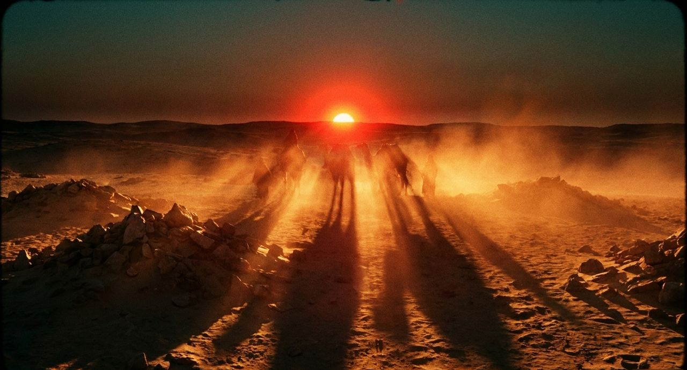
용도: 자연·지형
태그: dawn, desert, sunrise_light_rays
쓰인 카드 172장 보기
- 365 1일 2027판 · 창세기 1–2장 · 2번째 카드 — 배경 · 거듭 나오는 좋다는 말씀 · 1장 · 보시기에 좋았더라
- 365 2일 2027판 · 창세기 3–5장 · 9번째 카드 — 전환 · 비교 · 두 물음, 두 대답 · 숨은 사람, 모른다는 사람
- 365 3일 2027판 · 창세기 6–9장 · 9번째 카드 — 전환 · 비교 · 사람의 악함과 하나님의 말씀 · 사람의 마음은 여전히 악하지만
- 365 4일 2027판 · 창세기 10–11장 · 2번째 카드 — 배경 · 퍼져 나간 족속들 · 10장 · 각기 언어와 종족과 나라대로
- 365 5일 2027판 · 창세기 12–16장 · 12번째 카드 — 의미 · 어려움을 겪는 두 사람을 살피시다 · 살피시는 하나님
- 365 6일 2027판 · 창세기 17–20장 · 7번째 카드 — 전환 · 막으신 분 · 20:6
- 365 7일 2027판 · 창세기 21–23장 · 2번째 카드 — 배경 · 말씀하신 대로 받은 아들 · 21:1–3 · 말씀하신 대로
- 365 10일 2027판 · 창세기 29–31장 · 5번째 카드 — 전환 · 아침에 보니
- 365 11일 2027판 · 창세기 32–33장 · 7번째 카드 — 전환 · 이름과 축복 · 네 이름이 무엇이냐
- 365 12일 2027판 · 창세기 34–35장 · 10번째 카드 — 의미 · 다시 들은 약속 · 벧엘에서 다시 들은 복
- 365 13일 2027판 · 창세기 36장 · 8번째 카드 — 전환 · 왕이 있기 전에
- 365 14일 2027판 · 창세기 37–39장 · 10번째 카드 — 전환 · 옥에서도
- 365 15일 2027판 · 창세기 40–41장 · 7번째 카드 — 전환 · 기억난 사람 · 오늘 내 죄를 기억하나이다
- 365 16일 2027판 · 창세기 42–45장 · 8번째 카드 — 전환 · 내가 대신 남겠습니다
- 365 17일 2027판 · 창세기 46–47장 · 9번째 카드 — 의미 · 머무는 땅과 돌아갈 땅 · 머무는 땅, 돌아갈 땅
- 365 18일 2027판 · 창세기 48–50장 · 11번째 카드 — 의미 · 죽음 뒤에도 남은 돌보심 · 하나님이 반드시 돌보시리니
- 365 19일 2027판 · 출애굽기 1–2장 · 6번째 카드 — 전환 · 산파들에게 베푸신 은혜
- 365 20일 2027판 · 출애굽기 3–4장 · 5번째 카드 — 전환 · 첫 물음에 대한 답
- 365 21일 2027판 · 출애굽기 5–6장 · 2번째 카드 — 배경 · 바로에게 전한 말씀 · 내 백성을 보내라
- 365 24일 2027판 · 출애굽기 12–13장 · 7번째 카드 — 전환 · 나를 위하여 행하신 일
- 365 26일 2027판 · 출애굽기 16–18장 · 2번째 카드 — 배경 · 어제의 마라 · 쓴 물 앞에서
- 365 27일 2027판 · 출애굽기 19–20장 · 7번째 카드 — 전환 · 구원받은 백성의 삶 · 구원받은 백성이 지킬 말씀
- 365 28일 2027판 · 출애굽기 21–24장 · 2번째 카드 — 배경 · 다짐 뒤의 법 · 가장 먼저 나오는 종에 관한 법
- 365 30일 2027판 · 출애굽기 28–29장 · 6번째 카드 — 전환 · 여호와 앞의 기념
- 365 31일 2027판 · 출애굽기 30–31장 · 7번째 카드 — 전환 · 함께 세운 사람들 · 오홀리압과 지혜로운 모든 자
- 365 32일 2027판 · 출애굽기 32–34장 · 6번째 카드 — 긴장 · 깨진 판 · 산 아래로 던진 판
- 365 34일 2027판 · 출애굽기 39–40장 · 6번째 카드 — 전환 · 명령하신 대로 되었으므로
- 365 35일 2027판 · 레위기 1–6장 · 8번째 카드 — 전환 · 끝마다 돌아오는 말 · 아홉 번의 사함
- 365 37일 2027판 · 레위기 11–12장 · 7번째 카드 — 전환 · 너희도 거룩할지어다
- 365 39일 2027판 · 레위기 16–17장 · 6번째 카드 — 전환 · 이 날에
- 365 40일 2027판 · 레위기 18–20장 · 2번째 카드 — 배경 · 거룩하라 · 온 회중에게 주신 말씀
- 365 41일 2027판 · 레위기 21–22장 · 2번째 카드 — 배경 · 제사장들에게 · 하나님의 음식을 드리는 자
- 365 42일 2027판 · 레위기 23–24장 · 8번째 카드 — 의미 · 이미 들은 말씀 · 밭 모퉁이까지 다 거두지 말고
- 365 43일 2027판 · 레위기 25–27장 · 5번째 카드 — 전환 · 토지는 다 내 것
- 365 44일 2027판 · 민수기 1–2장 · 2번째 카드 — 배경 · 둘째 해 둘째 달 · 시내 광야 회막에서
- 365 45일 2027판 · 민수기 3–4장 · 3번째 카드 — 배경 · 아론 앞에 서서 · 아론에게 맡겨진 자들
- 365 46일 2027판 · 민수기 5–6장 · 6번째 카드 — 전환 · 여호와께 거룩한 자
- 365 49일 2027판 · 민수기 11–14장 · 3번째 카드 — 배경 · 내가 주는 땅 · 정탐하러 보낸 사람들
- 365 50일 2027판 · 민수기 15–17장 · 2번째 카드 — 배경 · 들어갈 땅의 규례 · 광야에서 들은 땅의 이야기
- 365 51일 2027판 · 민수기 18–19장 · 1번째 카드 — 가까이 나아가는 자, 죄를 담당할 자
- 365 52일 2027판 · 민수기 20–21장 · 2번째 카드 — 배경 · 다시 가데스 · 물이 없는 곳
- 365 53일 2027판 · 민수기 22–25장 · 7번째 카드 — 전환 · 회중 가운데에서 일어난 사람 · 비느하스가 보고 일어나다
- 365 55일 2027판 · 민수기 31–33장 · 6번째 카드 — 전환 · 너희 조상들도
- 365 56일 2027판 · 민수기 34–36장 · 11번째 카드 — 의미 · 명령하신 대로 · 딸들이 한 일
- 365 57일 2027판 · 신명기 1–4장 · 8번째 카드 — 전환 · 붙어 떠나지 않은 너희
- 365 58일 2027판 · 신명기 5–8장 · 10번째 카드 — 의미 · 비교해 보기 · 같은 배부름 · '먹어서 배부르고' 다음에 오는 말
- 365 59일 2027판 · 신명기 9–11장 · 7번째 카드 — 전환 · 전과 같이 엎드려 · 다시 사십 주 사십 야
- 365 96일 2027판 · 사무엘상 24–26장 · 8번째 카드 — 전환 · 막아선 사람 · 보내신 이를 찬송하다
- 365 157일 2027판 · 욥기 1–3장 · 2번째 카드 — 배경 · 우스 땅의 한 사람 · 서술자가 먼저 소개한 사람
- 365 172일 2027판 · 시편 8–14편 · 6번째 카드 — 전환 · 관을 씌우셨나이다 · 영화와 존귀로
- 365 222일 2027판 · 이사야 51–55장 · 9번째 카드 — 의미 · 우리가 생각한 것 · 다시 보는 고백
- 365 301일 2027판 · 누가복음 10–11장 · 8번째 카드 — 전환 · 좋은 편 · 한 가지만이라도
- 365 302일 2027판 · 누가복음 12–13장 · 9번째 카드 — 의미 · 다시 나온 양식 · 쌓아 두는 사람, 나누어 주는 청지기
- 365 303일 2027판 · 누가복음 14–16장 · 6번째 카드 — 전환 · 아직도 거리가 먼데
- 365 308일 2027판 · 요한복음 3–4장 · 6번째 카드 — 전환 · 이처럼 사랑하사
- 365 309일 2027판 · 요한복음 5–6장 · 9번째 카드 — 전환 · 결코 내쫓지 · 누가 오는가
- 365 310일 2027판 · 요한복음 7–8장 · 9번째 카드 — 전환 · 정죄하지 아니하노니 · 여자만 남았더라
- 365 313일 2027판 · 요한복음 13–14장 · 8번째 카드 — 전환 · 근심하지 말라 · 아버지 집에 거할 곳
- 365 314일 2027판 · 요한복음 15–16장 · 4번째 카드 — 전환 · 포도나무와 가지
- 365 315일 2027판 · 요한복음 17장 · 7번째 카드 — 전환 · 다 하나가 되어
- 365 316일 2027판 · 요한복음 18–21장 · 7번째 카드 — 전환 · 닭이 울더라 · 동산에 있던 그 사람
- 365 317일 2027판 · 사도행전 1–2장 · 10번째 카드 — 의미 · 성령이 임하시면 · 증인이 된 사람들
- 365 318일 2027판 · 사도행전 3–5장 · 11번째 카드 — 의미 · 그치지 아니하니라 · 예루살렘을 채운 것
- 365 319일 2027판 · 사도행전 6–7장 · 2번째 카드 — 배경 · 거짓 증인들 · 고발당한 스데반
- 365 320일 2027판 · 사도행전 8–9장 · 9번째 카드 — 전환 · 나의 그릇
- 365 321일 2027판 · 사도행전 10–12장 · 8번째 카드 — 전환 · 말씀 듣는 모든 사람에게 · 베드로가 말할 때에
- 365 322일 2027판 · 사도행전 13–15장 · 8번째 카드 — 전환 · 함께 행하신 모든 일
- 365 323일 2027판 · 사도행전 16–18장 · 2번째 카드 — 배경 · 다시 길을 나서다 · 루스드라에서
- 365 325일 2027판 · 사도행전 21–24장 · 12번째 카드 — 의미 · 나의 일을 증언한 · 미뤄지는 처결
- 365 326일 2027판 · 사도행전 25–28장 · 11번째 카드 — 의미 · 담대하게 거침없이 · 로마의 셋집에서
- 365 327일 2027판 · 로마서 1–3장 · 9번째 카드 — 전환 · 이제는
- 365 328일 2027판 · 로마서 4–8장 · 1번째 카드 — 한 사람과 한 사람
- 365 329일 2027판 · 로마서 9–11장 · 2번째 카드 — 배경 · 큰 근심 · 골육의 친척을 위하여
- 365 330일 2027판 · 로마서 12–16장 · 2번째 카드 — 배경 · 그러므로 · 자비하심으로 권하노니
- 365 331일 2027판 · 고린도전서 1–4장 · 7번째 카드 — 전환 · 너희를 부르심을 보라 · 택하신 사람들
- 365 332일 2027판 · 고린도전서 5–7장 · 2번째 카드 — 배경 · 들리는 소식 · 오히려 교만하여져서
- 365 333일 2027판 · 고린도전서 8–10장 · 2번째 카드 — 배경 · 우상의 제물 · 우리가 다 지식이 있는 줄을 아나
- 365 334일 2027판 · 고린도전서 11–14장 · 2번째 카드 — 배경 · 신령한 것에 대하여 · 은사는 여러 가지나
- 365 336일 2027판 · 고린도후서 1–2장 · 6번째 카드 — 전환 · 하나님은 미쁘시니라 · 대답의 첫마디
- 365 337일 2027판 · 고린도후서 3–7장 · 10번째 카드 — 의미 · 예수의 생명 · 같은 목적, 두 번
- 365 338일 2027판 · 고린도후서 8–9장 · 2번째 카드 — 배경 · 성도 섬기는 일 · 일 년 전에 시작한 일
- 365 339일 2027판 · 고린도후서 10–13장 · 9번째 카드 — 전환 · 약한 그 때에 · 그러므로 기뻐하노니
- 365 340일 2027판 · 갈라디아서 1–2장 · 2번째 카드 — 배경 · 다른 복음 · 이같이 속히 떠나
- 365 341일 2027판 · 갈라디아서 3–6장 · 7번째 카드 — 전환 · 성령을 따라 행하라
- 365 342일 2027판 · 에베소서 1–6장 · 7번째 카드 — 전환 · 이제는 가까워졌느니라 · 그리스도의 피로
- 365 343일 2027판 · 빌립보서 1–4장 · 11번째 카드 — 의미 · 주께서 가까우시니라 · 기쁨의 근거
- 365 344일 2027판 · 골로새서 1–4장 · 8번째 카드 — 전환 · 함께 섰느니라
- 365 345일 2027판 · 데살로니가전서 1–5장 · 1번째 카드 — 강림을 기다리는 오늘
- 365 346일 2027판 · 데살로니가후서 1–3장 · 2번째 카드 — 배경 · 박해와 환난 중에 · 자라는 믿음
- 365 347일 2027판 · 디모데전서 1–6장 · 2번째 카드 — 배경 · 에베소에 머물라 · 헛된 말에 빠져
- 365 348일 2027판 · 디모데후서 1–4장 · 2번째 카드 — 배경 · 외조모와 어머니 · 먼저 있던 믿음
- 365 349일 2027판 · 디도서 1–3장 · 6번째 카드 — 전환 · 은혜가 나타나 · 우리를 양육하시되
- 365 350일 2027판 · 빌레몬서 · 2번째 카드 — 배경 · 빌레몬의 집 · 성도들의 마음을 평안하게 한 사람
- 365 351일 2027판 · 히브리서 1–6장 · 2번째 카드 — 배경 · 여러 부분과 여러 모양으로 · 말씀하신 하나님
- 365 352일 2027판 · 히브리서 7–10장 · 8번째 카드 — 전환 · 한 영원한 제사
- 365 353일 2027판 · 히브리서 11–13장 · 8번째 카드 — 전환 · 더 좋은 것 · 이 사람들은 다
- 365 354일 2027판 · 야고보서 1–5장 · 8번째 카드 — 의미 · 위로부터 · 같은 곳에서 내려오는 것
- 365 355일 2027판 · 베드로전서 1–5장 · 9번째 카드 — 전환 · 그리스도의 고난에 참여
- 365 356일 2027판 · 베드로후서 1–3장 · 1번째 카드 — 약속이 어디 있느냐, 더딘 것이 아니라
- 365 357일 2027판 · 요한일서 1–3장 · 2번째 카드 — 배경 · 우리가 전하는 소식 · 빛이신 하나님
- 365 358일 2027판 · 요한일서 4–5장 · 2번째 카드 — 배경 · 서로 사랑하자 · 다시 돌아온 계명
- 365 359일 2027판 · 요한이서 · 요한삼서 · 유다서 · 10번째 카드 — 의미 · 증거를 받은 사람 · 디오드레베 곁의 데메드리오
- 365 360일 2027판 · 요한계시록 1–3장 · 9번째 카드 — 전환 · 1장에서 본 모습 · 편지마다 다시 오는 환상
- 365 361일 2027판 · 요한계시록 4–6장 · 6번째 카드 — 전환 · 본 것
- 365 362일 2027판 · 요한계시록 7–9장 · 7번째 카드 — 전환 · 구원하심이 · 서 있는 무리의 외침
- 365 363일 2027판 · 요한계시록 10–14장 · 8번째 카드 — 전환 · 어디로 인도하든지 · 따라가는 자들
- 365 364일 2027판 · 요한계시록 15–18장 · 8번째 카드 — 전환 · 한 시간에
- 365 365일 2027판 · 요한계시록 19–22장 · 10번째 카드 — 의미 · 하나님의 장막 · 함께 계시는 성
- 365 28일 2028판 · 출애굽기 21–24장 · 2번째 카드 — 배경 · 법정에 선 사람 · 법정에서도 길에서도
- 365 96일 2028판 · 사무엘상 24–26장 · 9번째 카드 — 전환 · 열흘 뒤 · 다른 날이 오다
- 365 157일 2028판 · 욥기 1–3장 · 2번째 카드 — 배경 · 늘 번제를 드린 사람 · 욥의 행위가 항상
- 365 172일 2028판 · 시편 8–14편 · 6번째 카드 — 전환 · 시인의 대답
- 365 222일 2028판 · 이사야 51–55장 · 6번째 카드 — 전환 · 나타내셨으므로 · 드러난 거룩한 팔
- 365 301일 2028판 · 누가복음 10–11장 · 8번째 카드 — 전환 · 요나의 표적 · 주어질 단 하나의 표적
- 365 354일 2028판 · 야고보서 1–5장 · 2번째 카드 — 배경 · 듣기만 하여 · 말과 행함 사이
- 리딩지저스 36주차 1일째 · 사도행전 1–3장 · 6번째 카드 — 전환 · 하나님께서 살리셨으니
- 리딩지저스 36주차 2일째 · 사도행전 4–5장 · 7번째 카드 — 전환 · 보고 들은 것 · 대답과 기도
- 리딩지저스 36주차 3일째 · 사도행전 6–8장 · 9번째 카드 — 전환 · 사마리아도 · 사마리아 성에서
- 리딩지저스 36주차 5일째 · 사도행전 11–13장 · 8번째 카드 — 전환 · 헤롯의 손에서
- 리딩지저스 36주차 6일째 · 사도행전 14–15장 · 2번째 카드 — 배경 · 이고니온에서 · 주께서 그들의 손으로
- 리딩지저스 37주차 1일째 · 사도행전 16–18장 · 5번째 카드 — 긴장 · 시기하여 · 야손의 집
- 리딩지저스 37주차 2일째 · 사도행전 19–20장 · 6번째 카드 — 전환 · 마치려 함에는
- 리딩지저스 37주차 3일째 · 사도행전 21–22장 · 12번째 카드 — 의미 · 결박당한 증인 · 무엇을 위하여
- 리딩지저스 37주차 4일째 · 사도행전 23–24장 · 8번째 카드 — 전환 · 같은 소망
- 리딩지저스 37주차 5일째 · 사도행전 25–26장 · 10번째 카드 — 전환 · 미친 것이 아니요 · 참되고 온전한 말
- 리딩지저스 38주차 1일째 · 로마서 1–3장 · 2번째 카드 — 배경 · 로마에 있는 너희에게 · 부끄러워하지 아니하노니
- 리딩지저스 38주차 2일째 · 로마서 4–6장 · 6번째 카드 — 전환 · 우리도 위함이니
- 리딩지저스 38주차 3일째 · 로마서 7–8장 · 1번째 카드 — 율법이 할 수 없는 그것을
- 리딩지저스 38주차 4일째 · 로마서 9–11장 · 2번째 카드 — 배경 · 큰 근심 · 골육의 친척을 위하여
- 리딩지저스 38주차 5일째 · 로마서 12–14장 · 7번째 카드 — 전환 · 선으로
- 리딩지저스 38주차 6일째 · 로마서 15–16장 · 2번째 카드 — 배경 · 서로 받으라 · 권면이 모이는 곳
- 리딩지저스 39주차 1일째 · 고린도전서 1–4장 · 2번째 카드 — 배경 · 글로에의 집 편으로 · 너희 가운데 분쟁이
- 리딩지저스 39주차 2일째 · 고린도전서 5–8장 · 11번째 카드 — 의미 · 영원히 고기를 먹지 아니하여 · 지식보다 형제
- 리딩지저스 39주차 3일째 · 고린도전서 9–12장 · 6번째 카드 — 긴장 · 각각 자기의 만찬 · 모일 때에 분쟁이
- 리딩지저스 39주차 4일째 · 고린도전서 13–16장 · 7번째 카드 — 전환 · 썩을 것으로 심고
- 리딩지저스 39주차 5일째 · 고린도후서 1–3장 · 2번째 카드 — 배경 · 모든 위로의 하나님 · 눈물로 쓴 편지
- 리딩지저스 39주차 6일째 · 고린도후서 4–6장 · 5번째 카드 — 전환 · 새 것이 되었도다 · 이제부터는
- 리딩지저스 40주차 1일째 · 고린도후서 7–9장 · 7번째 카드 — 전환 · 즐겨 내는 자
- 리딩지저스 40주차 2일째 · 고린도후서 10–13장 · 10번째 카드 — 의미 · 너희 자신을 시험하라 · 증거를 구하던 물음
- 리딩지저스 40주차 3일째 · 갈라디아서 1–6장 · 7번째 카드 — 전환 · 다만 이것을
- 리딩지저스 40주차 4일째 · 에베소서 1–3장 · 5번째 카드 — 전환 · 함께 살리셨고 · 긍휼이 풍성하신 하나님
- 리딩지저스 40주차 5일째 · 에베소서 4–6장 · 6번째 카드 — 전환 · 사랑하신 것 같이
- 리딩지저스 41주차 1일째 · 골로새서 1–4장 · 8번째 카드 — 의미 · 비교해 보기 · 죽었거든, 살리심을 받았으면 · 같은 틀, 다른 권면
- 리딩지저스 41주차 2일째 · 데살로니가전서 1–5장 · 5번째 카드 — 전환 · 예수 안에서 자는 자들 · 하나님이 데리고 오시리라
- 리딩지저스 41주차 3일째 · 데살로니가후서 1–3장 · 5번째 카드 — 전환 · 처음부터 너희를 · 주께서 사랑하시는 형제들아
- 리딩지저스 41주차 4일째 · 디모데전서 1–6장 · 2번째 카드 — 배경 · 에베소에 머물라 · 다른 것을 가르치는 사람들
- 리딩지저스 41주차 5일째 · 디모데후서 1–4장 · 12번째 카드 — 의미 · 배운 일에 거한 사람 · 두 배움을 가르는 것
- 리딩지저스 41주차 6일째 · 디도서 1장 – 빌레몬서 1장 · 7번째 카드 — 전환 · 자기 백성이 되게
- 리딩지저스 42주차 1일째 · 히브리서 1–3장 · 7번째 카드 — 전환 · 예수를 보니
- 리딩지저스 42주차 2일째 · 히브리서 4–6장 · 4번째 카드 — 긴장 · 약속이 남아 있을지라도 · 이번에는 우리
- 리딩지저스 42주차 3일째 · 히브리서 7–9장 · 2번째 카드 — 배경 · 다른 한 제사장 · 더 좋은 소망
- 리딩지저스 42주차 4일째 · 히브리서 10–13장 · 3번째 카드 — 배경 · 하나님께 나아가자 · 첫 권면
- 리딩지저스 42주차 5일째 · 야고보서 1–3장 · 11번째 카드 — 의미 · 행함을 보일지니라 · 혀를 비추어 보는 것
- 리딩지저스 42주차 6일째 · 야고보서 4–5장 · 5번째 카드 — 전환 · 더욱 큰 은혜 · 판정 뒤의 은혜
- 리딩지저스 43주차 1일째 · 베드로전서 1–5장 · 8번째 카드 — 전환 · 그러나 너희는
- 리딩지저스 43주차 2일째 · 베드로후서 1–3장 · 11번째 카드 — 의미 · 그를 아는 지식에서 · 떠나는 이가 남긴 말
- 리딩지저스 43주차 3일째 · 요한일서 1–3장 · 2번째 카드 — 배경 · 생명의 말씀 · 듣고 보고 만진 것
- 리딩지저스 43주차 4일째 · 요한일서 4–5장 · 1번째 카드 — 하나님께 속한 자, 세상을 이기는 믿음
- 리딩지저스 43주차 5일째 · 요한이서 1장 – 요한삼서 1장 · 2번째 카드 — 배경 · 장로가 쓴 두 편지 · 장로가 기뻐한 일
- 리딩지저스 43주차 6일째 · 유다서 1장 · 9번째 카드 — 전환 · 기억하라 · 말이 바뀌는 자리
- 리딩지저스 44주차 1일째 · 요한계시록 1장 · 10번째 카드 — 의미 · 비교해 보기 · 두 번의 자기소개 · 알파와 오메가, 처음과 마지막
- 리딩지저스 44주차 2일째 · 요한계시록 2–3장 · 2번째 카드 — 배경 · 일곱 교회에 편지하라 · 내가 아노니
- 리딩지저스 44주차 3일째 · 요한계시록 4–5장 · 7번째 카드 — 전환 · 한 어린 양 · 요한이 본 것
- 리딩지저스 44주차 4일째 · 요한계시록 6–7장 · 6번째 카드 — 전환 · 잠시 동안 쉬되
- 리딩지저스 44주차 5일째 · 요한계시록 8–9장 · 8번째 카드 — 전환 · 회개하지 아니하고
- 리딩지저스 44주차 6일째 · 요한계시록 10–11장 · 7번째 카드 — 전환 · 삼 일 반 후에
- 리딩지저스 45주차 1일째 · 요한계시록 12–13장 · 10번째 카드 — 의미 · 누가 이겼는가 · 성도들의 인내와 믿음이 여기
- 리딩지저스 45주차 2일째 · 요한계시록 14–15장 · 9번째 카드 — 전환 · 모세의 노래, 어린 양의 노래
- 리딩지저스 45주차 3일째 · 요한계시록 16–17장 · 8번째 카드 — 전환 · 풀어 준 비밀 · 멸망으로 들어갈 자
- 리딩지저스 45주차 4일째 · 요한계시록 18–19장 · 7번째 카드 — 전환 · 이 일 후에 내가 들으니 · 할렐루야
- 리딩지저스 45주차 5일째 · 요한계시록 20–21장 · 7번째 카드 — 전환 · 새 하늘과 새 땅 · 처음 것이 없어지고
- 리딩지저스 45주차 6일째 · 요한계시록 22장 · 10번째 카드 — 의미 · 더하지도 제하지도 · 듣는 모든 사람에게
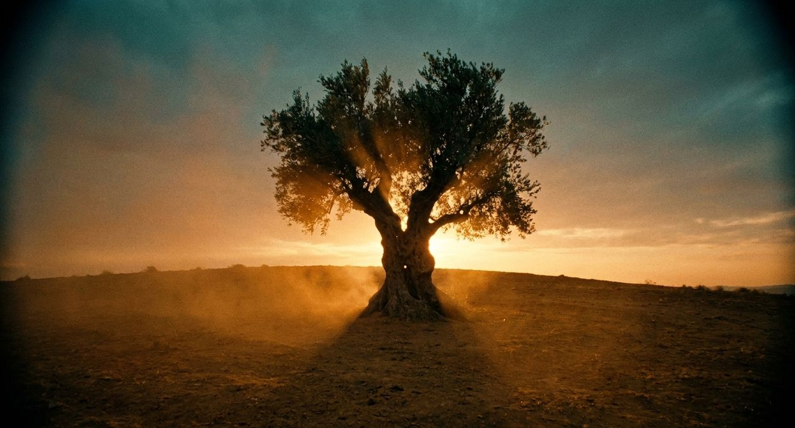
용도: 자연·지형
태그: olive_tree, dusk
쓰인 카드 67장 보기
- 365 1일 2027판 · 창세기 1–2장 · 5번째 카드 — 전환 · 좋지 않다고 하신 것 · 2:18
- 365 2일 2027판 · 창세기 3–5장 · 5번째 카드 — 전환 · 부르시는 하나님 · 3:9
- 365 3일 2027판 · 창세기 6–9장 · 8번째 카드 — 전환 · 나오는 생명들 · 8:2–19 · 들어가라 하신 하나님이 이제 나오라고 하십니다
- 365 4일 2027판 · 창세기 10–11장 · 8번째 카드 — 전환 · 멈춘 건설, 흩어진 사람들 · 11:8 · 건설하기를 그쳤더라
- 365 10일 2027판 · 창세기 29–31장 · 6번째 카드 — 전환 · 비교해 보기 · 맏아들과 언니 · 맏아들이라던 야곱, 언니가 먼저라는 라반
- 365 12일 2027판 · 창세기 34–35장 · 11번째 카드 — 의미 · 상실을 지나는 귀환 · 약속 뒤에도 이어진 길
- 365 15일 2027판 · 창세기 40–41장 · 5번째 카드 — 긴장 · 해석대로, 그러나 잊힘 · 관원장은 돌아갔지만
- 365 24일 2027판 · 출애굽기 12–13장 · 6번째 카드 — 전환 · 그 밤의 사건 · 밤중에 일어난 일
- 365 28일 2027판 · 출애굽기 21–24장 · 10번째 카드 — 의미 · 하나님 앞의 식탁 · 산 위의 식탁
- 365 30일 2027판 · 출애굽기 28–29장 · 10번째 카드 — 의미 · 하나님이 거룩하게 하시는 섬김 · 백성을 기억하며 하나님 앞에
- 365 39일 2027판 · 레위기 16–17장 · 7번째 카드 — 의미 · 일 년에 한 번 · 본토인이든 거류민이든
- 365 44일 2027판 · 민수기 1–2장 · 3번째 카드 — 배경 · 함께 설 사람들 · 지파마다 한 사람씩
- 365 45일 2027판 · 민수기 3–4장 · 9번째 카드 — 전환 · 더 많은 이백칠십삼 명 · 속전으로
- 365 50일 2027판 · 민수기 15–17장 · 6번째 카드 — 긴장 · 되돌아온 말 · 분수에 지나치느니라
- 365 51일 2027판 · 민수기 18–19장 · 8번째 카드 — 전환 · 레위인도 담당 · 회막에서 봉사하는 사람들
- 365 52일 2027판 · 민수기 20–21장 · 12번째 카드 — 의미 · 거룩함을 나타내신 분 · 우리가, 그리고 여호와께서
- 365 55일 2027판 · 민수기 31–33장 · 12번째 카드 — 의미 · 여호와 앞에서 받은 땅 · 건너가기까지
- 365 302일 2027판 · 누가복음 12–13장 · 7번째 카드 — 전환 · 하나님께 대하여 · 누구를 위하여 쌓았나
- 365 309일 2027판 · 요한복음 5–6장 · 12번째 카드 — 의미 · 누구에게로 · 떠나가는 무리 곁에서
- 365 314일 2027판 · 요한복음 15–16장 · 9번째 카드 — 의미 · 비교해 보기 · 택하였다는 말 · 택하심이 이어지는 두 곳
- 365 315일 2027판 · 요한복음 17장 · 5번째 카드 — 긴장 · 세상에 있사옵고 · 떠나는 아들, 남는 사람들
- 365 323일 2027판 · 사도행전 16–18장 · 10번째 카드 — 의미 · 침묵하지 말고 · 내가 너와 함께 있으매
- 365 330일 2027판 · 로마서 12–16장 · 6번째 카드 — 긴장 · 네 음식으로 · 대신하여 죽으신 형제
- 365 332일 2027판 · 고린도전서 5–7장 · 6번째 카드 — 긴장 · 모든 것이 내게 가하나 · 두 번 나오는 말
- 365 334일 2027판 · 고린도전서 11–14장 · 6번째 카드 — 전환 · 사랑은 · 사랑이 하는 일, 하지 않는 일
- 365 336일 2027판 · 고린도후서 1–2장 · 10번째 카드 — 의미 · 너희를 아끼려 함이라 · 가지 않은 까닭
- 365 338일 2027판 · 고린도후서 8–9장 · 10번째 카드 — 의미 · 처음과 끝 · 하나님께서, 하나님께
- 365 340일 2027판 · 갈라디아서 1–2장 · 10번째 카드 — 의미 · 하나님께 영광을 · 얼굴로는 알지 못하고
- 365 346일 2027판 · 데살로니가후서 1–3장 · 8번째 카드 — 의미 · 편지마다 표시로서 · 친필로 쓴 문안
- 365 347일 2027판 · 디모데전서 1–6장 · 10번째 카드 — 의미 · 경건의 비밀 · 붙들 것은 한 분
- 365 350일 2027판 · 빌레몬서 · 8번째 카드 — 의미 · 내게 하듯 · 형제로 맞아들이는 일
- 365 351일 2027판 · 히브리서 1–6장 · 3번째 카드 — 배경 · 듣는 것이 둔하므로 · 들은 사람들의 형편
- 365 352일 2027판 · 히브리서 7–10장 · 11번째 카드 — 의미 · 다시 드릴 것이 없느니라 · 순서를 끝낸 제사
- 365 355일 2027판 · 베드로전서 1–5장 · 8번째 카드 — 긴장 · 불 시험 · 이상히 여기지 말고
- 365 356일 2027판 · 베드로후서 1–3장 · 10번째 카드 — 의미 · 그의 약속대로 · 어디 있느냐 물은 그 약속
- 365 357일 2027판 · 요한일서 1–3장 · 9번째 카드 — 의미 · 말과 혀로만 · 요한의 기준
- 365 358일 2027판 · 요한일서 4–5장 · 8번째 카드 — 의미 · 하나님을 사랑하는 자는 · 사람의 말, 주께 받은 계명
- 365 361일 2027판 · 요한계시록 4–6장 · 8번째 카드 — 의미 · 비교해 보기 · 들은 것과 본 것 · 사자, 그리고 어린 양
- 365 96일 2028판 · 사무엘상 24–26장 · 6번째 카드 — 긴장 · 맹세를 받은 왕 · 울며 맹세를 받다
- 365 222일 2028판 · 이사야 51–55장 · 8번째 카드 — 전환 · 연한 순 같고 · 팔을 묻는 말 뒤에 보이는 종
- 리딩지저스 36주차 1일째 · 사도행전 1–3장 · 10번째 카드 — 의미 · 다시 들리는 문장 · 같은 뒤집힘, 두 번째 설교
- 리딩지저스 36주차 6일째 · 사도행전 14–15장 · 12번째 카드 — 의미 · 아무 짐도 · 안디옥에 온 편지
- 리딩지저스 37주차 4일째 · 사도행전 23–24장 · 7번째 카드 — 긴장 · 더둘로의 고발 · 총독 앞에서
- 리딩지저스 38주차 1일째 · 로마서 1–3장 · 7번째 카드 — 긴장 · 유대인이라 불리는 네가 · 율법을 자랑하는 네가
- 리딩지저스 38주차 2일째 · 로마서 4–6장 · 5번째 카드 — 긴장 · 바랄 수 없는 중에 · 죽은 것 같음을 알고도
- 리딩지저스 38주차 4일째 · 로마서 9–11장 · 8번째 카드 — 긴장 · 돌감람나무인 네가 · 뿌리의 진액을 함께
- 리딩지저스 38주차 5일째 · 로마서 12–14장 · 11번째 카드 — 의미 · 너희의 선한 것이 · 형제 앞의 식탁
- 리딩지저스 39주차 1일째 · 고린도전서 1–4장 · 9번째 카드 — 의미 · 비교해 보기 · 누구에게 속하였나 · 처음의 말, 바울의 대답
- 리딩지저스 39주차 6일째 · 고린도후서 4–6장 · 9번째 카드 — 의미 · 대신하여 간청하노니 · 그리스도를 대신하여
- 리딩지저스 40주차 1일째 · 고린도후서 7–9장 · 10번째 카드 — 의미 · 가난과 부요 · 가난이 부요하게 하다
- 리딩지저스 40주차 3일째 · 갈라디아서 1–6장 · 10번째 카드 — 의미 · 자유를 위하여 · 사랑으로 서로 종 노릇
- 리딩지저스 40주차 5일째 · 에베소서 4–6장 · 8번째 카드 — 의미 · 자신을 버리사 · 같은 사랑이 집 안으로
- 리딩지저스 41주차 2일째 · 데살로니가전서 1–5장 · 11번째 카드 — 의미 · 주와 함께 · 깨어 있든지 자든지
- 리딩지저스 41주차 4일째 · 디모데전서 1–6장 · 11번째 카드 — 의미 · 범사에 유익하니 · 경건이 주는 큰 이익
- 리딩지저스 41주차 6일째 · 디도서 1장 – 빌레몬서 1장 · 9번째 카드 — 의미 · 빌레몬에게 · 억지가 아니라 자의로
- 리딩지저스 42주차 1일째 · 히브리서 1–3장 · 10번째 카드 — 의미 · 형제들과 같이 · 부끄러워하지 아니하시고
- 리딩지저스 42주차 4일째 · 히브리서 10–13장 · 11번째 카드 — 의미 · 영문 밖으로 · 그에게 나아가자
- 리딩지저스 42주차 6일째 · 야고보서 4–5장 · 10번째 카드 — 의미 · 가까이, 가까우니라 · 가까이하라, 가까우니라
- 리딩지저스 43주차 3일째 · 요한일서 1–3장 · 10번째 카드 — 의미 · 이로써 사랑을 알고 · 사랑이 보인 자리
- 리딩지저스 43주차 4일째 · 요한일서 4–5장 · 10번째 카드 — 의미 · 그를 지키시매 · 누가 지키는가
- 리딩지저스 43주차 5일째 · 요한이서 1장 – 요한삼서 1장 · 3번째 카드 — 배경 · 사랑은 이것이니 · 사랑을 풀어 주는 말
- 리딩지저스 44주차 2일째 · 요한계시록 2–3장 · 11번째 카드 — 의미 · 문 밖에서 · 사랑하는 자를 책망하여
- 리딩지저스 44주차 3일째 · 요한계시록 4–5장 · 9번째 카드 — 의미 · 비교해 보기 · 두 번의 '합당' · 무엇 때문에 합당한가
- 리딩지저스 44주차 5일째 · 요한계시록 8–9장 · 9번째 카드 — 전환 · 다시 회개하지 아니하더라 · 두 번 적힌 말
- 리딩지저스 44주차 6일째 · 요한계시록 10–11장 · 9번째 카드 — 의미 · 일곱째 나팔 · 세세토록 왕 노릇 하시리로다
- 리딩지저스 45주차 3일째 · 요한계시록 16–17장 · 11번째 카드 — 의미 · 하나님의 말씀이 응하기까지 · 비밀이 말하는 끝
- 리딩지저스 45주차 4일째 · 요한계시록 18–19장 · 11번째 카드 — 의미 · 그 이름은 하나님의 말씀 · 어떤 혼인을 알리는가
용도: 자연·지형
태그: soil, drought, desert
쓰인 카드 18장 보기
- 365 1일 2027판 · 창세기 1–2장 · 4번째 카드 — 긴장 · 동산에서 살아가는 사람 · 2:7–17 · 흙과 숨, 그리고 동산
- 365 21일 2027판 · 출애굽기 5–6장 · 10번째 카드 — 전환 · 다시 주신 명령 · 다시 맡기신 명령
- 365 37일 2027판 · 레위기 11–12장 · 9번째 카드 — 의미 · 분별한 것이니라 · 거룩하신 하나님의 백성으로
- 365 38일 2027판 · 레위기 13–15장 · 5번째 카드 — 긴장 · 부정하다 부정하다 · 스스로 외치는 사람
- 365 44일 2027판 · 민수기 1–2장 · 9번째 카드 — 전환 · 진노가 임하지 않게 · 성막 사방의 진
- 365 50일 2027판 · 민수기 15–17장 · 9번째 카드 — 긴장 · 그치지 않은 원망 · 열두 지팡이
- 365 330일 2027판 · 로마서 12–16장 · 7번째 카드 — 긴장 · 강한 우리는 · 강한 자가 담당할 것
- 365 345일 2027판 · 데살로니가전서 1–5장 · 8번째 카드 — 긴장 · 자는 자들 · 소망 없는 다른 이와 같이
- 365 354일 2028판 · 야고보서 1–5장 · 8번째 카드 — 전환 · 주의 뜻이면 · 맞세운 다른 말
- 리딩지저스 36주차 6일째 · 사도행전 14–15장 · 5번째 카드 — 긴장 · 제사하고자 · 제우스와 헤르메스
- 리딩지저스 37주차 1일째 · 사도행전 16–18장 · 6번째 카드 — 긴장 · 옮겨진 말 · 다른 임금
- 리딩지저스 37주차 4일째 · 사도행전 23–24장 · 10번째 카드 — 긴장 · 지금은 가라 · 벨릭스의 대답
- 리딩지저스 38주차 3일째 · 로마서 7–8장 · 2번째 카드 — 배경 · 법 아는 자들에게 · 남편이 죽으면
- 리딩지저스 39주차 4일째 · 고린도전서 13–16장 · 6번째 카드 — 전환 · 뿌리는 씨 · 형체를 주시는 이
- 리딩지저스 43주차 3일째 · 요한일서 1–3장 · 8번째 카드 — 전환 · 처음부터 들은 소식 · 그 소식의 내용
- 리딩지저스 43주차 5일째 · 요한이서 1장 – 요한삼서 1장 · 11번째 카드 — 의미 · 하나님께 속하고 · 장로의 기준
- 리딩지저스 44주차 2일째 · 요한계시록 2–3장 · 9번째 카드 — 전환 · 내게서 사서 · 금과 흰 옷과 안약
- 리딩지저스 44주차 5일째 · 요한계시록 8–9장 · 11번째 카드 — 의미 · 남은 사람들 · 나팔 소리 끝에 남은 것
용도: 자연·지형
태그: spring, water, stones
쓰인 카드 28장 보기
- 365 52일 2027판 · 민수기 20–21장 · 7번째 카드 — 긴장 · 두 번 친 반석 · 솟아난 물
- 365 222일 2027판 · 이사야 51–55장 · 8번째 카드 — 긴장 · 상한 모양 · 뜻밖의 얼굴
- 365 305일 2027판 · 누가복음 20–21장 · 6번째 카드 — 전환 · 버린 돌
- 365 308일 2027판 · 요한복음 3–4장 · 8번째 카드 — 긴장 · 어디서 · 그릇도 없고, 우물은 깊은데
- 365 312일 2027판 · 요한복음 11–12장 · 6번째 카드 — 긴장 · 돌로 막았거늘 · 벌써 냄새가 나나이다
- 365 319일 2027판 · 사도행전 6–7장 · 9번째 카드 — 긴장 · 일제히 달려들어 · 연설이 다시 일어나다
- 365 322일 2027판 · 사도행전 13–15장 · 6번째 카드 — 긴장 · 루스드라에서 · 신들이라더니 돌로
- 365 329일 2027판 · 로마서 9–11장 · 7번째 카드 — 긴장 · 종일 내 손을 · 거슬러 말하는 백성에게
- 365 333일 2027판 · 고린도전서 8–10장 · 9번째 카드 — 의미 · 덕을 세우다 · 처음 말이 돌아오다
- 365 338일 2027판 · 고린도후서 8–9장 · 8번째 카드 — 전환 · 넘치게 하시는 하나님 · 모든 은혜를 넘치게
- 365 341일 2027판 · 갈라디아서 3–6장 · 3번째 카드 — 배경 · 할례를 받게 하려는 이들 · 다시 율법 아래로
- 365 346일 2027판 · 데살로니가후서 1–3장 · 6번째 카드 — 전환 · 가르침을 받은 전통 · 이미 받은 말
- 365 351일 2027판 · 히브리서 1–6장 · 11번째 카드 — 의미 · 멜기세덱의 반차를 따라 · 말씀하신 아들, 대제사장이신 아들
- 365 355일 2027판 · 베드로전서 1–5장 · 7번째 카드 — 긴장 · 의를 위하여 · 선을 행함으로 받는 고난
- 365 354일 2028판 · 야고보서 1–5장 · 10번째 카드 — 의미 · 행할 줄 알고도 · 하나로 묶이지 않는 판정
- 리딩지저스 36주차 3일째 · 사도행전 6–8장 · 6번째 카드 — 긴장 · 귀를 막고 · 연설 끝의 돌
- 리딩지저스 36주차 4일째 · 사도행전 9–10장 · 11번째 카드 — 의미 · 누가 능히 금하리요 · 만난 자리에서
- 리딩지저스 36주차 6일째 · 사도행전 14–15장 · 7번째 카드 — 긴장 · 돌로 바울을 · 같은 무리가
- 리딩지저스 37주차 4일째 · 사도행전 23–24장 · 11번째 카드 — 의미 · 비교해 보기 · 다시 꺼낸 말 · 공회에서, 총독 앞에서
- 리딩지저스 38주차 3일째 · 로마서 7–8장 · 5번째 카드 — 긴장 · 한 다른 법 · 법과 법이 싸워
- 리딩지저스 38주차 4일째 · 로마서 9–11장 · 4번째 카드 — 긴장 · 무슨 말을 하리요 · 의를 얻은 이방인, 이르지 못한 이스라엘
- 리딩지저스 40주차 2일째 · 고린도후서 10–13장 · 11번째 카드 — 의미 · 세우려고 · 무너뜨리지 않고 세우려
- 리딩지저스 42주차 6일째 · 야고보서 4–5장 · 7번째 카드 — 긴장 · 너는 누구이기에 · 판단하는 말
- 리딩지저스 43주차 1일째 · 베드로전서 1–5장 · 1번째 카드 — 버린 돌, 보배로운 돌
- 리딩지저스 43주차 3일째 · 요한일서 1–3장 · 11번째 카드 — 의미 · 너희 안에 거하면 · 처음부터 들은 것이 거하는 사람
- 리딩지저스 44주차 2일째 · 요한계시록 2–3장 · 12번째 카드 — 의미 · 아노니 · 실상을 판정하시는 이
- 리딩지저스 44주차 6일째 · 요한계시록 10–11장 · 10번째 카드 — 의미 · 비교해 보기 · 하나님을 부르는 이름 · 장차 오실 이
- 리딩지저스 45주차 6일째 · 요한계시록 22장 · 8번째 카드 — 전환 · 오라
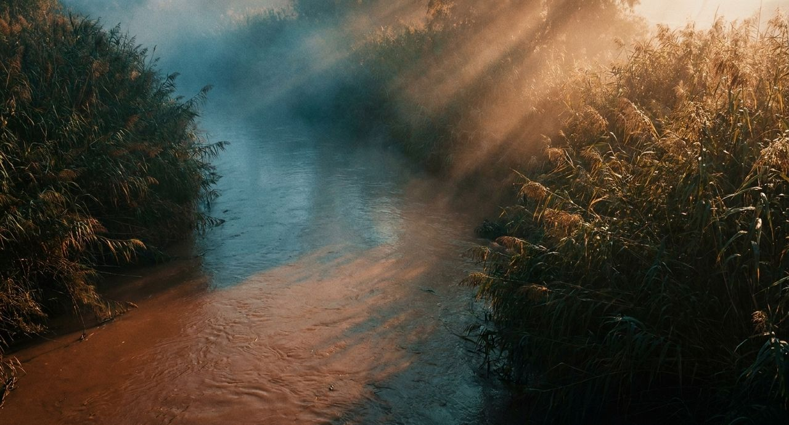
용도: 자연·지형
태그: river, reeds, dawn
쓰인 카드 35장 보기
- 365 11일 2027판 · 창세기 32–33장 · 9번째 카드 — 전환 · 달려와 안는 형 · 절하는 동생, 달려온 형
- 365 49일 2027판 · 민수기 11–14장 · 9번째 카드 — 전환 · 너희의 유아들은
- 365 53일 2027판 · 민수기 22–25장 · 9번째 카드 — 전환 · 평화의 언약 · 그와 그의 후손에게
- 365 55일 2027판 · 민수기 31–33장 · 5번째 카드 — 긴장 · 건너지 않게 하소서 · 이 땅을 우리에게
- 365 59일 2027판 · 신명기 9–11장 · 11번째 카드 — 의미 · 괄호 속의 레위 지파 · 언약 궤를 메는 지파
- 365 311일 2027판 · 요한복음 9–10장 · 7번째 카드 — 긴장 · 한 가지 아는 것 · 죄인인 줄 아노라
- 365 328일 2027판 · 로마서 4–8장 · 6번째 카드 — 전환 · 같지 아니하니 · 더욱
- 365 329일 2027판 · 로마서 9–11장 · 9번째 카드 — 전환 · 이제 긍휼을 · 순종하지 아니함과 긍휼
- 365 330일 2027판 · 로마서 12–16장 · 8번째 카드 — 전환 · 서로 받으라
- 365 331일 2027판 · 고린도전서 1–4장 · 10번째 카드 — 의미 · 주 안에서 자랑하라 · 자랑할 곳
- 365 332일 2027판 · 고린도전서 5–7장 · 11번째 카드 — 의미 · 주는 몸을 위하여 · 제한의 근거
- 365 333일 2027판 · 고린도전서 8–10장 · 11번째 카드 — 의미 · 무엇을 하든지 · 나와 같이
- 365 336일 2027판 · 고린도후서 1–2장 · 8번째 카드 — 전환 · 그리스도 안에서 예가 되니
- 365 337일 2027판 · 고린도후서 3–7장 · 11번째 카드 — 의미 · 날로 새로워지도다 · 심히 큰 능력은 하나님께
- 365 340일 2027판 · 갈라디아서 1–2장 · 11번째 카드 — 의미 · 시작하신 이 · 뒤집힘은 하나님에게서
- 365 341일 2027판 · 갈라디아서 3–6장 · 10번째 카드 — 의미 · 시작한 대로 · 성령으로 시작, 성령으로 행함
- 365 347일 2027판 · 디모데전서 1–6장 · 6번째 카드 — 전환 · 괴수가 본이 되다 · 먼저 보이신 오래 참으심
- 365 350일 2027판 · 빌레몬서 · 5번째 카드 — 전환 · 잠시와 영원히 · 떠남을 다르게 보다
- 365 353일 2027판 · 히브리서 11–13장 · 11번째 카드 — 의미 · 어제나 오늘이나 · 이름들의 줄이 바라보는 분
- 365 358일 2027판 · 요한일서 4–5장 · 6번째 카드 — 전환 · 먼저
- 365 364일 2027판 · 요한계시록 15–18장 · 11번째 카드 — 의미 · 우는 자들과 즐거워하는 자들 · 각각 누구인가
- 365 172일 2028판 · 시편 8–14편 · 7번째 카드 — 전환 · 들으셨사오니 · 말이 바뀌는 자리
- 리딩지저스 37주차 1일째 · 사도행전 16–18장 · 8번째 카드 — 전환 · 상고한 뒤에 · 믿는 사람이 많고
- 리딩지저스 38주차 1일째 · 로마서 1–3장 · 9번째 카드 — 전환 · 이제는
- 리딩지저스 38주차 3일째 · 로마서 7–8장 · 8번째 카드 — 전환 · 하나님은 하시나니
- 리딩지저스 38주차 6일째 · 로마서 15–16장 · 9번째 카드 — 전환 · 하나님의 뜻을 따라 · 무엇을 빌어 달라 하는가
- 리딩지저스 39주차 1일째 · 고린도전서 1–4장 · 11번째 카드 — 의미 · 받지 아니한 것이 무엇이냐 · 누가 너를 구별하였느냐
- 리딩지저스 39주차 4일째 · 고린도전서 13–16장 · 11번째 카드 — 의미 · 그러므로 · 승리를 주시는 하나님
- 리딩지저스 39주차 5일째 · 고린도후서 1–3장 · 9번째 카드 — 전환 · 주의 영이 계신 곳 · 자유
- 리딩지저스 40주차 1일째 · 고린도후서 7–9장 · 8번째 카드 — 전환 · 넘치게 하시는 하나님 · 드릴 것은 어디서 오는가
- 리딩지저스 40주차 5일째 · 에베소서 4–6장 · 9번째 카드 — 의미 · 주 안에서 강건하여지고 · 걸음은 서기로
- 리딩지저스 42주차 3일째 · 히브리서 7–9장 · 11번째 카드 — 의미 · 나타나 · 다시 나오는 '나타나'
- 리딩지저스 43주차 1일째 · 베드로전서 1–5장 · 9번째 카드 — 전환 · 전에는 … 이제는 · 바뀐 이름
- 리딩지저스 43주차 4일째 · 요한일서 4–5장 · 8번째 카드 — 전환 · 이기는 자가 누구냐 · 무엇을 믿는 믿음인가
- 리딩지저스 44주차 4일째 · 요한계시록 6–7장 · 11번째 카드 — 의미 · 물음과 대답의 '까지' · 어느 때까지, 차기까지, 인치기까지
용도: 자연·지형
태그: sea, waves, storm_sky
쓰인 카드 116장 보기
- 365 3일 2027판 · 창세기 6–9장 · 2번째 카드 — 배경 · 땅에 가득한 죄악 · 6:5–13 · 보시고, 한탄하시고
- 365 12일 2027판 · 창세기 34–35장 · 6번째 카드 — 긴장 · 아버지의 걱정과 아들들의 반문 · 멸망을 걱정하는 아버지
- 365 18일 2027판 · 창세기 48–50장 · 8번째 카드 — 긴장 · 보복을 예상한 형들 · 혹시 우리를 미워하여
- 365 22일 2027판 · 출애굽기 7–9장 · 4번째 카드 — 긴장 · 따라 하던 요술사 · 그와 같이 행하므로
- 365 23일 2027판 · 출애굽기 10–11장 · 6번째 카드 — 긴장 · 서로 볼 수 없는 사흘 · 더듬을 만한 흑암
- 365 25일 2027판 · 출애굽기 14–15장 · 6번째 카드 — 전환 · 너희를 위하여 싸우시리니
- 365 27일 2027판 · 출애굽기 19–20장 · 8번째 카드 — 긴장 · 우리가 죽을까 하나이다 · 두려워 멀리 선 백성
- 365 33일 2027판 · 출애굽기 35–38장 · 5번째 카드 — 긴장 · 마음이 지혜로운 자는 · 만들 사람도 마음으로
- 365 52일 2027판 · 민수기 20–21장 · 8번째 카드 — 전환 · 하나님의 판정
- 365 57일 2027판 · 신명기 1–4장 · 5번째 카드 — 긴장 · 볼 자가 하나도 없으리라 · 하나님이 맹세하신 말씀
- 365 96일 2027판 · 사무엘상 24–26장 · 4번째 카드 — 긴장 · 굴 깊은 곳 · 24장 · 굴 깊은 곳에서
- 365 157일 2027판 · 욥기 1–3장 · 4번째 카드 — 긴장 · 땅의 '하루는' · 나만 홀로 피하였으므로
- 365 306일 2027판 · 누가복음 22–24장 · 4번째 카드 — 긴장 · 멀찍이 · 멀찍이 따라간 사람
- 365 309일 2027판 · 요한복음 5–6장 · 7번째 카드 — 긴장 · 찾는 까닭 · 떡을 먹고 배부른 까닭
- 365 311일 2027판 · 요한복음 9–10장 · 6번째 카드 — 긴장 · 부모의 대답 · 우리는 알지 못하나이다
- 365 312일 2027판 · 요한복음 11–12장 · 4번째 카드 — 긴장 · 또 그리로 · 돌로 치려 하였는데
- 365 313일 2027판 · 요한복음 13–14장 · 4번째 카드 — 긴장 · 너희 중 하나가 · 심령이 괴로워
- 365 314일 2027판 · 요한복음 15–16장 · 8번째 카드 — 긴장 · 세상이 미워하면 · 먼저 나를 미워한 줄을
- 365 316일 2027판 · 요한복음 18–21장 · 5번째 카드 — 긴장 · 나는 아니라 · 첫 번째 물음
- 365 318일 2027판 · 사도행전 3–5장 · 6번째 카드 — 긴장 · 시기가 가득하여 · 시기로 일어난 사람들
- 365 319일 2027판 · 사도행전 6–7장 · 5번째 카드 — 긴장 · 모세를 밀어뜨려 · 두 번째 거절
- 365 324일 2027판 · 사도행전 19–20장 · 5번째 카드 — 긴장 · 너희는 누구냐 · 벗은 몸으로 도망하다
- 365 325일 2027판 · 사도행전 21–24장 · 4번째 카드 — 긴장 · 들은 말 · 사실이 아니고
- 365 326일 2027판 · 사도행전 25–28장 · 5번째 카드 — 긴장 · 유라굴로 · 구원의 여망마저
- 365 327일 2027판 · 로마서 1–3장 · 5번째 카드 — 긴장 · 하늘로부터 · 또 하나 나타나는 것
- 365 328일 2027판 · 로마서 4–8장 · 5번째 카드 — 긴장 · 사망이 왕 노릇 · 아담으로부터 모세까지
- 365 329일 2027판 · 로마서 9–11장 · 5번째 카드 — 긴장 · 불의가 있느냐 · 긍휼히 여길 자를
- 365 330일 2027판 · 로마서 12–16장 · 5번째 카드 — 긴장 · 업신여기고 비판하고 · 서로를 향한 두 시선
- 365 331일 2027판 · 고린도전서 1–4장 · 4번째 카드 — 긴장 · 미련한 것 · 같은 십자가, 다른 이름
- 365 332일 2027판 · 고린도전서 5–7장 · 5번째 카드 — 긴장 · 형제가 형제와 · 알지 못하느냐
- 365 333일 2027판 · 고린도전서 8–10장 · 4번째 카드 — 긴장 · 약한 자의 양심 · 모든 사람에게 있는 것은 아니므로
- 365 334일 2027판 · 고린도전서 11–14장 · 3번째 카드 — 긴장 · 쓸 데가 없다 · 지체가 지체에게 하는 말
- 365 335일 2027판 · 고린도전서 15–16장 · 1번째 카드 — 부활이 없다면, 그러나 이제
- 365 337일 2027판 · 고린도후서 3–7장 · 1번째 카드 — 질그릇에 담긴 보배
- 365 338일 2027판 · 고린도후서 8–9장 · 4번째 카드 — 긴장 · 마게도냐 교회 · 하나님께서 주신 은혜
- 365 339일 2027판 · 고린도후서 10–13장 · 6번째 카드 — 긴장 · 광주리를 타고 · 성벽을 내려간 사도
- 365 340일 2027판 · 갈라디아서 1–2장 · 5번째 카드 — 긴장 · 심히 박해하여 · 교회를 멸하려던 사람
- 365 341일 2027판 · 갈라디아서 3–6장 · 6번째 카드 — 긴장 · 자유로 육체의 기회를 · 다른 쪽의 위험
- 365 342일 2027판 · 에베소서 1–6장 · 6번째 카드 — 긴장 · 그리스도 밖에 · 멀리 있던 너희
- 365 343일 2027판 · 빌립보서 1–4장 · 4번째 카드 — 긴장 · 괴로움을 더하려는 이들 · 투기와 분쟁으로
- 365 344일 2027판 · 골로새서 1–4장 · 5번째 카드 — 긴장 · 철학과 헛된 속임수 · 사로잡을까 주의하라
- 365 345일 2027판 · 데살로니가전서 1–5장 · 6번째 카드 — 긴장 · 헛되게 할까 · 참다 못하여
- 365 346일 2027판 · 데살로니가후서 1–3장 · 3번째 카드 — 긴장 · 돌고 있는 말 · 주의 날이 이르렀다
- 365 347일 2027판 · 디모데전서 1–6장 · 4번째 카드 — 긴장 · 내가 전에는 · 숨기지 않은 과거
- 365 349일 2027판 · 디도서 1–3장 · 4번째 카드 — 긴장 · 시인하나 행위로는 · 선한 일을 버리는 자
- 365 352일 2027판 · 히브리서 7–10장 · 1번째 카드 — 날마다, 해마다, 그리고 단번에
- 365 354일 2027판 · 야고보서 1–5장 · 2번째 카드 — 배경 · 여러 가지 시험 · 흩어진 열두 지파에게
- 365 355일 2027판 · 베드로전서 1–5장 · 5번째 카드 — 긴장 · 선을 행함으로 · 부당하게 받는 고난
- 365 356일 2027판 · 베드로후서 1–3장 · 5번째 카드 — 긴장 · 조롱하는 자들 · 그냥 있다는 말
- 365 359일 2027판 · 요한이서 · 요한삼서 · 유다서 · 1번째 카드 — 진리 안에서 행한다는 것, 문 앞에서
- 365 360일 2027판 · 요한계시록 1–3장 · 2번째 카드 — 배경 · 밧모라 하는 섬 · 네가 보는 것을 써서
- 365 361일 2027판 · 요한계시록 4–6장 · 5번째 카드 — 긴장 · 들은 것 · 울지 말라
- 365 362일 2027판 · 요한계시록 7–9장 · 8번째 카드 — 전환 · 이들이 누구며 · 장로가 풀어 준 무리
- 365 363일 2027판 · 요한계시록 10–14장 · 4번째 카드 — 긴장 · 바다에서 나온 짐승 · 누가 이 짐승과 같으냐
- 365 364일 2027판 · 요한계시록 15–18장 · 2번째 카드 — 배경 · 일곱 대접 뒤에 · 기억하신 바 된 성
- 365 365일 2027판 · 요한계시록 19–22장 · 6번째 카드 — 긴장 · 큰 음녀를 보이던 천사 · 17장의 초대
- 365 9일 2028판 · 창세기 26–28장 · 7번째 카드 — 긴장 · 메워진 우물 · 복 뒤에 온 시기
- 365 96일 2028판 · 사무엘상 24–26장 · 4번째 카드 — 긴장 · 굴 속의 '그 날' · 24장 · 이것이 그 날
- 365 157일 2028판 · 욥기 1–3장 · 7번째 카드 — 긴장 · 뼈와 살 · 이번에는 몸
- 365 222일 2028판 · 이사야 51–55장 · 2번째 카드 — 배경 · 내 팔 · 하나님이 먼저 말씀하신 팔
- 365 301일 2028판 · 누가복음 10–11장 · 7번째 카드 — 긴장 · 표적을 구하니 · 다른 구함
- 365 354일 2028판 · 야고보서 1–5장 · 3번째 카드 — 긴장 · 하나님께 시험을 받는다 · 사람이 하는 첫 번째 말
- 리딩지저스 36주차 1일째 · 사도행전 1–3장 · 7번째 카드 — 긴장 · 우리가 어찌할꼬 · 마음에 찔려
- 리딩지저스 36주차 2일째 · 사도행전 4–5장 · 6번째 카드 — 긴장 · 이 이름으로 아무에게도 · 공회의 결정
- 리딩지저스 36주차 5일째 · 사도행전 11–13장 · 5번째 카드 — 긴장 · 손을 들어 · 헤롯 왕의 손
- 리딩지저스 37주차 1일째 · 사도행전 16–18장 · 9번째 카드 — 긴장 · 거기도 가서 · 따라온 소동
- 리딩지저스 37주차 2일째 · 사도행전 19–20장 · 5번째 카드 — 긴장 · 오직 · 결박과 환난
- 리딩지저스 37주차 3일째 · 사도행전 21–22장 · 4번째 카드 — 긴장 · 바울의 띠 · 이 띠 임자를
- 리딩지저스 37주차 4일째 · 사도행전 23–24장 · 5번째 카드 — 긴장 · 나뉜 무리 · 부활도 없고
- 리딩지저스 37주차 5일째 · 사도행전 25–26장 · 9번째 카드 — 긴장 · 베스도의 외침 · 네 많은 학문이
- 리딩지저스 37주차 6일째 · 사도행전 27–28장 · 4번째 카드 — 긴장 · 남풍이 순하게 · 뜻을 이룬 줄 알고
- 리딩지저스 38주차 1일째 · 로마서 1–3장 · 4번째 카드 — 긴장 · 핑계하지 못할지니라 · 알 만한 것이 보였는데
- 리딩지저스 38주차 2일째 · 로마서 4–6장 · 3번째 카드 — 긴장 · 삯과 은혜 · 보수로 여겨지거니와
- 리딩지저스 38주차 3일째 · 로마서 7–8장 · 4번째 카드 — 긴장 · 원하는 것, 행하는 것 · 내 속에 거하는 죄
- 리딩지저스 38주차 4일째 · 로마서 9–11장 · 5번째 카드 — 긴장 · 자기 의를 · 열심이 있으나
- 리딩지저스 38주차 5일째 · 로마서 12–14장 · 2번째 카드 — 배경 · 그러므로 형제들아 · 모든 자비하심으로
- 리딩지저스 38주차 6일째 · 로마서 15–16장 · 5번째 카드 — 긴장 · 여러 번 막혔더니 · 편지 처음의 그 말
- 리딩지저스 39주차 1일째 · 고린도전서 1–4장 · 6번째 카드 — 긴장 · 아직도 육신에 속한 자 · 같은 말이 다시
- 리딩지저스 39주차 2일째 · 고린도전서 5–8장 · 1번째 카드 — 그리스도께서 위하여 죽으신 형제
- 리딩지저스 39주차 3일째 · 고린도전서 9–12장 · 5번째 카드 — 긴장 · 두 식탁 · 주의 식탁, 귀신의 식탁
- 리딩지저스 39주차 4일째 · 고린도전서 13–16장 · 4번째 카드 — 긴장 · 부활이 없다 하느냐 · 교회 안의 다른 말
- 리딩지저스 39주차 5일째 · 고린도후서 1–3장 · 6번째 카드 — 긴장 · 얼굴에 쓴 수건 · 모세가 쓴 수건
- 리딩지저스 39주차 6일째 · 고린도후서 4–6장 · 3번째 카드 — 긴장 · 심판대 앞에 · 몸으로 행한 것
- 리딩지저스 40주차 1일째 · 고린도후서 7–9장 · 5번째 카드 — 긴장 · 극심한 가난 · 가난이 넘치게 하다
- 리딩지저스 40주차 2일째 · 고린도후서 10–13장 · 4번째 카드 — 긴장 · 자기를 칭찬하는 자 · 자기로써 자기를
- 리딩지저스 40주차 4일째 · 에베소서 1–3장 · 6번째 카드 — 긴장 · 약속의 언약들에 대하여는 · 그리스도 밖에 있던 너희
- 리딩지저스 40주차 5일째 · 에베소서 4–6장 · 3번째 카드 — 긴장 · 이방인이 행함 같이 · 허망한 것으로
- 리딩지저스 40주차 6일째 · 빌립보서 1–4장 · 2번째 카드 — 배경 · 매인 사람의 소원 · 한마음으로 서서
- 리딩지저스 41주차 1일째 · 골로새서 1–4장 · 5번째 카드 — 긴장 · 어찌하여 규례에 · 붙잡지도, 맛보지도, 만지지도
- 리딩지저스 41주차 2일째 · 데살로니가전서 1–5장 · 4번째 카드 — 긴장 · 자는 자들에 관하여 · 소망 없는 다른 이와 같이
- 리딩지저스 41주차 3일째 · 데살로니가후서 1–3장 · 3번째 카드 — 긴장 · 쉽게 흔들리거나 · 주의 날이 이르렀다는 말
- 리딩지저스 41주차 4일째 · 디모데전서 1–6장 · 7번째 카드 — 긴장 · 부하려 하는 자들 · 자기를 찔렀도다
- 리딩지저스 41주차 5일째 · 디모데후서 1–4장 · 5번째 카드 — 긴장 · 항상 배우나 · 진리에 이르지 못하는 배움
- 리딩지저스 41주차 6일째 · 디도서 1장 – 빌레몬서 1장 · 4번째 카드 — 긴장 · 시인하나 행위로는 · 가정들을 무너뜨리는 가르침
- 리딩지저스 42주차 1일째 · 히브리서 1–3장 · 4번째 카드 — 긴장 · 아들에 관하여는 · 천사들과 견주어
- 리딩지저스 42주차 2일째 · 히브리서 4–6장 · 1번째 카드 — 들어가지 못한 안식, 앞서 들어가신 예수
- 리딩지저스 42주차 3일째 · 히브리서 7–9장 · 7번째 카드 — 긴장 · 양심상 온전하게 할 수 없나니 · 개혁할 때까지
- 리딩지저스 42주차 4일째 · 히브리서 10–13장 · 5번째 카드 — 긴장 · 모이기를 폐하는 · 어떤 사람들의 습관
- 리딩지저스 42주차 5일째 · 야고보서 1–3장 · 1번째 카드 — 한 입에서 찬송과 저주가
- 리딩지저스 42주차 6일째 · 야고보서 4–5장 · 2번째 카드 — 배경 · 어디로부터 · 싸움의 출처
- 리딩지저스 43주차 1일째 · 베드로전서 1–5장 · 5번째 카드 — 긴장 · 비방하는 자들 · 이상히 여기는 이웃
- 리딩지저스 43주차 2일째 · 베드로후서 1–3장 · 7번째 카드 — 긴장 · 자유를 준다 하여도 · 그들이 내놓는 약속
- 리딩지저스 43주차 5일째 · 요한이서 1장 – 요한삼서 1장 · 6번째 카드 — 긴장 · 으뜸되기를 좋아하는 · 다른 이름
- 리딩지저스 43주차 6일째 · 유다서 1장 · 1번째 카드 — 이 사람들, 그러나 너희는
- 리딩지저스 44주차 1일째 · 요한계시록 1장 · 3번째 카드 — 배경 · 밧모라 하는 섬 · 주의 날에 들린 음성
- 리딩지저스 44주차 2일째 · 요한계시록 2–3장 · 4번째 카드 — 긴장 · 자칭 · 스스로 붙인 이름
- 리딩지저스 44주차 3일째 · 요한계시록 4–5장 · 5번째 카드 — 긴장 · 합당한 자가 없어 · 크게 울었더니
- 리딩지저스 44주차 4일째 · 요한계시록 6–7장 · 5번째 카드 — 긴장 · 제단 아래 · 어느 때까지
- 리딩지저스 44주차 5일째 · 요한계시록 8–9장 · 4번째 카드 — 긴장 · 첫째 나팔 · 삼분의 일
- 리딩지저스 44주차 6일째 · 요한계시록 10–11장 · 2번째 카드 — 배경 · 힘 센 다른 천사 · 맹세한 천사
- 리딩지저스 45주차 1일째 · 요한계시록 12–13장 · 3번째 카드 — 긴장 · 하늘의 전쟁 · 이기지 못하여
- 리딩지저스 45주차 2일째 · 요한계시록 14–15장 · 4번째 카드 — 긴장 · 영원한 복음 · 모든 민족에게 외치는 천사
- 리딩지저스 45주차 3일째 · 요한계시록 16–17장 · 2번째 카드 — 배경 · 일곱 대접 · 기억하신 바 된 큰 성
- 리딩지저스 45주차 4일째 · 요한계시록 18–19장 · 4번째 카드 — 긴장 · 멀리 서서 우는 자들 · 상품을 사는 자가 없음이라
- 리딩지저스 45주차 5일째 · 요한계시록 20–21장 · 4번째 카드 — 긴장 · 잠깐 놓이리라 · 미혹하는 마귀의 끝
- 리딩지저스 45주차 6일째 · 요한계시록 22장 · 5번째 카드 — 긴장 · 다시 엎드린 요한 · 하나님께 경배하라
용도: 자연·지형
태그: sea, dawn, lake
쓰인 카드 8장 보기
- 365 307일 2027판 · 요한복음 1–2장 · 6번째 카드 — 긴장 · 나사렛에서 · 나사렛에서 무슨 선한 것이
- 365 308일 2027판 · 요한복음 3–4장 · 9번째 카드 — 전환 · 내가 그라 · 네게 말하는 내가 그라
- 365 310일 2027판 · 요한복음 7–8장 · 2번째 카드 — 배경 · 초막절 · 형제들까지도
- 365 316일 2027판 · 요한복음 18–21장 · 10번째 카드 — 전환 · 세 번째 물음
- 365 317일 2027판 · 사도행전 1–2장 · 9번째 카드 — 의미 · 약속하신 것 · 기다리라 하신 그것
- 365 320일 2027판 · 사도행전 8–9장 · 4번째 카드 — 긴장 · 잔멸할새 · 집집마다
- 리딩지저스 36주차 2일째 · 사도행전 4–5장 · 12번째 카드 — 의미 · 그 이름을 위하여 · 막힌 이름, 그치지 않은 가르침
- 리딩지저스 43주차 2일째 · 베드로후서 1–3장 · 3번째 카드 — 배경 · 내가 떠난 후에라도 · 다시 생각나게
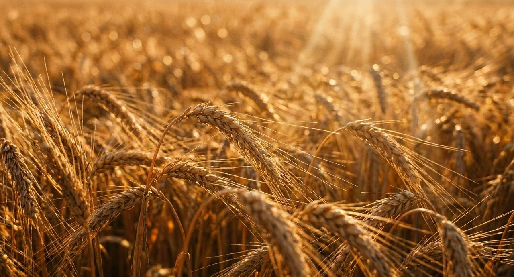
용도: 소품·동작
태그: wheat_field, harvest
쓰인 카드 19장 보기
- 365 2일 2027판 · 창세기 3–5장 · 7번째 카드 — 긴장 · 문 앞의 죄 · 4:5–8 · 죄가 문에 엎드려 있느니라
- 365 15일 2027판 · 창세기 40–41장 · 10번째 카드 — 의미 · 비교해 보기 · 잊음과 잊게 하심 · 잊었더라, 잊어버리게 하셨다
- 365 26일 2027판 · 출애굽기 16–18장 · 7번째 카드 — 긴장 · 먹을 것과 지킬 말씀 · 남겨 둔 만나, 서로 다른 결과
- 365 302일 2027판 · 누가복음 12–13장 · 4번째 카드 — 긴장 · 풍성한 소출 · 어찌할까
- 365 324일 2027판 · 사도행전 19–20장 · 12번째 카드 — 의미 · 말씀이 흥왕하여 · 높여진 이름
- 365 332일 2027판 · 고린도전서 5–7장 · 7번째 카드 — 긴장 · 배와 몸 · 음식에서 몸으로
- 365 335일 2027판 · 고린도전서 15–16장 · 10번째 카드 — 의미 · 헛되지 않다 · '헛되다'가 옮겨 간 자리
- 365 338일 2027판 · 고린도후서 8–9장 · 1번째 카드 — 은혜는 어디서 시작되는가
- 365 341일 2027판 · 갈라디아서 3–6장 · 11번째 카드 — 의미 · 심는 대로 · 무엇을 위하여 심는가
- 365 349일 2027판 · 디도서 1–3장 · 10번째 카드 — 의미 · 시작과 열매 · 은혜에서 시작되는 선한 일
- 리딩지저스 38주차 5일째 · 로마서 12–14장 · 12번째 카드 — 의미 · 하나님의 나라는 · 선으로 악을 이기는 자리
- 리딩지저스 39주차 1일째 · 고린도전서 1–4장 · 7번째 카드 — 전환 · 자라나게 하셨나니
- 리딩지저스 39주차 4일째 · 고린도전서 13–16장 · 1번째 카드 — 어떠한 몸으로 오느냐
- 리딩지저스 40주차 1일째 · 고린도후서 7–9장 · 1번째 카드 — 가난 속에서 넘친 것
- 리딩지저스 41주차 3일째 · 데살로니가후서 1–3장 · 11번째 카드 — 의미 · 선을 행하다가 · 굳건함이 드러나는 자리
- 리딩지저스 41주차 4일째 · 디모데전서 1–6장 · 9번째 카드 — 의미 · 부한 자들에게 · 참된 생명을 취하는 것
- 리딩지저스 42주차 6일째 · 야고보서 4–5장 · 8번째 카드 — 긴장 · 들으라 부한 자들아 · 밭에서 들리는 소리
- 리딩지저스 43주차 2일째 · 베드로후서 1–3장 · 2번째 카드 — 배경 · 지극히 큰 약속 · 더하고 굳게 하라
- 리딩지저스 45주차 2일째 · 요한계시록 14–15장 · 7번째 카드 — 긴장 · 거둘 때 · 흰 구름 위의 낫

용도: 장소·생활 배경
태그: fig_tree, vineyard, stones
쓰인 카드 14장 보기
- 365 2일 2027판 · 창세기 3–5장 · 4번째 카드 — 긴장 · 먹고 숨다 · 3:6–8 · 눈은 밝아졌는데
- 365 222일 2027판 · 이사야 51–55장 · 11번째 카드 — 의미 · 돈 없이 · 소식이 초대가 되다
- 365 305일 2027판 · 누가복음 20–21장 · 4번째 카드 — 긴장 · 돌로 칠 것이라 · 되물으신 질문
- 365 307일 2027판 · 요한복음 1–2장 · 7번째 카드 — 전환 · 먼저 보신 분 · 무화과나무 아래에서
- 365 314일 2027판 · 요한복음 15–16장 · 2번째 카드 — 배경 · 여기를 떠나자 · 참포도나무
- 365 322일 2027판 · 사도행전 13–15장 · 5번째 카드 — 긴장 · 이고니온에서도 · 같은 순서가 다시
- 365 329일 2027판 · 로마서 9–11장 · 8번째 카드 — 전환 · 버리셨느냐 · 남은 자가 있느니라
- 365 349일 2027판 · 디도서 1–3장 · 9번째 카드 — 의미 · 이 말이 미쁘도다 · 다시, 선한 일
- 365 222일 2028판 · 이사야 51–55장 · 9번째 카드 — 의미 · 높이 들려, 멸시를 받아 · 같은 종, 두 말
- 365 301일 2028판 · 누가복음 10–11장 · 5번째 카드 — 전환 · 간청함을 인하여 · 닫힌 문이 열리는 까닭
- 리딩지저스 38주차 1일째 · 로마서 1–3장 · 6번째 카드 — 긴장 · 다시 두 이름 · 환난에도, 영광에도
- 리딩지저스 38주차 4일째 · 로마서 9–11장 · 12번째 카드 — 의미 · 인자하심과 준엄하심 · 접붙이실 능력
- 리딩지저스 41주차 3일째 · 데살로니가후서 1–3장 · 6번째 카드 — 전환 · 첫 번째 굳건하게 · 명령: 굳건하게 서서
- 리딩지저스 43주차 1일째 · 베드로전서 1–5장 · 6번째 카드 — 긴장 · 사람에게는 버린 바 · 산 돌이신 예수
용도: 자연·지형
태그: mountain_peak, flowers, pasture
쓰인 카드 4장 보기
- 365 13일 2027판 · 창세기 36장 · 6번째 카드 — 전환 · 세일의 거주자 · 세일 산에 거주하니라
- 365 57일 2027판 · 신명기 1–4장 · 4번째 카드 — 긴장 · 가데스 바네아에서 · 올라가서 차지하라
- 365 365일 2027판 · 요한계시록 19–22장 · 8번째 카드 — 전환 · 이리 오라 · 21장의 초대
- 리딩지저스 43주차 2일째 · 베드로후서 1–3장 · 5번째 카드 — 긴장 · 교묘히 만든 이야기 · 무엇에 기댄 말인가
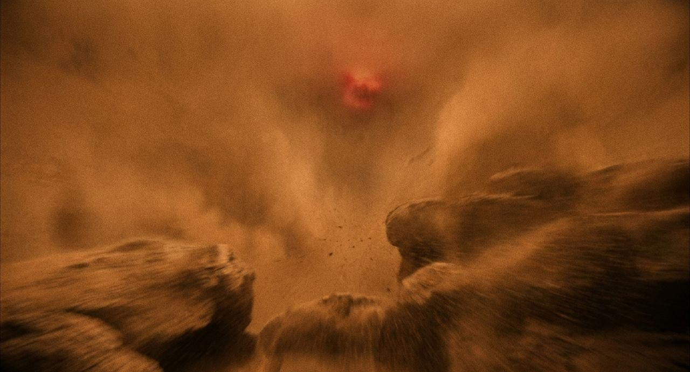
용도: 자연·지형
태그: dust, sandstorm, desert, wind
쓰인 카드 97장 보기
- 365 2일 2027판 · 창세기 3–5장 · 10번째 카드 — 긴장 · 칠 배와 칠십칠 배 · 4:15–24 · 칠 배, 그리고 칠십칠 배
- 365 4일 2027판 · 창세기 10–11장 · 9번째 카드 — 의미 · 바벨이라는 이름 · 11:9 · 그 이름을 바벨이라
- 365 5일 2027판 · 창세기 12–16장 · 9번째 카드 — 긴장 · 학대와 도망 · 16:5–6 · 당신의 눈에 좋을 대로
- 365 7일 2027판 · 창세기 21–23장 · 7번째 카드 — 긴장 · 뻗은 손 · 22:9–10 · 칼을 잡은 손
- 365 12일 2027판 · 창세기 34–35장 · 5번째 카드 — 긴장 · 칼과 노략 · 할례를 받은 지 사흘째
- 365 13일 2027판 · 창세기 36장 · 7번째 카드 — 긴장 · 두 족장 목록 · 에서의 자손과 호리 족속
- 365 16일 2027판 · 창세기 42–45장 · 6번째 카드 — 긴장 · 두 번째 방문의 식탁 · 나이대로 앉은 식탁
- 365 17일 2027판 · 창세기 46–47장 · 3번째 카드 — 긴장 · 비교해 보기 · 같은 애굽, 다른 말씀 · 내려가지 말고, 두려워하지 말라
- 365 20일 2027판 · 출애굽기 3–4장 · 6번째 카드 — 긴장 · 무엇이라 말할까 · 그의 이름이 무엇이냐
- 365 21일 2027판 · 출애굽기 5–6장 · 8번째 카드 — 긴장 · 듣지 못한 까닭 · 마음의 상함과 가혹한 노역
- 365 22일 2027판 · 출애굽기 7–9장 · 6번째 카드 — 전환 · 따라 하지 못함
- 365 26일 2027판 · 출애굽기 16–18장 · 8번째 카드 — 긴장 · 르비딤의 물음 · 이번에는 백성이 하나님을 시험하다
- 365 32일 2027판 · 출애굽기 32–34장 · 4번째 카드 — 긴장 · 산 아래의 요구 · 우리를 인도할 신
- 365 35일 2027판 · 레위기 1–6장 · 6번째 카드 — 긴장 · 이웃이 맡긴 물건 · 이웃을 속인 죄
- 365 36일 2027판 · 레위기 7–10장 · 5번째 카드 — 긴장 · 여덟째 날 · 영광이 나타나리라
- 365 37일 2027판 · 레위기 11–12장 · 4번째 카드 — 긴장 · 물과 하늘과 땅의 생물 · 하나하나 가르는 목록
- 365 38일 2027판 · 레위기 13–15장 · 4번째 카드 — 긴장 · 또 이레 동안 · 다시 보고, 또 보고
- 365 39일 2027판 · 레위기 16–17장 · 4번째 카드 — 긴장 · 들어오려면 · 씻고, 입고, 가져가고
- 365 40일 2027판 · 레위기 18–20장 · 3번째 카드 — 긴장 · 끝마다 붙는 이름 · 부모, 안식일, 신상
- 365 41일 2027판 · 레위기 21–22장 · 4번째 카드 — 긴장 · 대제사장 · 더 엄한 규례
- 365 42일 2027판 · 레위기 23–24장 · 3번째 카드 — 긴장 · 되풀이되는 두 말 · 성회로 모이고, 일하지 말고
- 365 44일 2027판 · 민수기 1–2장 · 5번째 카드 — 긴장 · 같은 말로 열두 번 · 이십 세 이상으로 싸움에 나갈 만한
- 365 45일 2027판 · 민수기 3–4장 · 5번째 카드 — 긴장 · 맏이를 대신하게 · 레위인을 택하여
- 365 46일 2027판 · 민수기 5–6장 · 5번째 카드 — 긴장 · 가족이 죽은 때에도 · 시체를 가까이 하지 말 것
- 365 48일 2027판 · 민수기 9–10장 · 8번째 카드 — 긴장 · 우리의 눈이 되어 주소서 · 호밥에게 한 부탁
- 365 49일 2027판 · 민수기 11–14장 · 7번째 카드 — 긴장 · 옷을 찢은 두 사람 · 같은 말로 시작한 다른 보고
- 365 50일 2027판 · 민수기 15–17장 · 4번째 카드 — 긴장 · 모여서 거스른 사람들 · 고라 무리의 말
- 365 51일 2027판 · 민수기 18–19장 · 7번째 카드 — 긴장 · 땅의 기업이 없는 아론 · 네 분깃, 네 기업
- 365 53일 2027판 · 민수기 22–25장 · 5번째 카드 — 긴장 · 싯딤에서 · 바알브올에게 가담하다
- 365 54일 2027판 · 민수기 26–30장 · 5번째 카드 — 긴장 · 계수된 총수 · 다시 센 총수
- 365 55일 2027판 · 민수기 31–33장 · 10번째 카드 — 전환 · 여호와 앞에서 · 너희 죄가 찾아낼 줄
- 365 56일 2027판 · 민수기 34–36장 · 6번째 카드 — 긴장 · 희년이 와도 · 아주 삭감되리이다
- 365 58일 2027판 · 신명기 5–8장 · 6번째 카드 — 긴장 · 아들이 물을 때 · 무슨 뜻이냐
- 365 59일 2027판 · 신명기 9–11장 · 6번째 카드 — 긴장 · 깨뜨린 판 · 너희의 목전에서
- 365 301일 2027판 · 누가복음 10–11장 · 5번째 카드 — 긴장 · 자기를 옳게 보이려고 · 내 이웃이 누구니이까
- 365 303일 2027판 · 누가복음 14–16장 · 5번째 카드 — 긴장 · 먼 나라에서 · 준비한 말
- 365 310일 2027판 · 요한복음 7–8장 · 5번째 카드 — 긴장 · 나를 보내신 이 · 알지만, 알지 못하는
- 365 314일 2027판 · 요한복음 15–16장 · 3번째 카드 — 긴장 · 스스로 열매를 · 붙어 있지 아니하면
- 365 319일 2027판 · 사도행전 6–7장 · 4번째 카드 — 긴장 · 요셉을 시기하여 · 첫 번째 거절
- 365 324일 2027판 · 사도행전 19–20장 · 10번째 카드 — 전환 · 아무 까닭도 없는 · 두 시간의 외침
- 365 327일 2027판 · 로마서 1–3장 · 6번째 카드 — 긴장 · 내버려 두사 · 바꾸었느니라, 내버려 두사
- 365 328일 2027판 · 로마서 4–8장 · 4번째 카드 — 긴장 · 한 사람으로 말미암아 · 들어온 죄와 사망
- 365 329일 2027판 · 로마서 9–11장 · 6번째 카드 — 긴장 · 긍휼의 그릇 · 이방인 중에서도
- 365 330일 2027판 · 로마서 12–16장 · 4번째 카드 — 긴장 · 연약한 자를 · 먹는 자, 먹지 않는 자
- 365 332일 2027판 · 고린도전서 5–7장 · 4번째 카드 — 긴장 · 적은 누룩 · 자랑하는 것이 옳지 아니하도다
- 365 333일 2027판 · 고린도전서 8–10장 · 5번째 카드 — 긴장 · 네 지식으로 · 위하여 죽으신 형제
- 365 335일 2027판 · 고린도전서 15–16장 · 5번째 카드 — 긴장 · 만일 · 그 말을 끝까지 따라가면
- 365 336일 2027판 · 고린도후서 1–2장 · 4번째 카드 — 긴장 · 경솔히 하였으리요 · 스스로 던지는 물음
- 365 338일 2027판 · 고린도후서 8–9장 · 6번째 카드 — 긴장 · 이 은혜에도 · 명령이 아니라
- 365 340일 2027판 · 갈라디아서 1–2장 · 6번째 카드 — 긴장 · 조상의 전통 · 누구보다 열심이었던
- 365 341일 2027판 · 갈라디아서 3–6장 · 5번째 카드 — 긴장 · 시작과 마침 · 육체로 마치겠느냐
- 365 345일 2027판 · 데살로니가전서 1–5장 · 2번째 카드 — 배경 · 많은 환난 가운데서 · 소문이 퍼진 교회
- 365 347일 2027판 · 디모데전서 1–6장 · 7번째 카드 — 긴장 · 두 번째 미쁘다 · 감독의 직분
- 365 348일 2027판 · 디모데후서 1–4장 · 7번째 카드 — 긴장 · 경건의 모양 · 고통하는 때
- 365 350일 2027판 · 빌레몬서 · 3번째 카드 — 긴장 · 전에는 무익하였으나 · 오네시모라는 이름
- 365 351일 2027판 · 히브리서 1–6장 · 7번째 카드 — 긴장 · 하나님의 온 집에서 · 이번에는 모세
- 365 352일 2027판 · 히브리서 7–10장 · 7번째 카드 — 긴장 · 매일 서서 · 서 있는 제사장들
- 365 354일 2027판 · 야고보서 1–5장 · 4번째 카드 — 긴장 · 요동하는 바다 물결 · 두 마음으로 구할 때
- 365 355일 2027판 · 베드로전서 1–5장 · 6번째 카드 — 긴장 · 그 자취를 따라 · 다시 그리스도의 고난
- 365 356일 2027판 · 베드로후서 1–3장 · 3번째 카드 — 배경 · 둘째 편지 · 기억할 말씀
- 365 357일 2027판 · 요한일서 1–3장 · 5번째 카드 — 긴장 · 그를 아노라 하고 · 안다는 말
- 365 361일 2027판 · 요한계시록 4–6장 · 10번째 카드 — 의미 · 인을 떼시는 어린 양 · 사자의 이름, 어린 양의 모습
- 365 362일 2027판 · 요한계시록 7–9장 · 4번째 카드 — 긴장 · 바람을 붙잡은 천사 · 인치기까지
- 365 363일 2027판 · 요한계시록 10–14장 · 5번째 카드 — 긴장 · 땅에서 올라온 짐승 · 어린 양 같이, 용처럼
- 365 28일 2028판 · 출애굽기 21–24장 · 6번째 카드 — 긴장 · 굽게 하지 말라 · 하나님이 금하시는 부당한 판결
- 365 354일 2028판 · 야고보서 1–5장 · 5번째 카드 — 긴장 · 평안히 가라 · 말로만 입히는 옷
- 리딩지저스 36주차 1일째 · 사도행전 1–3장 · 5번째 카드 — 긴장 · 너희가 못 박아 · 너희가 한 일
- 리딩지저스 36주차 3일째 · 사도행전 6–8장 · 5번째 카드 — 긴장 · 능히 당하지 못하여 · 논쟁하던 사람들
- 리딩지저스 36주차 6일째 · 사도행전 14–15장 · 4번째 카드 — 긴장 · 신들이 내려오셨다 · 루스드라의 무리
- 리딩지저스 37주차 1일째 · 사도행전 16–18장 · 4번째 카드 — 긴장 · 따르는 사람들 · 이 예수가 곧 그리스도라
- 리딩지저스 37주차 4일째 · 사도행전 23–24장 · 4번째 카드 — 긴장 · 공회에서 외친 말 · 죽은 자의 소망
- 리딩지저스 37주차 6일째 · 사도행전 27–28장 · 10번째 카드 — 긴장 · 로마의 셋집 · 믿는 사람도, 믿지 않는 사람도
- 리딩지저스 38주차 1일째 · 로마서 1–3장 · 5번째 카드 — 긴장 · 남을 판단하는 사람아 · 같은 일을 행함이니라
- 리딩지저스 38주차 3일째 · 로마서 7–8장 · 3번째 카드 — 긴장 · 율법이 죄냐 · 거룩하고 선하도다
- 리딩지저스 38주차 6일째 · 로마서 15–16장 · 7번째 카드 — 긴장 · 그러나 이제는 · 먼저 예루살렘으로
- 리딩지저스 39주차 3일째 · 고린도전서 9–12장 · 4번째 카드 — 긴장 · 다 같은 음식을 먹으며 · 광야의 조상들
- 리딩지저스 39주차 4일째 · 고린도전서 13–16장 · 8번째 카드 — 전환 · 첫 사람과 마지막 아담 · 두 사람
- 리딩지저스 39주차 5일째 · 고린도후서 1–3장 · 7번째 카드 — 긴장 · 마음을 덮은 수건 · 얼굴에서 마음으로
- 리딩지저스 39주차 6일째 · 고린도후서 4–6장 · 4번째 카드 — 긴장 · 강권하시는도다 · 누구를 위하여 사는가
- 리딩지저스 40주차 1일째 · 고린도후서 7–9장 · 6번째 카드 — 긴장 · 일 년 전에 시작한 일 · 아직 끝나지 않은 연보
- 리딩지저스 40주차 3일째 · 갈라디아서 1–6장 · 5번째 카드 — 긴장 · 안디옥의 식탁 · 떠나 물러가매
- 리딩지저스 41주차 3일째 · 데살로니가후서 1–3장 · 9번째 카드 — 긴장 · 게으르게 행하는 자들 · 일하지 아니하고 일을 만들기만
- 리딩지저스 41주차 4일째 · 디모데전서 1–6장 · 4번째 카드 — 긴장 · 이익의 방도 · 다툼이 일어나느니라
- 리딩지저스 41주차 5일째 · 디모데후서 1–4장 · 4번째 카드 — 긴장 · 사랑하는 것들 · 하나님 사랑하는 것보다
- 리딩지저스 41주차 6일째 · 디도서 1장 – 빌레몬서 1장 · 5번째 카드 — 긴장 · 오직 너는 · 말씀이 비방을 받지 않게
- 리딩지저스 42주차 2일째 · 히브리서 4–6장 · 10번째 카드 — 긴장 · 듣는 것이 둔하므로 · 멈춘 설명
- 리딩지저스 42주차 3일째 · 히브리서 7–9장 · 6번째 카드 — 긴장 · 아직 나타나지 아니한 · 성령이 보이신 것
- 리딩지저스 42주차 6일째 · 야고보서 4–5장 · 4번째 카드 — 긴장 · 세상과 벗된 것 · 두 길
- 리딩지저스 43주차 1일째 · 베드로전서 1–5장 · 7번째 카드 — 긴장 · 건축자들이 버린 그 돌 · 같은 돌, 두 갈래
- 리딩지저스 43주차 3일째 · 요한일서 1–3장 · 6번째 카드 — 긴장 · 거짓말하는 자가 누구냐 · 무엇이 참과 거짓을 가르는가
- 리딩지저스 43주차 4일째 · 요한일서 4–5장 · 11번째 카드 — 의미 · 너희 자신을 지켜 · 편지의 마지막 말
- 리딩지저스 43주차 5일째 · 요한이서 1장 – 요한삼서 1장 · 7번째 카드 — 긴장 · 그 행한 일 · 잊지 않겠다는 일
- 리딩지저스 44주차 1일째 · 요한계시록 1장 · 7번째 카드 — 긴장 · 죽은 자 같이 · 그의 발 앞에
- 리딩지저스 44주차 2일째 · 요한계시록 2–3장 · 5번째 카드 — 긴장 · 서머나 · 환난과 궁핍
- 리딩지저스 44주차 3일째 · 요한계시록 4–5장 · 6번째 카드 — 긴장 · 울지 말라 · 장로가 들려준 말
- 리딩지저스 44주차 4일째 · 요한계시록 6–7장 · 8번째 카드 — 전환 · 인치기까지 · 붙잡힌 바람
- 리딩지저스 45주차 3일째 · 요한계시록 16–17장 · 12번째 카드 — 의미 · 그 여자는 큰 성이라 · 내일 18장으로

용도: 자연·지형
태그: clouds, sunrise_light_rays, sky
쓰인 카드 137장 보기
- 365 1일 2027판 · 창세기 1–2장 · 10번째 카드 — 의미 · 혼자 두지 않으신 하나님 · 혼자 두지 않으신 하나님
- 365 3일 2027판 · 창세기 6–9장 · 7번째 카드 — 전환 · 기억하사 · 8:1
- 365 4일 2027판 · 창세기 10–11장 · 6번째 카드 — 전환 · 보려고 내려오시다 · 11:5
- 365 7일 2027판 · 창세기 21–23장 · 8번째 카드 — 전환 · 손을 대지 말라 · 22:12
- 365 8일 2027판 · 창세기 24–25장 · 7번째 카드 — 전환 · 길에서 인도하사 · 24:27
- 365 9일 2027판 · 창세기 26–28장 · 12번째 카드 — 의미 · 응답보다 먼저 주어진 약속 · 서원보다 먼저 있던 약속
- 365 11일 2027판 · 창세기 32–33장 · 8번째 카드 — 전환 · 브니엘
- 365 15일 2027판 · 창세기 40–41장 · 8번째 카드 — 전환 · 내가 아니라
- 365 18일 2027판 · 창세기 48–50장 · 5번째 카드 — 전환 · 엇바꾼 손과 축복 · 엇바꾼 손, 하나님께 구한 복
- 365 19일 2027판 · 출애굽기 1–2장 · 9번째 카드 — 전환 · 듣고 기억하신 하나님
- 365 20일 2027판 · 출애굽기 3–4장 · 11번째 카드 — 전환 · 비교해 보기 · 예상과 실제 · 믿지 아니하며, 믿으며
- 365 21일 2027판 · 출애굽기 5–6장 · 7번째 카드 — 전환 · 들으신 분의 약속 · 내 백성으로 삼고
- 365 23일 2027판 · 출애굽기 10–11장 · 10번째 카드 — 전환 · 한 가지 재앙의 경고 · 한 가지 재앙이 남았다
- 365 25일 2027판 · 출애굽기 14–15장 · 10번째 카드 — 의미 · 비교해 보기 · 누가 싸우시는가 · 모세와 애굽 군대가 한 말
- 365 27일 2027판 · 출애굽기 19–20장 · 3번째 카드 — 배경 · 언약을 지킬 백성 · 구원하신 일, 지킬 언약
- 365 28일 2027판 · 출애굽기 21–24장 · 8번째 카드 — 전환 · 법을 듣고 한 응답 · 말씀을 듣고 거듭한 다짐
- 365 30일 2027판 · 출애굽기 28–29장 · 8번째 카드 — 전환 · 이마의 글 · 여호와께 성결
- 365 31일 2027판 · 출애굽기 30–31장 · 5번째 카드 — 전환 · 영을 충만하게 하여
- 365 33일 2027판 · 출애굽기 35–38장 · 7번째 카드 — 전환 · 지혜로운 마음을 충만하게
- 365 34일 2027판 · 출애굽기 39–40장 · 10번째 카드 — 의미 · 영광이 충만하매 · 다 마친 성막에 찾아온 것
- 365 35일 2027판 · 레위기 1–6장 · 10번째 카드 — 의미 · 여호와께 신실하지 못하여 · 이웃에게 한 일, 여호와 앞의 일
- 365 37일 2027판 · 레위기 11–12장 · 6번째 카드 — 전환 · 스스로 더럽히지 말라 · 목록에서 하나님 자신으로
- 365 40일 2027판 · 레위기 18–20장 · 6번째 카드 — 전환 · 네 자신과 같이
- 365 41일 2027판 · 레위기 21–22장 · 6번째 카드 — 전환 · 이번에는 음식 · 성물을 먹는 사람
- 365 44일 2027판 · 민수기 1–2장 · 7번째 카드 — 전환 · 계수하지 말며
- 365 45일 2027판 · 민수기 3–4장 · 8번째 카드 — 전환 · 맏이를 세다 · 처음 태어난 남자의 명수
- 365 48일 2027판 · 민수기 9–10장 · 11번째 카드 — 의미 · 떠날 때와 쉴 때 · 앞서 가신 여호와
- 365 51일 2027판 · 민수기 18–19장 · 5번째 카드 — 전환 · 다시는 미치지 않도록 · 직무를 맡기신 목적
- 365 53일 2027판 · 민수기 22–25장 · 11번째 카드 — 의미 · 복을 받은 자들의 자리 · 막힌 저주, 돌이킨 노
- 365 55일 2027판 · 민수기 31–33장 · 7번째 카드 — 전환 · 모세가 다시 들려준 이야기 · 에스골 골짜기에서 본 땅
- 365 96일 2027판 · 사무엘상 24–26장 · 5번째 카드 — 전환 · 결정
- 365 157일 2027판 · 욥기 1–3장 · 3번째 카드 — 긴장 · 하늘의 '하루는' · 여호와께서 먼저 부르신 이름
- 365 172일 2027판 · 시편 8–14편 · 2번째 카드 — 배경 · 호소 사이의 노래 · 부르짖음 사이에서
- 365 301일 2027판 · 누가복음 10–11장 · 11번째 카드 — 의미 · 듣고 지키는 자 · 복의 자리를 옮기시다
- 365 311일 2027판 · 요한복음 9–10장 · 10번째 카드 — 전환 · 그를 만나사 · 쫓겨난 사람을 찾아오신 분
- 365 312일 2027판 · 요한복음 11–12장 · 7번째 카드 — 전환 · 나오라
- 365 313일 2027판 · 요한복음 13–14장 · 10번째 카드 — 전환 · 내가 곧 길
- 365 314일 2027판 · 요한복음 15–16장 · 7번째 카드 — 전환 · 친구를 위하여 · 더 큰 사랑이 없나니
- 365 315일 2027판 · 요한복음 17장 · 2번째 카드 — 배경 · 하늘을 우러러 · 아버지여
- 365 319일 2027판 · 사도행전 6–7장 · 8번째 카드 — 전환 · 너희도 너희 조상과 같이
- 365 321일 2027판 · 사도행전 10–12장 · 5번째 카드 — 전환 · 두 번째 소리
- 365 324일 2027판 · 사도행전 19–20장 · 6번째 카드 — 전환 · 이름을 높이고
- 365 325일 2027판 · 사도행전 21–24장 · 6번째 카드 — 전환 · 생각함이러라 · 본문이 덧붙인 한 줄
- 365 326일 2027판 · 사도행전 25–28장 · 6번째 카드 — 전환 · 두려워하지 말라
- 365 327일 2027판 · 로마서 1–3장 · 7번째 카드 — 긴장 · 판단하는 사람에게도 · 외모로 취하지 아니하심
- 365 328일 2027판 · 로마서 4–8장 · 7번째 카드 — 전환 · 한 사람이 순종하심으로
- 365 329일 2027판 · 로마서 9–11장 · 10번째 카드 — 전환 · 모든 사람에게
- 365 330일 2027판 · 로마서 12–16장 · 10번째 카드 — 의미 · 자기를 기쁘게 하지 아니하셨나니 · 같은 말, 먼저 하신 분
- 365 331일 2027판 · 고린도전서 1–4장 · 2번째 카드 — 배경 · 분쟁이 있다는 것 · 글로에의 집 편으로
- 365 332일 2027판 · 고린도전서 5–7장 · 10번째 카드 — 의미 · 알지 못하느냐 · 몸을 두고 묻는 두 물음
- 365 333일 2027판 · 고린도전서 8–10장 · 8번째 카드 — 전환 · 종이 된 것은 · 자유로우나, 종이 되어
- 365 334일 2027판 · 고린도전서 11–14장 · 7번째 카드 — 전환 · 그 중의 제일
- 365 335일 2027판 · 고린도전서 15–16장 · 8번째 카드 — 전환 · 첫 열매 뒤에 · 차례대로
- 365 337일 2027판 · 고린도후서 3–7장 · 3번째 카드 — 배경 · 우리의 만족 · 새 언약의 일꾼
- 365 338일 2027판 · 고린도후서 8–9장 · 7번째 카드 — 전환 · 그리스도의 은혜
- 365 339일 2027판 · 고린도후서 10–13장 · 2번째 카드 — 배경 · 자기를 칭찬하는 자들 · 자랑하는 사람들
- 365 340일 2027판 · 갈라디아서 1–2장 · 7번째 카드 — 전환 · 나를 부르신 이
- 365 342일 2027판 · 에베소서 1–6장 · 2번째 카드 — 배경 · 찬송하리로다 · 찬송으로 여는 편지
- 365 343일 2027판 · 빌립보서 1–4장 · 2번째 카드 — 배경 · 나의 매임 · 갇힌 사람의 편지
- 365 344일 2027판 · 골로새서 1–4장 · 3번째 카드 — 배경 · 만물이 그에게서 · 처음 나오는 만물
- 365 345일 2027판 · 데살로니가전서 1–5장 · 3번째 카드 — 배경 · 처음 나오는 강림 · 우상을 버리고, 섬기며, 기다리는
- 365 346일 2027판 · 데살로니가후서 1–3장 · 9번째 카드 — 의미 · 굳건하게 하시기를 · 기준을 주고, 기도하다
- 365 347일 2027판 · 디모데전서 1–6장 · 5번째 카드 — 전환 · 첫 번째 미쁘다
- 365 348일 2027판 · 디모데후서 1–4장 · 10번째 카드 — 의미 · 떠날 시각에 남긴 부탁 · 말씀을 전파하라
- 365 349일 2027판 · 디도서 1–3장 · 7번째 카드 — 전환 · 자기 백성이 되게
- 365 350일 2027판 · 빌레몬서 · 6번째 카드 — 전환 · 사랑 받는 형제
- 365 351일 2027판 · 히브리서 1–6장 · 5번째 카드 — 긴장 · 천사 중 누구에게 · 두 번 던지는 물음
- 365 352일 2027판 · 히브리서 7–10장 · 2번째 카드 — 배경 · 다른 한 제사장 · 온전함을 얻을 수 있었으면
- 365 354일 2027판 · 야고보서 1–5장 · 1번째 카드 — 두 지혜, 어디서 구하는가
- 365 356일 2027판 · 베드로후서 1–3장 · 6번째 카드 — 긴장 · 일부러 잊으려 · 그 말이 빠뜨린 것
- 365 358일 2027판 · 요한일서 4–5장 · 3번째 카드 — 긴장 · 하나님은 사랑이심이라 · 하나님께 이르는 말
- 365 359일 2027판 · 요한이서 · 요한삼서 · 유다서 · 7번째 카드 — 전환 · 진리를 위하여 함께 일하는 자
- 365 360일 2027판 · 요한계시록 1–3장 · 8번째 카드 — 전환 · 촛대 사이를 거니시는 이
- 365 361일 2027판 · 요한계시록 4–6장 · 2번째 카드 — 배경 · 하늘에 열린 문 · 보좌 앞의 경배
- 365 362일 2027판 · 요한계시록 7–9장 · 1번째 카드 — 누가 능히 서리요, 그 사이의 7장
- 365 363일 2027판 · 요한계시록 10–14장 · 10번째 카드 — 의미 · 영원한 복음 · 만드신 이를 경배하라
- 365 364일 2027판 · 요한계시록 15–18장 · 1번째 카드 — 여왕으로 앉은 자, 한 시간에
- 365 365일 2027판 · 요한계시록 19–22장 · 2번째 카드 — 배경 · 할렐루야 · 즐거워하라, 그다음
- 365 9일 2028판 · 창세기 26–28장 · 12번째 카드 — 의미 · 다음 세대로 · 아브라함에게 하신 약속을 이삭과 야곱에게
- 365 157일 2028판 · 욥기 1–3장 · 3번째 카드 — 긴장 · 사탄의 물음 · 어찌 까닭 없이
- 365 222일 2028판 · 이사야 51–55장 · 7번째 카드 — 전환 · 누구에게
- 365 301일 2028판 · 누가복음 10–11장 · 6번째 카드 — 전환 · 하물며
- 365 354일 2028판 · 야고보서 1–5장 · 4번째 카드 — 전환 · 욕심이 잉태한즉 · 말 뒤에 숨은 사슬
- 리딩지저스 36주차 1일째 · 사도행전 1–3장 · 2번째 카드 — 배경 · 내 증인이 되리라 · 증인이 될 사람들
- 리딩지저스 36주차 2일째 · 사도행전 4–5장 · 2번째 카드 — 배경 · 누구의 이름으로 · 공회의 질문
- 리딩지저스 36주차 4일째 · 사도행전 9–10장 · 2번째 카드 — 배경 · 다메섹 길 · 엎드러진 사울
- 리딩지저스 36주차 5일째 · 사도행전 11–13장 · 10번째 카드 — 전환 · 주의 사자가 곧 치니 · 영광을 돌리지 아니하므로
- 리딩지저스 36주차 6일째 · 사도행전 14–15장 · 6번째 카드 — 전환 · 같은 성정을 가진 사람 · 옷을 찢고
- 리딩지저스 37주차 2일째 · 사도행전 19–20장 · 7번째 카드 — 전환 · 부탁하노니 · 누구에게 맡기는가
- 리딩지저스 37주차 3일째 · 사도행전 21–22장 · 8번째 카드 — 전환 · 층대 위의 이야기 · 내가 결박하여
- 리딩지저스 37주차 4일째 · 사도행전 23–24장 · 12번째 카드 — 의미 · 미뤄 둔 사람 · 이태가 지난 후
- 리딩지저스 37주차 5일째 · 사도행전 25–26장 · 7번째 카드 — 전환 · 종과 증인
- 리딩지저스 37주차 6일째 · 사도행전 27–28장 · 7번째 카드 — 전환 · 하나님을 믿노라
- 리딩지저스 38주차 1일째 · 로마서 1–3장 · 10번째 카드 — 전환 · 값 없이 · 범하였으매, 얻은 자 되었느니라
- 리딩지저스 38주차 2일째 · 로마서 4–6장 · 2번째 카드 — 배경 · 아브라함이 무엇을 얻었다 하리요 · 의로 여겨진 바
- 리딩지저스 38주차 3일째 · 로마서 7–8장 · 7번째 카드 — 전환 · 그러므로 이제 · 결코 정죄함이 없나니
- 리딩지저스 38주차 4일째 · 로마서 9–11장 · 9번째 카드 — 전환 · 자랑하지 말라
- 리딩지저스 38주차 5일째 · 로마서 12–14장 · 1번째 카드 — 선으로 악을 이기라
- 리딩지저스 38주차 6일째 · 로마서 15–16장 · 8번째 카드 — 전환 · 힘을 같이하여
- 리딩지저스 39주차 1일째 · 고린도전서 1–4장 · 8번째 카드 — 전환 · 하나님의 밭, 하나님의 집 · 심는 이와 물 주는 이
- 리딩지저스 39주차 2일째 · 고린도전서 5–8장 · 8번째 카드 — 전환 · 위하여 죽으신 형제
- 리딩지저스 39주차 3일째 · 고린도전서 9–12장 · 7번째 카드 — 전환 · 너희를 위하는 내 몸
- 리딩지저스 39주차 4일째 · 고린도전서 13–16장 · 10번째 카드 — 의미 · 하늘에 속한 이의 형상 · 입은 것 같이, 입으리라
- 리딩지저스 39주차 5일째 · 고린도후서 1–3장 · 8번째 카드 — 전환 · 주께로 돌아가면
- 리딩지저스 39주차 6일째 · 고린도후서 4–6장 · 2번째 카드 — 배경 · 질그릇과 장막 · 낙심하지 아니하고
- 리딩지저스 40주차 1일째 · 고린도후서 7–9장 · 11번째 카드 — 의미 · 감사로 넘치다 · 넘침은 하나님께로
- 리딩지저스 40주차 2일째 · 고린도후서 10–13장 · 5번째 카드 — 전환 · 주께서 칭찬하시는 자
- 리딩지저스 40주차 4일째 · 에베소서 1–3장 · 2번째 카드 — 배경 · 신령한 복 · 찬송으로 여는 편지
- 리딩지저스 41주차 1일째 · 골로새서 1–4장 · 2번째 카드 — 배경 · 주로 받았으니 · 받은 대로 행하라
- 리딩지저스 41주차 2일째 · 데살로니가전서 1–5장 · 2번째 카드 — 배경 · 기다리는 교회 · 우상을 버리고, 섬기며, 기다리는
- 리딩지저스 41주차 3일째 · 데살로니가후서 1–3장 · 8번째 카드 — 전환 · 세 번째 굳건하게
- 리딩지저스 41주차 4일째 · 디모데전서 1–6장 · 5번째 카드 — 전환 · 큰 이익
- 리딩지저스 41주차 5일째 · 디모데후서 1–4장 · 2번째 카드 — 배경 · 갇힌 바울의 편지 · 말세에 고통하는 때
- 리딩지저스 41주차 6일째 · 디도서 1장 – 빌레몬서 1장 · 10번째 카드 — 의미 · 은혜에서 시작된 권면 · 이유가 향하는 곳, 권면이 시작된 곳
- 리딩지저스 42주차 1일째 · 히브리서 1–3장 · 1번째 카드 — 천사보다 뛰어나신 아들, 천사보다 못하게 되신 예수
- 리딩지저스 42주차 2일째 · 히브리서 4–6장 · 6번째 카드 — 긴장 · 다시 어느 날을 정하여 · 끝나지 않은 약속
- 리딩지저스 42주차 3일째 · 히브리서 7–9장 · 3번째 카드 — 배경 · 모형과 그림자 · 하늘의 참 장막과 땅의 모형
- 리딩지저스 42주차 4일째 · 히브리서 10–13장 · 2번째 카드 — 배경 · 새로운 살 길 · 열어 놓으신 길
- 리딩지저스 42주차 5일째 · 야고보서 1–3장 · 7번째 카드 — 전환 · 이것으로
- 리딩지저스 42주차 6일째 · 야고보서 4–5장 · 11번째 카드 — 의미 · 서로 기도하라 · 가까우니라, 그러므로 서로
- 리딩지저스 43주차 1일째 · 베드로전서 1–5장 · 12번째 카드 — 의미 · 부르신 이 · 나그네를 부르시고 굳게 세우시는 분
- 리딩지저스 43주차 3일째 · 요한일서 1–3장 · 7번째 카드 — 전환 · 처음부터 들은 것
- 리딩지저스 43주차 4일째 · 요한일서 4–5장 · 4번째 카드 — 긴장 · 하나님께 속하였고 · 다른 무리
- 리딩지저스 43주차 5일째 · 요한이서 1장 – 요한삼서 1장 · 8번째 카드 — 전환 · 선을 행하는 자는
- 리딩지저스 43주차 6일째 · 유다서 1장 · 6번째 카드 — 긴장 · 거울이 되었느니라 · 다시 생각나게 하는 옛 일
- 리딩지저스 44주차 1일째 · 요한계시록 1장 · 8번째 카드 — 전환 · 오른손을 내게 얹고
- 리딩지저스 44주차 2일째 · 요한계시록 2–3장 · 7번째 카드 — 긴장 · 라오디게아의 말 · 부족한 것이 없다
- 리딩지저스 44주차 3일째 · 요한계시록 4–5장 · 2번째 카드 — 배경 · 하늘에 열린 문 · 이리로 올라오라
- 리딩지저스 44주차 4일째 · 요한계시록 6–7장 · 4번째 카드 — 긴장 · 네 말 · 흰 말, 붉은 말, 검은 말, 청황색 말
- 리딩지저스 44주차 5일째 · 요한계시록 8–9장 · 1번째 카드 — 삼분의 일, 그리고 남은 사람들
- 리딩지저스 44주차 6일째 · 요한계시록 10–11장 · 1번째 카드 — 지체하지 아니하리니, 일곱째 나팔을 앞두고
- 리딩지저스 45주차 1일째 · 요한계시록 12–13장 · 2번째 카드 — 배경 · 하늘의 큰 이적 · 해를 옷 입은 여자와 붉은 용
- 리딩지저스 45주차 2일째 · 요한계시록 14–15장 · 1번째 카드 — 두려워하며 영광을 돌리라
- 리딩지저스 45주차 3일째 · 요한계시록 16–17장 · 3번째 카드 — 배경 · 이리로 오라 · 보여 주겠다는 천사
- 리딩지저스 45주차 4일째 · 요한계시록 18–19장 · 2번째 카드 — 배경 · 무너졌도다 · 하늘에서 내려온 천사
- 리딩지저스 45주차 5일째 · 요한계시록 20–21장 · 2번째 카드 — 배경 · 천 년 동안 · 둘째 사망이 권세가 없고
- 리딩지저스 45주차 6일째 · 요한계시록 22장 · 7번째 카드 — 전환 · 나 예수는 · 말씀하시는 분

용도: 장소·생활 배경
태그: tent, fire, dusk, night_sky, camp
쓰인 카드 39장 보기
- 365 5일 2027판 · 창세기 12–16장 · 7번째 카드 — 전환 · 돌아온 사래와 이어지는 약속 · 12:18–15:6 · 네 몸에서 날 자
- 365 6일 2027판 · 창세기 17–20장 · 2번째 카드 — 배경 · 아들의 이름과 태어날 때 · 17–18장 · 기한이 이를 때에
- 365 7일 2027판 · 창세기 21–23장 · 3번째 카드 — 배경 · 시험으로 시작된 부르심 · 22:1–2 · 시험하시려고
- 365 8일 2027판 · 창세기 24–25장 · 11번째 카드 — 전환 · 이삭에게 이르다 · 24:62–67 · 어머니의 장막으로
- 365 9일 2027판 · 창세기 26–28장 · 5번째 카드 — 긴장 · 잘 보지 못하는 아버지 · 27장 · 눈이 어두운 아버지
- 365 10일 2027판 · 창세기 29–31장 · 4번째 카드 — 긴장 · 저녁에 데려온 사람 · 칠 년을 채운 뒤 맞은 혼인 잔치
- 365 11일 2027판 · 창세기 32–33장 · 4번째 카드 — 긴장 · 사백 명이라는 소식 · 두려움 속의 기도
- 365 12일 2027판 · 창세기 34–35장 · 2번째 카드 — 배경 · 디나에게 일어난 일 · 세겜 성읍 앞에서
- 365 13일 2027판 · 창세기 36장 · 3번째 카드 — 배경 · 가나안에서 난 아들들 · 가나안 땅에서 태어난 아들들
- 365 14일 2027판 · 창세기 37–39장 · 2번째 카드 — 배경 · 아버지가 지은 옷 · 채색옷과 미움
- 365 15일 2027판 · 창세기 40–41장 · 1번째 카드 — 사람에게 잊힌 요셉, 해석하시는 하나님
- 365 17일 2027판 · 창세기 46–47장 · 2번째 카드 — 배경 · 브엘세바에 멈춘 길 · 브엘세바의 밤
- 365 18일 2027판 · 창세기 48–50장 · 6번째 카드 — 긴장 · 그리 마옵소서 · 나도 안다 내 아들아
- 365 21일 2027판 · 출애굽기 5–6장 · 5번째 카드 — 긴장 · 더 무거워진 노동 · 어찌하여 나를 보내셨나이까
- 365 24일 2027판 · 출애굽기 12–13장 · 4번째 카드 — 긴장 · 사건보다 앞선 물음 · 그 밤이 오기 전에 준비된 물음
- 365 28일 2027판 · 출애굽기 21–24장 · 6번째 카드 — 전환 · 내가 들으리니 · 해 지기 전에 돌려줄 옷
- 365 29일 2027판 · 출애굽기 25–27장 · 5번째 카드 — 전환 · 보이는 모양대로
- 365 32일 2027판 · 출애굽기 32–34장 · 7번째 카드 — 긴장 · 아론의 말과 본문의 말 · 송아지가 나왔나이다
- 365 33일 2027판 · 출애굽기 35–38장 · 9번째 카드 — 전환 · 짓기 시작한 손들 · 마음이 지혜로운 모든 사람이
- 365 34일 2027판 · 출애굽기 39–40장 · 11번째 카드 — 의미 · 들어갈 수 없었으니 · 영광이 가득한 회막 앞에서
- 365 35일 2027판 · 레위기 1–6장 · 4번째 카드 — 긴장 · 그릇 범하였으되 · 계명을 그릇 범한 사람
- 365 36일 2027판 · 레위기 7–10장 · 8번째 카드 — 전환 · 같은 말로 시작하는 불 · 불이 여호와 앞에서 나와
- 365 38일 2027판 · 레위기 13–15장 · 9번째 카드 — 의미 · 그들 가운데에 있는 내 성막 · 성막이 그들 가운데 있기에
- 365 39일 2027판 · 레위기 16–17장 · 2번째 카드 — 배경 · 두 아들이 죽은 후에 · 죽음 뒤에 주신 말씀
- 365 42일 2027판 · 레위기 23–24장 · 6번째 카드 — 전환 · 다시 이어지는 목록 · 나팔, 속죄일, 초막절
- 365 44일 2027판 · 민수기 1–2장 · 6번째 카드 — 긴장 · 그러나 레위인은 · 목록에 없는 지파
- 365 45일 2027판 · 민수기 3–4장 · 2번째 카드 — 배경 · 아론의 아들들 · 다른 불을 드리다가
- 365 46일 2027판 · 민수기 5–6장 · 2번째 카드 — 배경 · 진영을 정결하게 · 진영의 규례, 그리고 서원
- 365 47일 2027판 · 민수기 7–8장 · 2번째 카드 — 배경 · 장막을 세운 날 · 기름을 발라 구별한 날
- 365 48일 2027판 · 민수기 9–10장 · 4번째 카드 — 긴장 · 머물면 머물고 · 오래 머물 때에도
- 365 49일 2027판 · 민수기 11–14장 · 6번째 카드 — 긴장 · 밤새도록 통곡 · 우리 처자가
- 365 51일 2027판 · 민수기 18–19장 · 3번째 카드 — 긴장 · 가까이 하지 못할 곳 · 레위인도 넘지 못할 자리
- 365 53일 2027판 · 민수기 22–25장 · 2번째 카드 — 배경 · 저주하러 부른 사람 · 그들은 복을 받은 자들
- 365 54일 2027판 · 민수기 26–30장 · 2번째 카드 — 배경 · 염병 후에 · 다시 계수하라
- 365 56일 2027판 · 민수기 34–36장 · 7번째 카드 — 전환 · 요셉 자손 지파의 말이 옳도다
- 365 59일 2027판 · 신명기 9–11장 · 2번째 카드 — 배경 · 오늘 요단을 건너 · 네 앞에 나아가시는 하나님
- 365 9일 2028판 · 창세기 26–28장 · 5번째 카드 — 긴장 · 또 '누이' · 아버지와 같은 말
- 365 157일 2028판 · 욥기 1–3장 · 9번째 카드 — 전환 · 어찌하여 · 침묵을 깬 물음
- 365 172일 2028판 · 시편 8–14편 · 4번째 카드 — 긴장 · 마음에 이르기를 · 보지 아니하시리라

용도: 소품·동작
태그: hands, tent, elder, staff
쓰인 카드 35장 보기
- 365 1일 2027판 · 창세기 1–2장 · 9번째 카드 — 전환 · 사람의 응답 · 2:23–24 · 뼈 중의 뼈
- 365 2일 2027판 · 창세기 3–5장 · 6번째 카드 — 긴장 · 책임을 돌리는 대답 · 3:10–21 · 여자가 주어서, 뱀이 꾀어서
- 365 4일 2027판 · 창세기 10–11장 · 10번째 카드 — 의미 · 데라의 가족 이야기로 · 11:27–32 · 자식이 없었더라
- 365 5일 2027판 · 창세기 12–16장 · 8번째 카드 — 긴장 · 십 년이 지났어도 · 16:1–4 · 아브람이 사래의 말을 들으니
- 365 6일 2027판 · 창세기 17–20장 · 9번째 카드 — 전환 · 돌려보내고 기도하다 · 20:14–18 · 아브라함이 기도하매
- 365 9일 2027판 · 창세기 26–28장 · 6번째 카드 — 긴장 · 다른 이름으로 받은 복 · 음성은 야곱, 손은 에서
- 365 10일 2027판 · 창세기 29–31장 · 8번째 카드 — 긴장 · 달라진 안색 · 아들들의 말, 라반의 안색
- 365 16일 2027판 · 창세기 42–45장 · 5번째 카드 — 긴장 · 비교해 보기 · 아버지에게 한 두 약속 · 아들들을 걸겠다는 형, 자신을 걸겠다는 아우
- 365 18일 2027판 · 창세기 48–50장 · 4번째 카드 — 긴장 · 오른손 앞에 세운 장자 · 오른손 앞에 세운 장자
- 365 19일 2027판 · 출애굽기 1–2장 · 5번째 카드 — 긴장 · 산파들에게 내린 명령 · 아들이거든
- 365 28일 2027판 · 출애굽기 21–24장 · 4번째 카드 — 긴장 · 손상된 눈과 빠진 이 · 주인에게 맞아 다친 종을 위해
- 365 29일 2027판 · 출애굽기 25–27장 · 4번째 카드 — 긴장 · 예물을 내는 사람들 · 기쁜 마음으로 드리는 예물
- 365 31일 2027판 · 출애굽기 30–31장 · 4번째 카드 — 긴장 · 만들 사람의 이름 · 브살렐을 지명하여
- 365 33일 2027판 · 출애굽기 35–38장 · 4번째 카드 — 긴장 · 마음에 원하는 자는 · 누구든지, 마음에 원하는 자
- 365 34일 2027판 · 출애굽기 39–40장 · 4번째 카드 — 긴장 · 모든 역사를 마치되 · 일곱 번, 그리고 한 번 더
- 365 35일 2027판 · 레위기 1–6장 · 5번째 카드 — 긴장 · 제사장부터 평민까지 · 누가 범했든
- 365 38일 2027판 · 레위기 13–15장 · 3번째 카드 — 긴장 · 진찰할지니 · 털과 깊이를 보고
- 365 40일 2027판 · 레위기 18–20장 · 5번째 카드 — 긴장 · 귀먹은 자와 맹인 · 듣지 못하고 보지 못하는 사람 앞에서
- 365 43일 2027판 · 레위기 25–27장 · 6번째 카드 — 전환 · 판 땅이 돌아옴 · 무를 자가 없어도
- 365 44일 2027판 · 민수기 1–2장 · 8번째 카드 — 전환 · 성막을 맡은 지파 · 운반하고, 세우고, 봉사하고
- 365 45일 2027판 · 민수기 3–4장 · 7번째 카드 — 전환 · 일 개월 이상 · 레위인을 세다
- 365 48일 2027판 · 민수기 9–10장 · 5번째 카드 — 긴장 · 여호와의 명령을 따라 · 진을 치는 기준
- 365 51일 2027판 · 민수기 18–19장 · 6번째 카드 — 전환 · 선물로 주신 직분 · 맡겨진 일, 받은 선물
- 365 54일 2027판 · 민수기 26–30장 · 10번째 카드 — 전환 · 영이 머무는 자 · 여호수아를 세우다
- 365 56일 2027판 · 민수기 34–36장 · 5번째 카드 — 긴장 · 길르앗 자손의 물음 · 다른 지파로 시집가면
- 365 57일 2027판 · 신명기 1–4장 · 10번째 카드 — 의미 · 눈으로 본 일을 잊지 말라 · 네 아들들과 네 손자들에게
- 365 58일 2027판 · 신명기 5–8장 · 4번째 카드 — 긴장 · 안식일에 붙은 기억 · 너는 기억하라
- 365 59일 2027판 · 신명기 9–11장 · 8번째 카드 — 전환 · 모세의 간구 · 주의 백성을 멸하지 마옵소서
- 365 157일 2027판 · 욥기 1–3장 · 8번째 카드 — 전환 · 두 번째 대답 · 화도 받지 아니하겠느냐
- 365 303일 2027판 · 누가복음 14–16장 · 7번째 카드 — 전환 · 준비한 말과 달라진 말 · 준비한 말과 실제로 한 말
- 365 314일 2027판 · 요한복음 15–16장 · 6번째 카드 — 전환 · 나의 사랑 안에 · 거할 곳의 이름
- 365 315일 2027판 · 요한복음 17장 · 4번째 카드 — 긴장 · 그들은 받고 · 말 없는 제자들
- 365 172일 2028판 · 시편 8–14편 · 5번째 카드 — 긴장 · 일어나옵소서 · 잊지 마옵소서
- 365 222일 2028판 · 이사야 51–55장 · 11번째 카드 — 의미 · 그의 손으로 · 종을 통해 읽는 하나님의 팔
- 365 301일 2028판 · 누가복음 10–11장 · 9번째 카드 — 의미 · 구하라, 구하되 · 두 구함, 두 대답
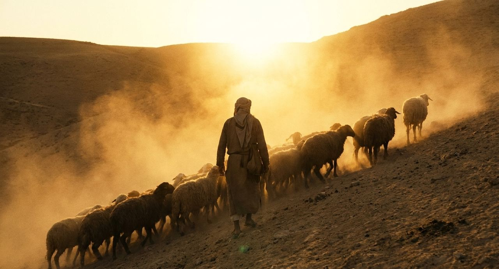
용도: 사건 장면
태그: sheep, shepherd, wilderness_path, dust
쓰인 카드 27장 보기
- 365 1일 2027판 · 창세기 1–2장 · 6번째 카드 — 긴장 · 이름을 지어 주었지만 · 2:19–20 · 돕는 배필이 없었습니다
- 365 6일 2027판 · 창세기 17–20장 · 3번째 카드 — 배경 · 소돔을 위해 묻다 · 18:23–25 · 정의를 행하실 것이 아니니이까
- 365 10일 2027판 · 창세기 29–31장 · 2번째 카드 — 배경 · 외삼촌 집에서 한 약속 · 라헬을 위해 일하기로 한 칠 년
- 365 11일 2027판 · 창세기 32–33장 · 5번째 카드 — 긴장 · 앞서 보낸 예물 · 앞서 보낸 예물
- 365 20일 2027판 · 출애굽기 3–4장 · 10번째 카드 — 긴장 · 돌아가는 길의 위기 · 숙소에서 생긴 일
- 365 22일 2027판 · 출애굽기 7–9장 · 8번째 카드 — 긴장 · 서지 못한 요술사 · 모세 앞에 서지 못하니
- 365 23일 2027판 · 출애굽기 10–11장 · 5번째 카드 — 긴장 · 남은 푸른 것까지 · 푸른 것은 남지 아니하였더라
- 365 24일 2027판 · 출애굽기 12–13장 · 8번째 카드 — 긴장 · 다른 예식, 이어지는 물음 · 이것이 어찌 됨이냐
- 365 37일 2027판 · 레위기 11–12장 · 3번째 카드 — 긴장 · 굽과 새김질 · 너희에게 부정하니
- 365 41일 2027판 · 레위기 21–22장 · 9번째 카드 — 의미 · 너희의 하나님이 되려고 · 애굽에서 인도하여 낸 자
- 365 46일 2027판 · 민수기 5–6장 · 7번째 카드 — 전환 · 갑자기 곁에서 죽으면 · 다시 정하는 날
- 365 47일 2027판 · 민수기 7–8장 · 6번째 카드 — 긴장 · 열두째 날까지 · 줄이지 않은 기록
- 365 48일 2027판 · 민수기 9–10장 · 10번째 카드 — 의미 · 비교해 보기 · 길을 찾는 눈 · 누가 쉴 곳을 찾았는가
- 365 49일 2027판 · 민수기 11–14장 · 11번째 카드 — 의미 · 광야에 남는 세대 · 들어갈 사람, 남는 사람
- 365 54일 2027판 · 민수기 26–30장 · 6번째 카드 — 전환 · 한 사람도 남지 아니하였더라
- 365 55일 2027판 · 민수기 31–33장 · 8번째 카드 — 긴장 · 조상의 대를 이어 · 같은 길로 가려느냐
- 365 58일 2027판 · 신명기 5–8장 · 7번째 카드 — 전환 · 광야 길을 기억하라
- 365 301일 2027판 · 누가복음 10–11장 · 6번째 카드 — 전환 · 이웃이 되겠느냐 · 뒤집힌 질문
- 365 303일 2027판 · 누가복음 14–16장 · 1번째 카드 — 잃었다가 얻었노라, 그런데 잔치 밖에는
- 365 310일 2027판 · 요한복음 7–8장 · 8번째 카드 — 전환 · 죄 없는 자가 먼저 · 하나씩 하나씩
- 365 311일 2027판 · 요한복음 9–10장 · 13번째 카드 — 의미 · 불러 인도하여 내는 목자 · 쫓아낸 사람들, 불러 내는 목자
- 365 314일 2027판 · 요한복음 15–16장 · 5번째 카드 — 긴장 · 밖에 버려져 · 거하지 아니하면
- 365 9일 2028판 · 창세기 26–28장 · 2번째 카드 — 배경 · 또 흉년 · 아버지 때처럼 또 흉년이 들다
- 365 28일 2028판 · 출애굽기 21–24장 · 5번째 카드 — 긴장 · 미워하는 자의 나귀 · 미워하는 사람의 짐승이라도
- 365 96일 2028판 · 사무엘상 24–26장 · 5번째 카드 — 긴장 · 오지 않은 '그 날' · 자기 길로 간 왕
- 365 157일 2028판 · 욥기 1–3장 · 5번째 카드 — 긴장 · 하루에 사라진 것 · 그래도 엎드린 사람
- 365 172일 2028판 · 시편 8–14편 · 2번째 카드 — 배경 · 멀리 서신 것 같은 때 · 어찌하여 멀리 서시며

용도: 소품·동작
태그: stone_altar, fire, stones
쓰인 카드 23장 보기
- 365 7일 2027판 · 창세기 21–23장 · 6번째 카드 — 긴장 · 함께 걸으며 나눈 말 · 22:6–8 · 어린 양은 어디 있나이까
- 365 9일 2027판 · 창세기 26–28장 · 11번째 카드 — 의미 · 비교해 보기 · 약속과 서원 · 하나님의 약속과 야곱의 서원
- 365 12일 2027판 · 창세기 34–35장 · 7번째 카드 — 전환 · 벧엘로 올라가라
- 365 20일 2027판 · 출애굽기 3–4장 · 9번째 카드 — 긴장 · 다른 이를 보내소서 · 네 형 아론이 있지 아니하냐
- 365 21일 2027판 · 출애굽기 5–6장 · 4번째 카드 — 긴장 · 맞서는 명령 · 짚은 주지 않고, 벽돌은 같은 수만큼
- 365 27일 2027판 · 출애굽기 19–20장 · 11번째 카드 — 의미 · 보게 하시고 말씀하신 분 · 구원하신 분의 명령대로
- 365 28일 2027판 · 출애굽기 21–24장 · 9번째 카드 — 전환 · 언약의 피 · 제단과 백성에게 뿌린 피
- 365 29일 2027판 · 출애굽기 25–27장 · 8번째 카드 — 전환 · 만들 제단 · 속이 빈 놋 제단
- 365 30일 2027판 · 출애굽기 28–29장 · 4번째 카드 — 긴장 · 두 어깨의 이름 · 보석 둘에 새긴 이름
- 365 35일 2027판 · 레위기 1–6장 · 7번째 카드 — 전환 · 무슨 허물이든지
- 365 36일 2027판 · 레위기 7–10장 · 6번째 카드 — 긴장 · 여호와 앞에서 나온 불 · 번제물을 사른 불
- 365 38일 2027판 · 레위기 13–15장 · 6번째 카드 — 긴장 · 옷과 집까지 · 옷도 보고, 집도 보고
- 365 39일 2027판 · 레위기 16–17장 · 8번째 카드 — 의미 · 비교해 보기 · 명령하신 대로 · 다른 불, 그리고 명령하신 대로
- 365 41일 2027판 · 레위기 21–22장 · 5번째 카드 — 긴장 · 성물 앞에서 · 부정한 몸으로는
- 365 47일 2027판 · 민수기 7–8장 · 4번째 카드 — 긴장 · 하루 한 사람씩 · 정해 주신 순서
- 365 50일 2027판 · 민수기 15–17장 · 8번째 카드 — 전환 · 제단을 싼 향로 · 기념물이 된 향로
- 365 51일 2027판 · 민수기 18–19장 · 4번째 카드 — 전환 · 함께 담당할 죄
- 365 53일 2027판 · 민수기 22–25장 · 8번째 카드 — 전환 · 내 질투심으로
- 365 54일 2027판 · 민수기 26–30장 · 4번째 카드 — 긴장 · 이름 사이에 남은 기록 · 목록이 멈추는 곳
- 365 56일 2027판 · 민수기 34–36장 · 9번째 카드 — 전환 · 되풀이되는 이유 · 옮기지 않고, 지키리라
- 365 59일 2027판 · 신명기 9–11장 · 4번째 카드 — 긴장 · 내 공의로움으로 · 목이 곧은 백성
- 365 9일 2028판 · 창세기 26–28장 · 11번째 카드 — 의미 · 두려움과 그 대답 · 두려워하는 이삭에게 주신 말씀
- 365 28일 2028판 · 출애굽기 21–24장 · 11번째 카드 — 의미 · 맺지 말 언약 · 도울 일과 경계할 일
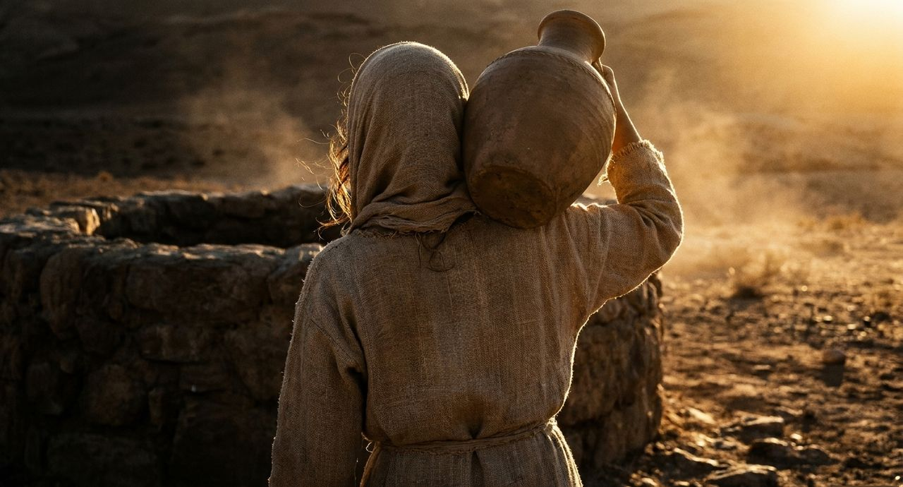
카드 글에 이 말이 있으면: 우물가 · 물을 길으러 · 물 긷
용도: 사건 장면
태그: well, clay_jar, woman
쓰인 카드 2장 보기
- 365 8일 2027판 · 창세기 24–25장 · 8번째 카드 — 긴장 · 가족에게 전한 이야기 · 24:33–50 · 여호와께로 말미암았으니
- 365 308일 2027판 · 요한복음 3–4장 · 1번째 카드 — 밤에 온 선생, 우물가의 여자
카드 글에 이 말이 있으면: 별을 셀 · 하늘의 별 · 별과 같
이 말이 있으면 쓰지 않음: 떨어지 · 떨어져
용도: 사건 장면
태그: night_sky, stars, elder
쓰인 카드 2장 보기
- 365 7일 2027판 · 창세기 21–23장 · 11번째 카드 — 전환 · 다시 들리는 맹세 · 22:15–18 · 두 번째 부름
- 리딩지저스 44주차 4일째 · 요한계시록 6–7장 · 7번째 카드 — 긴장 · 여섯째 인 · 누가 능히 서리요
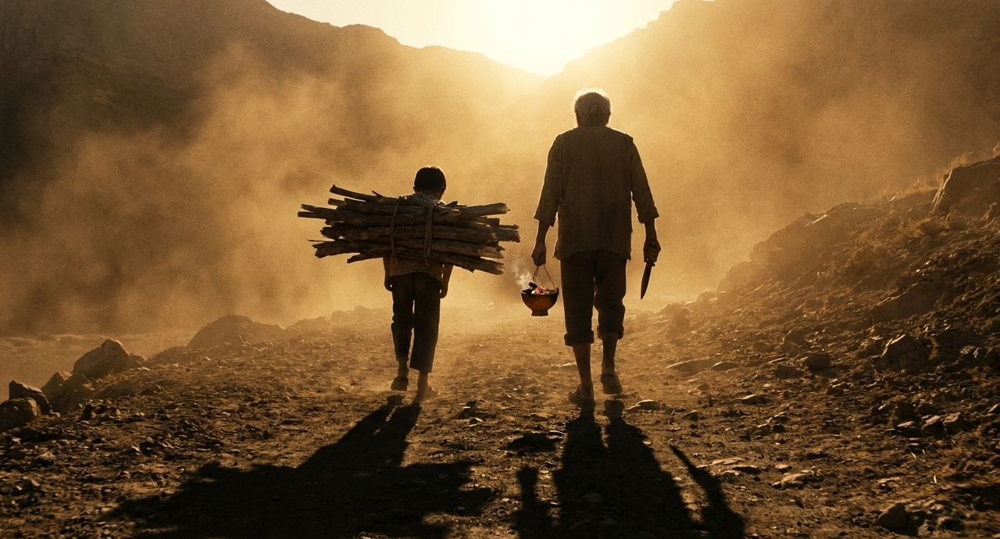
카드 글에 이 말이 있으면: 모리아 · 번제할 나무 · 이삭을 데리고
용도: 사건 장면
태그: road, mountain_peak, wilderness_path, boy
쓰인 카드 1장 보기
- 365 7일 2027판 · 창세기 21–23장 · 1번째 카드 — 아들을 드리라는 명령, 손을 대지 말라는 말씀
카드 글에 이 말이 있으면: 숫양
용도: 사건 장면
태그: thorns, ram, sunrise_light_rays
쓰인 카드 1장 보기
- 365 7일 2027판 · 창세기 21–23장 · 9번째 카드 — 전환 · 아들을 대신하여 · 22:13 · 아들을 대신하여
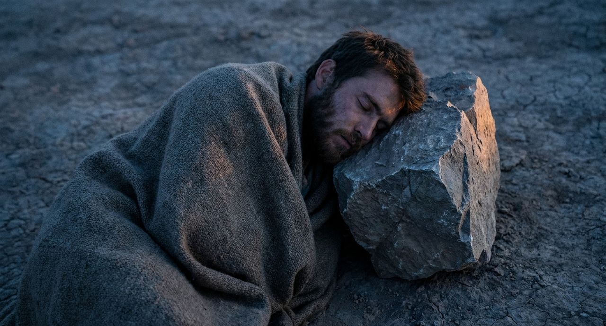
카드 글에 이 말이 있으면: 돌베개 · 돌을 베개 · 사닥다리
용도: 사건 장면
태그: stones, night_sky, sleep
쓰인 카드 1장 보기
- 365 9일 2027판 · 창세기 26–28장 · 1번째 카드 — 돌을 베고 잠든 밤, 먼저 들려온 약속
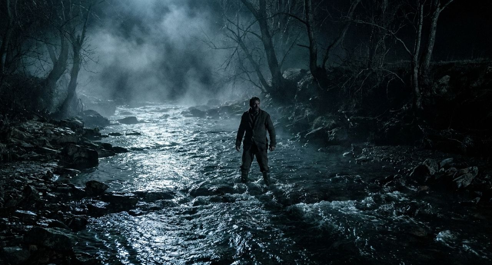
카드 글에 이 말이 있으면: 얍복 · 씨름
용도: 장소·생활 배경
태그: river, night_sky, darkness
쓰인 카드 1장 보기
- 365 11일 2027판 · 창세기 32–33장 · 1번째 카드 — 브니엘의 밤, 형의 얼굴
카드 글에 이 말이 있으면: 목을 안고 · 서로 안고 · 안고 입맞추
이 말이 있으면 쓰지 않음: 아버지 · 아들 · 맏아들
용도: 사건 장면
태그: hands, embrace, brothers
지금 쓰인 카드: 없음
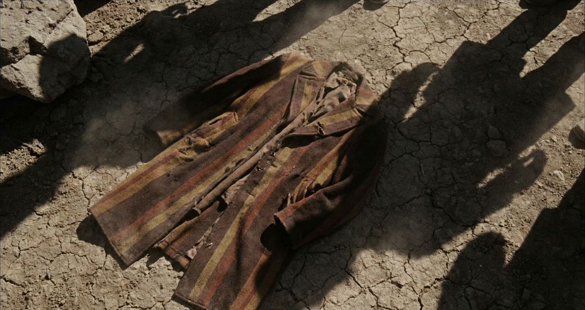
시대: 족장
용도: 소품·동작
태그: robe, soil
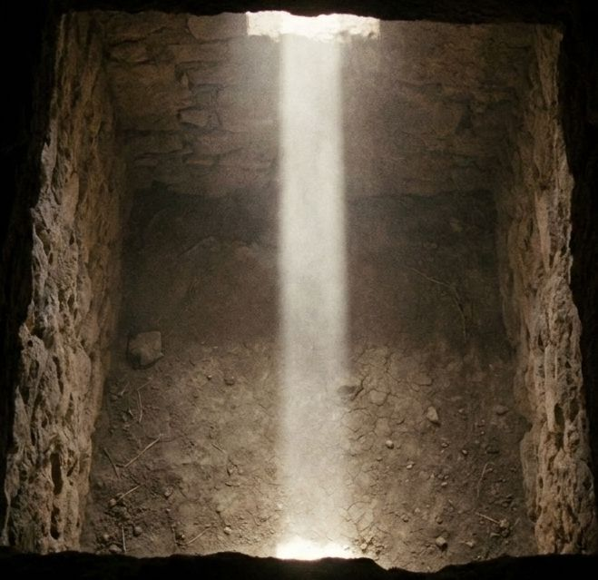
카드 글에 이 말이 있으면: 구덩이
용도: 장소·생활 배경
태그: cave, pit, sunrise_light_rays
쓰인 카드 1장 보기
- 365 14일 2027판 · 창세기 37–39장 · 4번째 카드 — 긴장 · 벗겨진 옷 · 벗겨진 채색옷

용도: 사건 장면
태그: camel, desert, road, caravan
쓰인 카드 10장 보기
- 365 5일 2027판 · 창세기 12–16장 · 2번째 카드 — 배경 · 자식 없는 집에 온 약속 · 11:30–12:4 · 떠나 가라
- 365 8일 2027판 · 창세기 24–25장 · 3번째 카드 — 배경 · 이삭의 아내를 찾으러 · 24:3–8 · 그 사자를 너보다 앞서
- 365 9일 2027판 · 창세기 26–28장 · 7번째 카드 — 긴장 · 어머니의 피신 권고와 아버지의 축복 · 리브가는 피신을 권하고, 이삭은 축복하며 보내다
- 365 10일 2027판 · 창세기 29–31장 · 9번째 카드 — 전환 · 돌아가라
- 365 12일 2027판 · 창세기 34–35장 · 8번째 카드 — 전환 · 떠날 준비와 보호 · 신상을 묻고 떠난 길
- 365 13일 2027판 · 창세기 36장 · 1번째 카드 — 세일에 자리 잡은 에서의 집
- 365 14일 2027판 · 창세기 37–39장 · 1번째 카드 — 옷을 보고 한 말, 실제로 일어난 일
- 365 16일 2027판 · 창세기 42–45장 · 1번째 카드 — 팔린 동생, 생명을 위해 보내신 하나님
- 365 17일 2027판 · 창세기 46–47장 · 1번째 카드 — 함께 내려가시는 하나님, 돌아갈 땅
- 365 9일 2028판 · 창세기 26–28장 · 4번째 카드 — 긴장 · 내려가지 말라 · 애굽으로 내려가지 말라
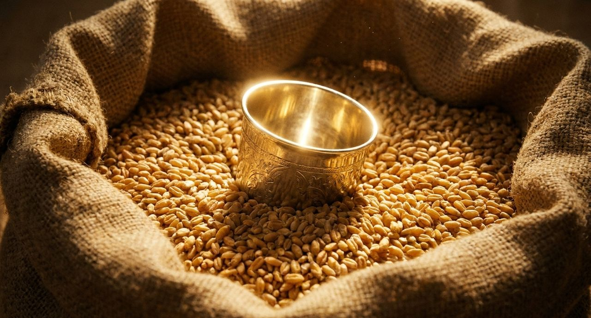
카드 글에 이 말이 있으면: 은잔 · 자루
용도: 소품·동작
태그: grain, silver_cup
쓰인 카드 1장 보기
- 365 16일 2027판 · 창세기 42–45장 · 7번째 카드 — 긴장 · 잔이 나온 자루 · 베냐민의 자루
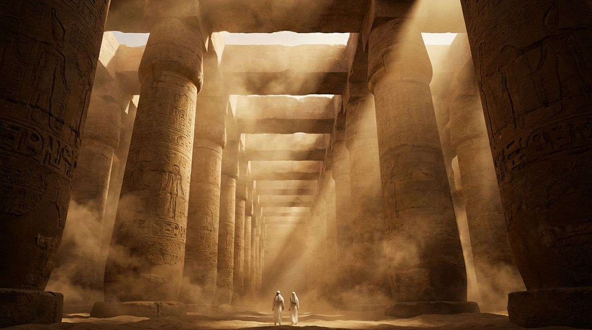
용도: 장소·생활 배경
태그: temple_stones, sunrise_light_rays, egypt
쓰인 카드 11장 보기
- 365 14일 2027판 · 창세기 37–39장 · 11번째 카드 — 의미 · 집에서도 감옥에서도 함께하심 · 집에서도, 옥에서도
- 365 15일 2027판 · 창세기 40–41장 · 6번째 카드 — 긴장 · 만 이 년 뒤의 꿈 · 아무도 풀지 못한 꿈
- 365 16일 2027판 · 창세기 42–45장 · 9번째 카드 — 전환 · 자기를 알리다 · 당신들의 아우 요셉
- 365 17일 2027판 · 창세기 46–47장 · 4번째 카드 — 전환 · 함께 내려가고 다시 올라오게
- 365 19일 2027판 · 출애굽기 1–2장 · 2번째 카드 — 배경 · 늘어나는 자손 · 칠십 명에서 큰 민족으로
- 365 20일 2027판 · 출애굽기 3–4장 · 4번째 카드 — 긴장 · 보고 듣고 내려오심 · 내가 너를 바로에게 보내어
- 365 21일 2027판 · 출애굽기 5–6장 · 6번째 카드 — 전환 · 내가 듣고
- 365 22일 2027판 · 출애굽기 7–9장 · 2번째 카드 — 배경 · 미리 하신 말씀 · 듣지 아니할 터인즉
- 365 23일 2027판 · 출애굽기 10–11장 · 7번째 카드 — 전환 · 빛이 있었더라
- 365 24일 2027판 · 출애굽기 12–13장 · 5번째 카드 — 긴장 · 미리 들려준 대답 · 우리의 집을 구원하신 여호와
- 365 25일 2027판 · 출애굽기 14–15장 · 9번째 카드 — 전환 · 우리가 도망하자 · 쫓아오던 군대가 도망하려 하다
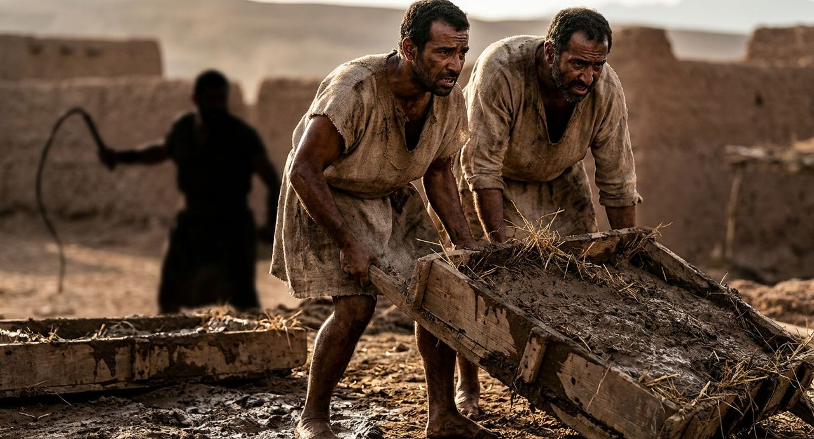
카드 글에 이 말이 있으면: 벽돌 · 노역 · 고된
용도: 사건 장면
태그: bricks, slavery, hands
쓰인 카드 2장 보기
- 365 19일 2027판 · 출애굽기 1–2장 · 4번째 카드 — 긴장 · 학대로 막으려는 왕 · 학대를 받을수록
- 365 21일 2027판 · 출애굽기 5–6장 · 1번째 카드 — 듣지 않는 왕, 신음을 들으시는 하나님
카드 글에 이 말이 있으면: 갈대 상자 · 갈대 사이
용도: 소품·동작
태그: reeds, river, basket
쓰인 카드 1장 보기
- 365 19일 2027판 · 출애굽기 1–2장 · 7번째 카드 — 긴장 · 온 백성에게 내린 명령 · 갈대 사이의 상자
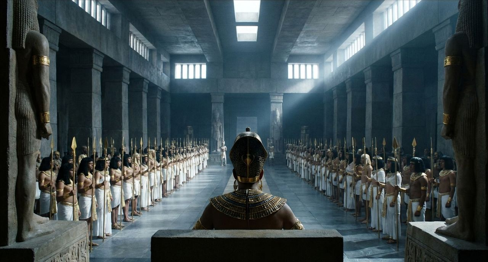
카드 글에 이 말이 있으면: 바로 앞에 · 바로의 궁
이 말이 있으면 쓰지 않음: 광주리 · 다메섹 · 헤롯 · 총독
용도: 사건 장면
태그: palace, egypt, throne
쓰인 카드 2장 보기
- 365 20일 2027판 · 출애굽기 3–4장 · 12번째 카드 — 의미 · 말씀을 전하게 하시는 분 · 하나님이 살피셨다는 소식을 듣고
- 365 23일 2027판 · 출애굽기 10–11장 · 4번째 카드 — 긴장 · 장정만 가라 · 갈 자는 누구 누구냐

용도: 사건 장면
태그: desert, shepherd, wilderness_path
쓰인 카드 9장 보기
- 365 19일 2027판 · 출애굽기 1–2장 · 8번째 카드 — 긴장 · 애굽을 떠난 모세 · 타국의 나그네
- 365 20일 2027판 · 출애굽기 3–4장 · 2번째 카드 — 배경 · 떨기나무에서 부르심 · 타지 않는 떨기나무
- 365 26일 2027판 · 출애굽기 16–18장 · 4번째 카드 — 긴장 · 신 광야의 원망 · 고기 가마 곁의 기억
- 365 48일 2027판 · 민수기 9–10장 · 7번째 카드 — 전환 · 구름이 떠오른 날 · 둘째 해 둘째 달 스무날
- 365 53일 2027판 · 민수기 22–25장 · 6번째 카드 — 긴장 · 회막 문에서 우는 회중 · 모세와 온 회중의 눈앞에서
- 365 54일 2027판 · 민수기 26–30장 · 12번째 카드 — 의미 · 남은 사람과 세워진 사람 · 목자 없는 양이 되지 않게
- 365 55일 2027판 · 민수기 31–33장 · 2번째 카드 — 배경 · 미디안을 친 뒤 · 브올의 사건 뒤에
- 365 57일 2027판 · 신명기 1–4장 · 1번째 카드 — 죽게 된 세대, 살아 남은 너희
- 365 28일 2028판 · 출애굽기 21–24장 · 7번째 카드 — 전환 · 네 앞서 보내어 · 네 앞서 보내리니
카드 글에 이 말이 있으면: 떨기나무
용도: 사건 장면
태그: fire, thorns, mountain_peak
쓰인 카드 3장 보기
- 365 19일 2027판 · 출애굽기 1–2장 · 11번째 카드 — 의미 · 거듭 기록된 하나님의 행동 · 하나님이 기억하셨더라
- 365 20일 2027판 · 출애굽기 3–4장 · 1번째 카드 — 내가 누구이기에, 내가 함께 있으리라
- 365 319일 2027판 · 사도행전 6–7장 · 6번째 카드 — 전환 · 거절하던 그 모세를 · 하나님은 보내셨으니
카드 글에 이 말이 있으면: 문설주 · 인방
용도: 소품·동작
태그: blood, doorpost, night_sky
쓰인 카드 1장 보기
- 365 24일 2027판 · 출애굽기 12–13장 · 2번째 카드 — 배경 · 그 밤을 위한 지시 · 문설주에 바른 피
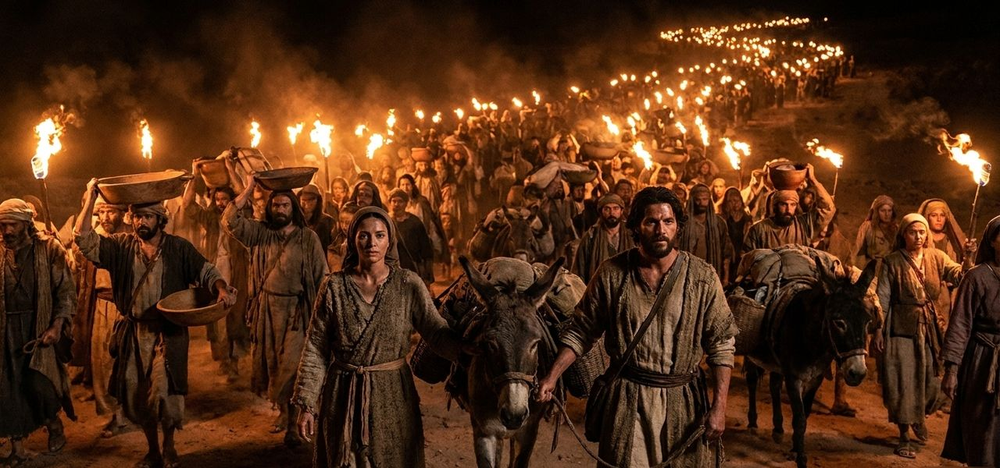
카드 글에 이 말이 있으면: 밤에 나오 · 밤중에 애굽
용도: 사건 장면
태그: night_sky, crowd, donkey, fire
지금 쓰인 카드: 없음
카드 글에 이 말이 있으면: 홍해 · 바다가 갈라 · 마른 땅으로
용도: 사건 장면
태그: sea, waves, path
지금 쓰인 카드: 없음
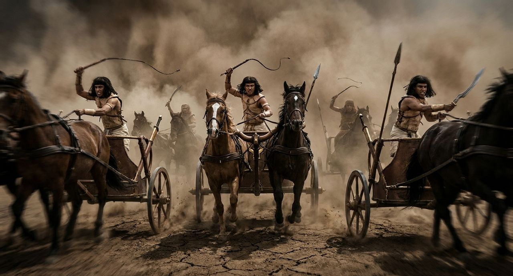
카드 글에 이 말이 있으면: 병거 · 마병
용도: 사건 장면
태그: army, chariot, dust, horse
쓰인 카드 1장 보기
- 365 25일 2027판 · 출애굽기 14–15장 · 4번째 카드 — 긴장 · 다시 잡으러 오는 군대 · 놓아 보낸 것을 후회하다
카드 글에 이 말이 있으면: 소고
용도: 소품·동작
태그: timbrel, sea, hands, festival
지금 쓰인 카드: 없음
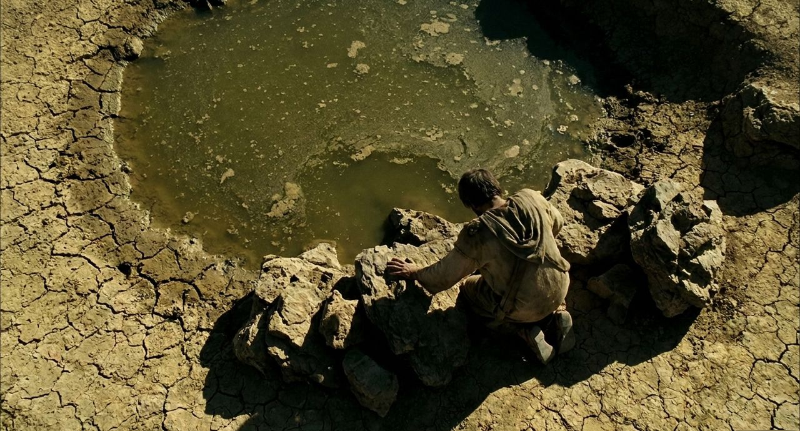
카드 글에 이 말이 있으면: 마라 · 쓴 물
이 말이 있으면 쓰지 않음: 한 구멍
용도: 장소·생활 배경
태그: water, desert, well
쓰인 카드 1장 보기
- 365 25일 2027판 · 출애굽기 14–15장 · 12번째 카드 — 의미 · 구원하신 여호와를 노래하다 · 그 날에 구원하신 여호와
카드 글에 이 말이 있으면: 만나를 · 만나가 · 만나와 · 만나라 · 만나는 깟씨
용도: 소품·동작
태그: manna, dawn, desert
쓰인 카드 3장 보기
- 365 26일 2027판 · 출애굽기 16–18장 · 1번째 카드 — 되풀이되는 원망, 먹이시는 하나님
- 365 58일 2027판 · 신명기 5–8장 · 1번째 카드 — 배부를 때 기억할 것
- 365 309일 2027판 · 요한복음 5–6장 · 8번째 카드 — 전환 · 생명의 떡
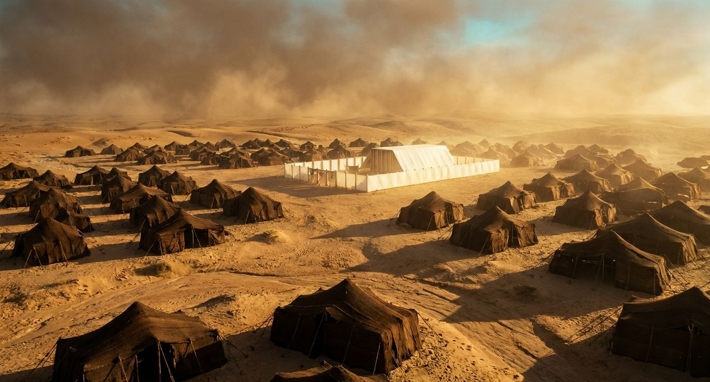
카드 글에 이 말이 있으면: 성막 · 회막
용도: 장소·생활 배경
태그: tent, desert, tabernacle, camp
쓰인 카드 24장 보기
- 365 29일 2027판 · 출애굽기 25–27장 · 1번째 카드 — 보이신 대로 지을 성소
- 365 30일 2027판 · 출애굽기 28–29장 · 1번째 카드 — 백성의 이름을 지니고 여호와 앞에
- 365 31일 2027판 · 출애굽기 30–31장 · 9번째 카드 — 의미 · 명령한 대로 만들기 · 무릇 내가 네게 명령한 대로
- 365 32일 2027판 · 출애굽기 32–34장 · 2번째 카드 — 배경 · 하나님이 쓰신 판 · 산 위에서 받은 두 돌판
- 365 33일 2027판 · 출애굽기 35–38장 · 2번째 카드 — 배경 · 다시 모인 회중 · 모세가 전한 말씀
- 365 34일 2027판 · 출애굽기 39–40장 · 1번째 카드 — 명령하신 대로, 그리고 영광
- 365 35일 2027판 · 레위기 1–6장 · 2번째 카드 — 배경 · 회막에서 부르시다 · 들어갈 수 없던 회막에서
- 365 36일 2027판 · 레위기 7–10장 · 4번째 카드 — 긴장 · 칠 주야를 머물라 · 그리하면 사망을 면하리라
- 365 37일 2027판 · 레위기 11–12장 · 1번째 카드 — 먹을 것과 먹지 못할 것, 그 끝의 말씀
- 365 38일 2027판 · 레위기 13–15장 · 7번째 카드 — 전환 · 내 성막을 더럽히지 않도록
- 365 39일 2027판 · 레위기 16–17장 · 5번째 카드 — 전환 · 누구를 위하여 속죄하나 · 자기와 집안, 그리고 온 회중
- 365 40일 2027판 · 레위기 18–20장 · 1번째 카드 — 네 자신과 같이 사랑할 사람
- 365 41일 2027판 · 레위기 21–22장 · 1번째 카드 — 거룩하게 하는 여호와
- 365 43일 2027판 · 레위기 25–27장 · 1번째 카드 — 자기의 소유지로 돌아가는 해
- 365 44일 2027판 · 민수기 1–2장 · 1번째 카드 — 레위 지파만은 계수하지 말며
- 365 45일 2027판 · 민수기 3–4장 · 1번째 카드 — 레위인은 내 것이라
- 365 46일 2027판 · 민수기 5–6장 · 9번째 카드 — 의미 · 서원한 대로 · 구별의 시작과 끝
- 365 47일 2027판 · 민수기 7–8장 · 1번째 카드 — 열두 날의 헌물, 그 뒤에 들린 목소리
- 365 48일 2027판 · 민수기 9–10장 · 2번째 카드 — 배경 · 성막을 덮은 구름 · 낮에는 구름, 밤에는 불 모양
- 365 49일 2027판 · 민수기 11–14장 · 8번째 카드 — 전환 · 내 종 갈렙 · 영광이 나타난 회막
- 365 50일 2027판 · 민수기 15–17장 · 12번째 카드 — 의미 · 거룩한 자를 보이신 분 · 원망을 그치게 할 표징
- 365 51일 2027판 · 민수기 18–19장 · 2번째 카드 — 배경 · 어제의 물음 · 우리가 다 망하여야 하리이까
- 365 52일 2027판 · 민수기 20–21장 · 5번째 카드 — 긴장 · 하나님의 명령 · 반석에게 명령하여
- 365 53일 2027판 · 민수기 22–25장 · 1번째 카드 — 복을 받은 백성, 회막 문의 두 사람
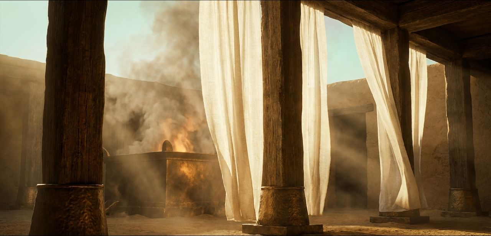
카드 글에 이 말이 있으면: 성막 뜰 · 번제단
이 말이 있으면 쓰지 않음: 휘장 안 · 둘째 휘장 · 지성소 · 휘장 가운데
용도: 장소·생활 배경
태그: tabernacle, stone_altar, fire, curtain
쓰인 카드 1장 보기
- 365 39일 2027판 · 레위기 16–17장 · 1번째 카드 — 아무 때나 들어오지 말라
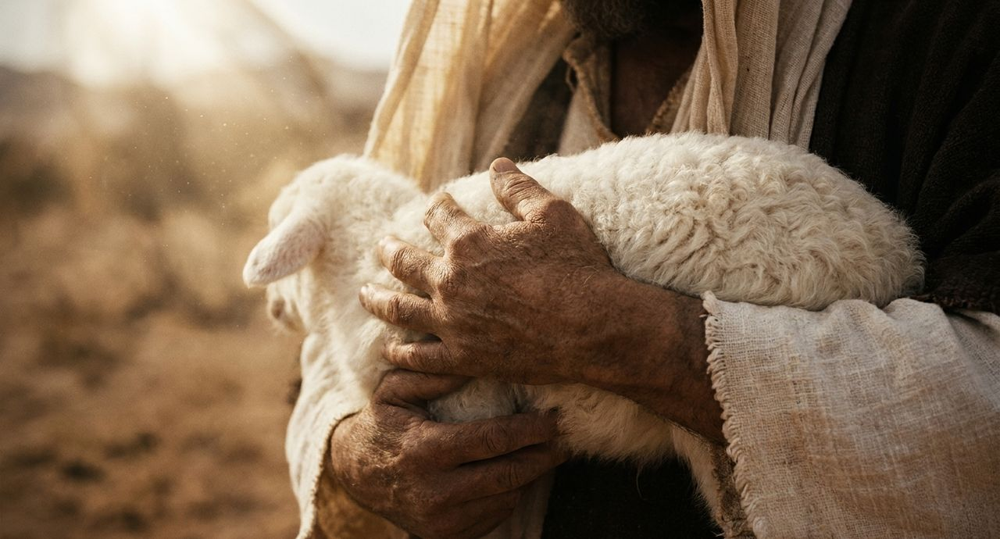
카드 글에 이 말이 있으면: 어린양 · 어린 양
용도: 사건 장면
태그: hands, lamb, sheep, priest
쓰인 카드 14장 보기
- 365 35일 2027판 · 레위기 1–6장 · 1번째 카드 — 끝마다 들리는 말, 사함을 받으리라
- 365 38일 2027판 · 레위기 13–15장 · 1번째 카드 — 보고 또 보는 제사장
- 365 307일 2027판 · 요한복음 1–2장 · 5번째 카드 — 긴장 · 와서 보라 · 보라, 하나님의 어린 양
- 365 361일 2027판 · 요한계시록 4–6장 · 1번째 카드 — 사자를 들었는데, 어린 양을 보았다
- 365 362일 2027판 · 요한계시록 7–9장 · 6번째 카드 — 전환 · 셀 수 없는 큰 무리
- 365 363일 2027판 · 요한계시록 10–14장 · 1번째 카드 — 짐승의 표, 어린 양의 이름
- 365 365일 2027판 · 요한계시록 19–22장 · 3번째 카드 — 배경 · 혼인 기약 · 다른 여자의 노래
- 리딩지저스 44주차 3일째 · 요한계시록 4–5장 · 1번째 카드 — 만물을 지으신 이, 죽임을 당하신 어린 양
- 리딩지저스 44주차 4일째 · 요한계시록 6–7장 · 1번째 카드 — 오라, 오라, 오라, 오라 그리고 '어느 때까지'
- 리딩지저스 45주차 1일째 · 요한계시록 12–13장 · 5번째 카드 — 전환 · 하늘의 큰 음성
- 리딩지저스 45주차 2일째 · 요한계시록 14–15장 · 2번째 카드 — 배경 · 시온 산에 선 어린 양 · 짐승의 표 다음 장면
- 리딩지저스 45주차 3일째 · 요한계시록 16–17장 · 9번째 카드 — 전환 · 어린 양이 이기실 터이요 · 만주의 주, 만왕의 왕
- 리딩지저스 45주차 4일째 · 요한계시록 18–19장 · 8번째 카드 — 전환 · 혼인 기약
- 리딩지저스 45주차 6일째 · 요한계시록 22장 · 2번째 카드 — 배경 · 생명수의 강 · 다시 저주가 없으며
카드 글에 이 말이 있으면: 물두멍
용도: 사건 장면
태그: hands, water, laver, priest
쓰인 카드 1장 보기
- 365 31일 2027판 · 출애굽기 30–31장 · 2번째 카드 — 배경 · 이어지는 제작 지시 · 향단에서 향까지
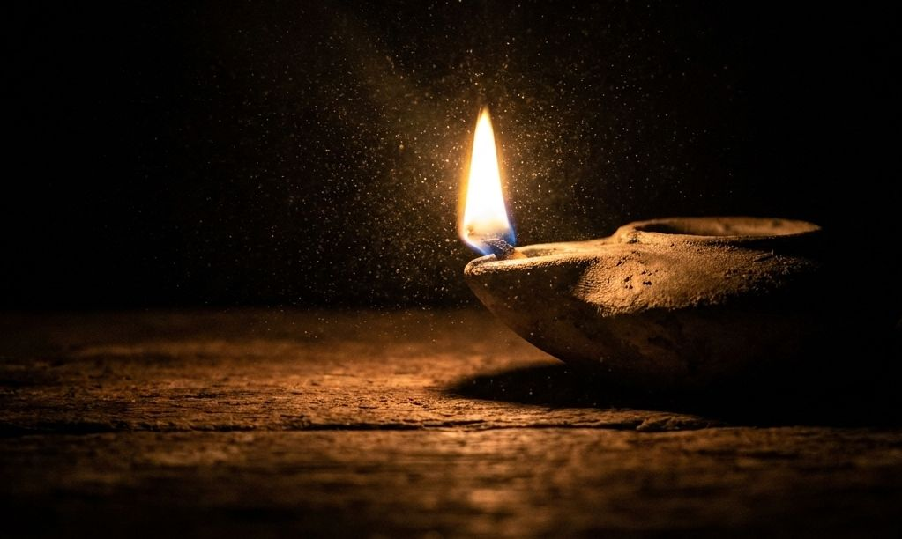
용도: 소품·동작
태그: oil_lamp, darkness
쓰인 카드 56장 보기
- 365 14일 2027판 · 창세기 37–39장 · 7번째 카드 — 전환 · 비교해 보기 · 알아본 두 사람 · 물건을 알아본 뒤에 한 말
- 365 17일 2027판 · 창세기 46–47장 · 8번째 카드 — 긴장 · 애굽에서 십칠 년을 산 뒤 · 애굽에 장사하지 말라
- 365 18일 2027판 · 창세기 48–50장 · 2번째 카드 — 배경 · 복을 주셨던 하나님 · 아들에게 들려주는 하나님의 약속
- 365 36일 2027판 · 레위기 7–10장 · 10번째 카드 — 의미 · 명령하시지 아니하신 · 본문이 그 불에 붙인 말
- 365 41일 2027판 · 레위기 21–22장 · 3번째 카드 — 긴장 · 그를 거룩히 여기라 · 두 번 나오는 명령
- 365 42일 2027판 · 레위기 23–24장 · 9번째 카드 — 의미 · 너희의 하나님 여호와 · 절기와 밭이 만나는 곳
- 365 47일 2027판 · 민수기 7–8장 · 9번째 카드 — 의미 · 미리 말씀하신 자리 · 만나 주겠다고 하신 곳
- 365 301일 2027판 · 누가복음 10–11장 · 7번째 카드 — 전환 · 발치에 앉아
- 365 303일 2027판 · 누가복음 14–16장 · 10번째 카드 — 의미 · 나와서 권하는 아버지 · 즐거워하는 것이 마땅하다
- 365 306일 2027판 · 누가복음 22–24장 · 8번째 카드 — 전환 · 떡을 떼실 때
- 365 308일 2027판 · 요한복음 3–4장 · 5번째 카드 — 긴장 · 어떻게 · 어떻게, 어찌
- 365 310일 2027판 · 요한복음 7–8장 · 10번째 카드 — 전환 · 어디서 오며 어디로
- 365 313일 2027판 · 요한복음 13–14장 · 1번째 카드 — 주여, 어디로 가시나이까
- 365 318일 2027판 · 사도행전 3–5장 · 5번째 카드 — 긴장 · 사탄이 가득하여 · 얼마를 감추매
- 365 324일 2027판 · 사도행전 19–20장 · 4번째 카드 — 긴장 · 이름을 빌린 사람들 · 바울이 전파하는 예수를
- 365 327일 2027판 · 로마서 1–3장 · 8번째 카드 — 긴장 · 모든 입을 막고 · 의인은 없나니
- 365 328일 2027판 · 로마서 4–8장 · 9번째 카드 — 긴장 · 죄에 거하겠느냐 · 그럴 수 없느니라
- 365 336일 2027판 · 고린도후서 1–2장 · 11번째 카드 — 의미 · 눈물로 쓴 편지 · 근심 대신 편지
- 365 337일 2027판 · 고린도후서 3–7장 · 5번째 카드 — 긴장 · 마음에 비친 빛 · 보배를 가진 사람들
- 365 339일 2027판 · 고린도후서 10–13장 · 11번째 카드 — 의미 · 그리스도의 능력이 머물게 · 자랑이 바뀐 자리
- 365 342일 2027판 · 에베소서 1–6장 · 4번째 카드 — 긴장 · 죽었던 너희 · 본질상 진노의 자녀
- 365 343일 2027판 · 빌립보서 1–4장 · 7번째 카드 — 긴장 · 전제로 드릴지라도 · 부어지는 제물 앞에서
- 365 346일 2027판 · 데살로니가후서 1–3장 · 4번째 카드 — 전환 · 미혹되지 말라
- 365 348일 2027판 · 디모데후서 1–4장 · 5번째 카드 — 전환 · 내가 의탁한 것 · 지키실 줄을 확신함이라
- 365 351일 2027판 · 히브리서 1–6장 · 10번째 카드 — 의미 · 그러므로 · 깊이 생각하라
- 365 357일 2027판 · 요한일서 1–3장 · 3번째 카드 — 긴장 · 사귐이 있다 하고 · 만일 우리가
- 365 360일 2027판 · 요한계시록 1–3장 · 6번째 카드 — 긴장 · 책망할 것이 있나니 · 칭찬 뒤의 '그러나'
- 리딩지저스 36주차 4일째 · 사도행전 9–10장 · 4번째 카드 — 긴장 · 주여 이 사람에 대하여 · 아나니아의 대답
- 리딩지저스 36주차 5일째 · 사도행전 11–13장 · 7번째 카드 — 전환 · 그 손에서 벗어지더라 · 끌어 내려던 전날 밤
- 리딩지저스 37주차 5일째 · 사도행전 25–26장 · 5번째 카드 — 긴장 · 바울의 물음 · 어찌하여 못 믿을 것으로
- 리딩지저스 38주차 1일째 · 로마서 1–3장 · 8번째 카드 — 긴장 · 우리는 나으냐 · 다 죄 아래에
- 리딩지저스 38주차 2일째 · 로마서 4–6장 · 8번째 카드 — 긴장 · 죄에 거하겠느냐 · 그럴 수 없느니라
- 리딩지저스 38주차 3일째 · 로마서 7–8장 · 6번째 카드 — 긴장 · 누가 나를 · 곤고한 사람
- 리딩지저스 38주차 5일째 · 로마서 12–14장 · 4번째 카드 — 긴장 · 사랑에는 거짓이 없나니 · 악을 미워하고
- 리딩지저스 39주차 1일째 · 고린도전서 1–4장 · 10번째 카드 — 의미 · 그리스도의 일꾼 · 맡은 자에게 구할 것
- 리딩지저스 39주차 2일째 · 고린도전서 5–8장 · 9번째 카드 — 전환 · 그리스도에게 죄를 짓는 것 · 형제에게, 그리스도에게
- 리딩지저스 40주차 3일째 · 갈라디아서 1–6장 · 6번째 카드 — 긴장 · 우리도 그리스도 예수를 믿나니 · 유대인인 우리도
- 리딩지저스 40주차 4일째 · 에베소서 1–3장 · 10번째 카드 — 의미 · 감추어졌던 비밀 · 함께 상속자가 되다
- 리딩지저스 40주차 6일째 · 빌립보서 1–4장 · 6번째 카드 — 전환 · 그리스도 예수의 마음 · 이 마음을 품으라
- 리딩지저스 41주차 1일째 · 골로새서 1–4장 · 7번째 카드 — 전환 · 감추어진 생명 · 죽었고, 감추어졌고
- 리딩지저스 41주차 2일째 · 데살로니가전서 1–5장 · 7번째 카드 — 긴장 · 자지 말고 · 다른 이들과 같이
- 리딩지저스 41주차 3일째 · 데살로니가후서 1–3장 · 4번째 카드 — 긴장 · 멸망하는 자들 · 진리의 사랑을 받지 아니하여
- 리딩지저스 41주차 5일째 · 디모데후서 1–4장 · 8번째 카드 — 전환 · 그러나 너는 · 누구에게서 배운 것을 알며
- 리딩지저스 42주차 2일째 · 히브리서 4–6장 · 7번째 카드 — 긴장 · 들어가기를 힘쓸지니 · 드러나는 마음
- 리딩지저스 42주차 5일째 · 야고보서 1–3장 · 10번째 카드 — 의미 · 아버지 · 다시 불리는 '아버지'
- 리딩지저스 43주차 2일째 · 베드로후서 1–3장 · 6번째 카드 — 긴장 · 지어낸 말 · 다른 말을 가진 사람들
- 리딩지저스 43주차 3일째 · 요한일서 1–3장 · 3번째 카드 — 배경 · 빛이시라 · 요한이 전하는 소식
- 리딩지저스 43주차 4일째 · 요한일서 4–5장 · 6번째 카드 — 긴장 · 사랑하노라 하고 · 말과 미움 사이
- 리딩지저스 43주차 5일째 · 요한이서 1장 – 요한삼서 1장 · 4번째 카드 — 긴장 · 미혹하는 자 · 닫아야 할 문
- 리딩지저스 43주차 6일째 · 유다서 1장 · 5번째 카드 — 긴장 · 가만히 들어온 사람 · 교회 안의 문제
- 리딩지저스 44주차 1일째 · 요한계시록 1장 · 5번째 카드 — 긴장 · 몸을 돌이켜 · 음성을 알아 보려고
- 리딩지저스 44주차 2일째 · 요한계시록 2–3장 · 8번째 카드 — 전환 · 알지 못하는도다
- 리딩지저스 44주차 5일째 · 요한계시록 8–9장 · 5번째 카드 — 긴장 · 되풀이되는 말 · 바다, 강, 해와 달
- 리딩지저스 45주차 1일째 · 요한계시록 12–13장 · 4번째 카드 — 긴장 · 풀어 준 이름 · 옛 뱀, 온 천하를 꾀는 자
- 리딩지저스 45주차 2일째 · 요한계시록 14–15장 · 6번째 카드 — 긴장 · 성도들의 인내 · 주 안에서 죽는 자들
- 리딩지저스 45주차 5일째 · 요한계시록 20–21장 · 6번째 카드 — 긴장 · 사망과 음부도 · 죽은 자들을 내주매
카드 글에 이 말이 있으면: 돌판 · 십계명 · 두 판
용도: 소품·동작
태그: stone_tablets, mountain_peak, sunrise_light_rays
쓰인 카드 7장 보기
- 365 31일 2027판 · 출애굽기 30–31장 · 10번째 카드 — 의미 · 일을 맡기시고 지혜를 주시는 분 · 부르시고 채우시는 하나님
- 365 32일 2027판 · 출애굽기 32–34장 · 1번째 카드 — 깨진 돌판, 다시 쓰신 말씀
- 365 56일 2027판 · 민수기 34–36장 · 10번째 카드 — 의미 · 비교해 보기 · 두 번의 판정 · 누가 묻고, 무엇을 지키는가
- 365 57일 2027판 · 신명기 1–4장 · 11번째 카드 — 의미 · 이제 듣고 준행하라 · 살아 남은 너희에게
- 365 58일 2027판 · 신명기 5–8장 · 2번째 카드 — 배경 · 오늘 여기 살아 있는 우리 · 다시 듣는 호렙의 언약
- 365 59일 2027판 · 신명기 9–11장 · 1번째 카드 — 깨뜨린 판, 처음과 같은 판
- 리딩지저스 39주차 5일째 · 고린도후서 1–3장 · 3번째 카드 — 배경 · 추천서가 필요한가 · 마음판에 쓴 편지
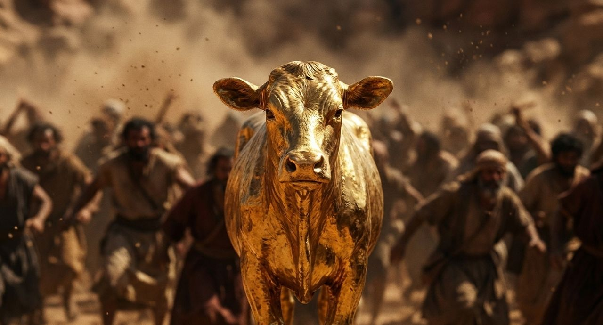
카드 글에 이 말이 있으면: 금송아지 · 송아지 형상 · 송아지를 만들
이 말이 있으면 쓰지 않음: 살진 송아지 · 송아지의 피 · 수송아지 · 송아지와 염소
용도: 사건 장면
태그: idol, crowd, golden_calf, dust
쓰인 카드 2장 보기
- 365 32일 2027판 · 출애굽기 32–34장 · 5번째 카드 — 긴장 · 송아지 앞의 제단 · 제단을 쌓고, 먹고 마시고
- 365 319일 2027판 · 사도행전 6–7장 · 7번째 카드 — 긴장 · 다시 거절하며 · 광야에서 또
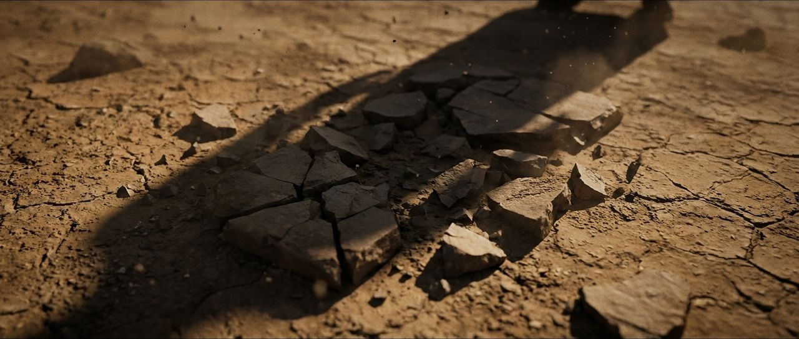
카드 글에 이 말이 있으면: 돌판을 깨 · 판을 깨뜨
용도: 소품·동작
태그: stones, broken, stone_tablets
지금 쓰인 카드: 없음
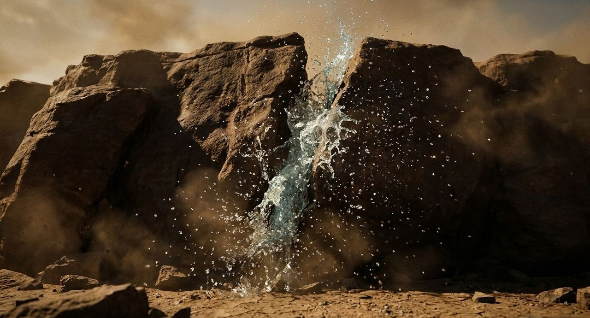
카드 글에 이 말이 있으면: 반석을 치 · 반석에게 · 반석에서 물
용도: 사건 장면
태그: stones, water, spring
쓰인 카드 2장 보기
- 365 26일 2027판 · 출애굽기 16–18장 · 9번째 카드 — 전환 · 네 앞에 서리니 · 반석 위 거기서
- 365 52일 2027판 · 민수기 20–21장 · 1번째 카드 — 반석에게 명령하라 하셨는데
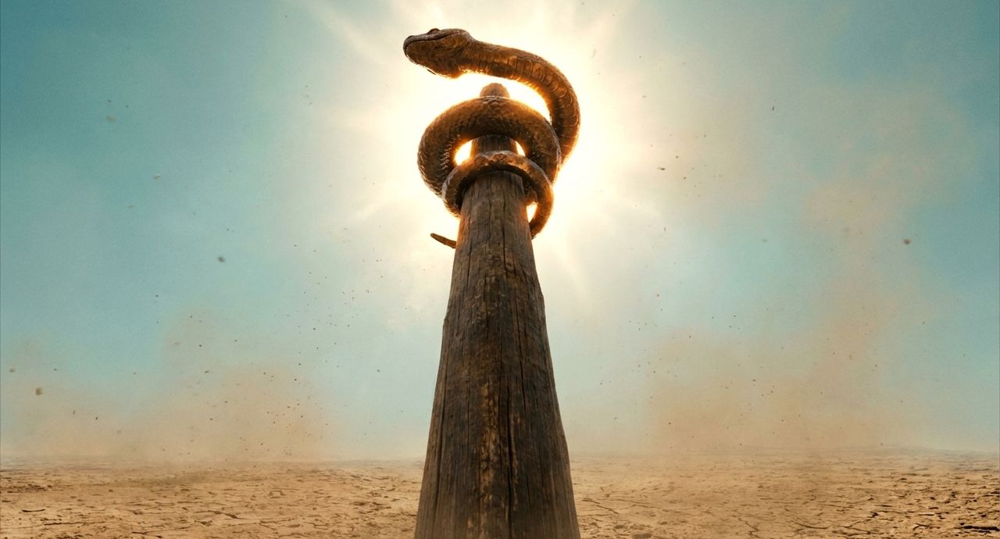
카드 글에 이 말이 있으면: 놋뱀
용도: 소품·동작
태그: bronze_serpent, pole, desert
쓰인 카드 1장 보기
- 365 52일 2027판 · 민수기 20–21장 · 11번째 카드 — 의미 · 이어지는 길 · 놋뱀과 시혼의 땅
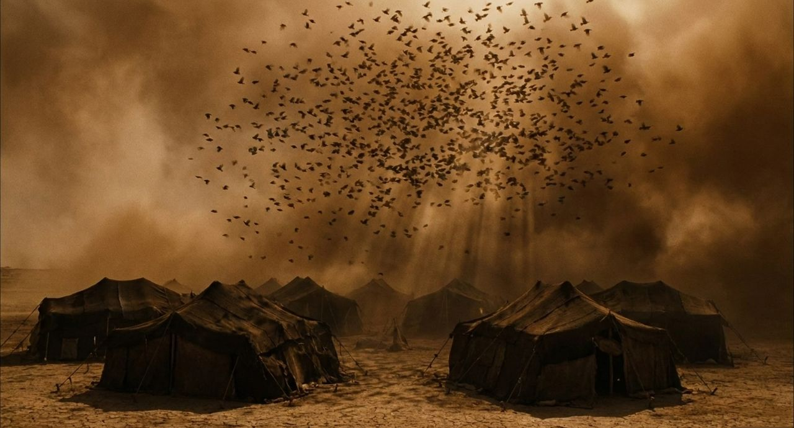
카드 글에 이 말이 있으면: 메추라기
용도: 사건 장면
태그: birds, tent, dust
지금 쓰인 카드: 없음

카드 글에 이 말이 있으면: 정탐 · 포도송이
용도: 사건 장면
태그: grapes, vineyard, men
쓰인 카드 2장 보기
- 365 49일 2027판 · 민수기 11–14장 · 1번째 카드 — 같은 땅을 보고 다르게 말한 사람들
- 365 54일 2027판 · 민수기 26–30장 · 7번째 카드 — 전환 · 말씀하신 대로 · 광야에서 죽으리라 하신 말씀
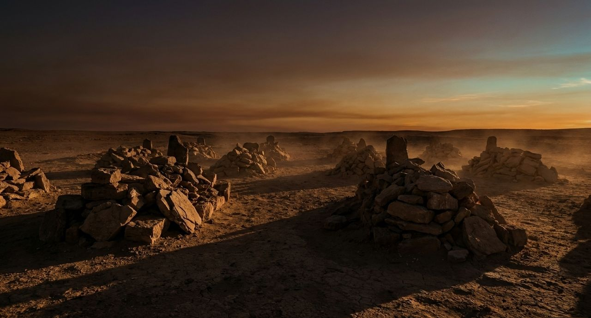
카드 글에 이 말이 있으면: 광야에서 죽
용도: 장소·생활 배경
태그: stones, graves, dusk
쓰인 카드 3장 보기
- 365 25일 2027판 · 출애굽기 14–15장 · 5번째 카드 — 긴장 · 바다 앞의 백성 · 눈을 들어 본즉
- 365 50일 2027판 · 민수기 15–17장 · 1번째 카드 — 다 거룩하다는 말, 누가 거룩한지 보이시는 분
- 365 54일 2027판 · 민수기 26–30장 · 1번째 카드 — 다시 센 회중, 남은 두 사람
카드 글에 이 말이 있으면: 느보 · 비스가
용도: 자연·지형
태그: valley, mountain_peak, sunrise_light_rays, land
쓰인 카드 1장 보기
- 365 57일 2027판 · 신명기 1–4장 · 7번째 카드 — 긴장 · 그 시대의 군인들 · 맹세하신 대로
카드 글에 이 말이 있으면: 열두 돌 · 돌무더기
용도: 소품·동작
태그: stones, memorial
쓰인 카드 1장 보기
- 365 10일 2027판 · 창세기 29–31장 · 12번째 카드 — 의미 · 서로 해치지 않기로 약속하다 · 경계를 정하고 헤어지다
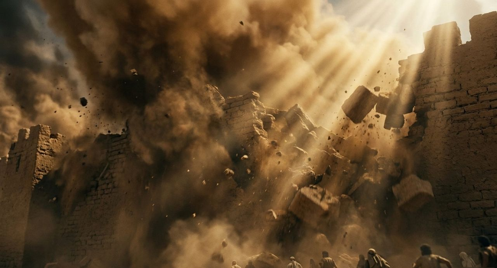
카드 글에 이 말이 있으면: 여리고 · 성벽이 무너
이 말이 있으면 쓰지 않음: 삭개오
용도: 사건 장면
태그: city_wall, ruins, dust
쓰인 카드 2장 보기
- 365 304일 2027판 · 누가복음 17–19장 · 10번째 카드 — 의미 · 보살핌 받는 날 · 두 번의 오늘
- 365 353일 2027판 · 히브리서 11–13장 · 6번째 카드 — 긴장 · 무슨 말을 더 하리요 · 한꺼번에 묶인 이름들

용도: 장소·생활 배경
태그: house, clay_jar, village
쓰인 카드 10장 보기
- 365 4일 2027판 · 창세기 10–11장 · 4번째 카드 — 긴장 · 시날에 머물다 · 11:2–3 · 자, 벽돌을 굽자
- 365 37일 2027판 · 레위기 11–12장 · 5번째 카드 — 긴장 · 저녁까지 부정하리라 · 주검을 만지면
- 365 56일 2027판 · 민수기 34–36장 · 8번째 카드 — 전환 · 조상 지파의 종족에게로 · 마음대로, 그러나 지파 안에서
- 365 58일 2027판 · 신명기 5–8장 · 9번째 카드 — 긴장 · 은금이 많아질 때 · 아름다운 집과 늘어나는 은금
- 365 157일 2027판 · 욥기 1–3장 · 7번째 카드 — 긴장 · 아내의 물음 · 그래도 온전함을?
- 365 222일 2027판 · 이사야 51–55장 · 4번째 카드 — 긴장 · 누가 너를 위로하랴 · 분노의 잔을 마신 성
- 365 303일 2027판 · 누가복음 14–16장 · 8번째 카드 — 긴장 · 밖에 선 맏아들 · 들어가고자 하지 아니하거늘
- 365 304일 2027판 · 누가복음 17–19장 · 3번째 카드 — 긴장 · 멀리 서서 · 열 사람의 외침
- 365 307일 2027판 · 요한복음 1–2장 · 9번째 카드 — 전환 · 아귀까지 · 연회장은 몰랐고, 하인들은 알았다
- 365 312일 2027판 · 요한복음 11–12장 · 2번째 카드 — 배경 · 사랑하시는 자 · 베다니의 나사로
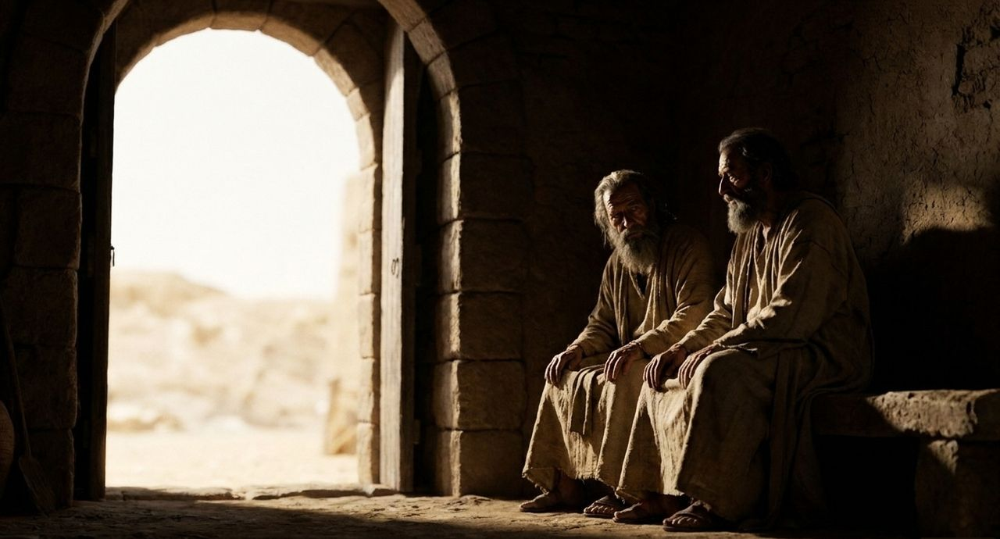
카드 글에 이 말이 있으면: 성문에 앉 · 성문에서 재판 · 성읍 장로 · 성문 장로
이 말이 있으면 쓰지 않음: 교회 · 이십사 장로 · 보좌 · 에베소 · 그레데
용도: 사건 장면
태그: city_gate, elders
지금 쓰인 카드: 없음
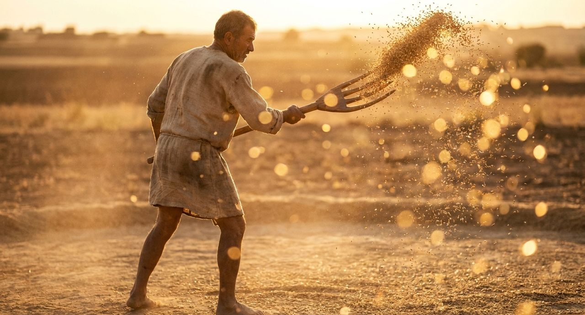
용도: 사건 장면
태그: threshing_floor, harvest, wheat_field, winnowing
쓰인 카드 4장 보기
- 365 15일 2027판 · 창세기 40–41장 · 11번째 카드 — 의미 · 말한 대로 시작된 흉년 · 요셉의 말과 같이
- 365 42일 2027판 · 레위기 23–24장 · 5번째 카드 — 전환 · 남겨두라
- 365 56일 2027판 · 민수기 34–36장 · 12번째 카드 — 의미 · 지켜진 기업 · 기업이 남아 있었더라
- 365 302일 2027판 · 누가복음 12–13장 · 5번째 카드 — 긴장 · 내 곳간, 내 영혼 · 혼자 묻고 혼자 답하다
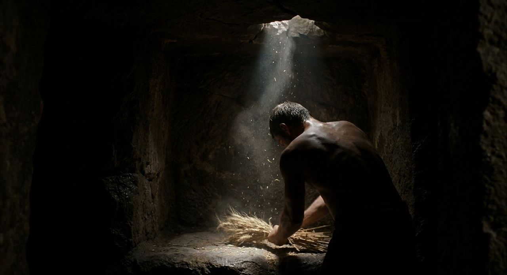
카드 글에 이 말이 있으면: 포도주 틀 속 · 포도주 틀에서
이 말이 있으면 쓰지 않음: 진노의 포도주 틀 · 낫
용도: 사건 장면
태그: wheat_field, winepress, cave, hiding
지금 쓰인 카드: 없음
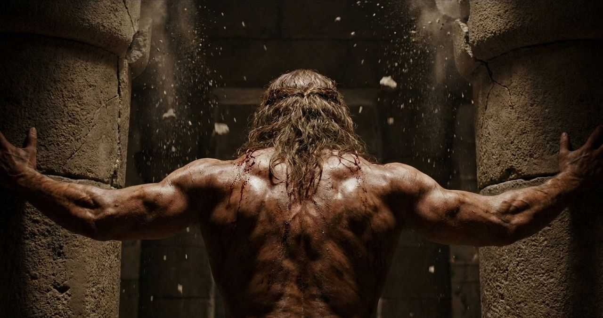
카드 글에 이 말이 있으면: 삼손 · 다곤
이 말이 있으면 쓰지 않음: 진리의 기둥 · 기둥과 터
용도: 사건 장면
태그: pillars, strength, temple_stones
지금 쓰인 카드: 없음
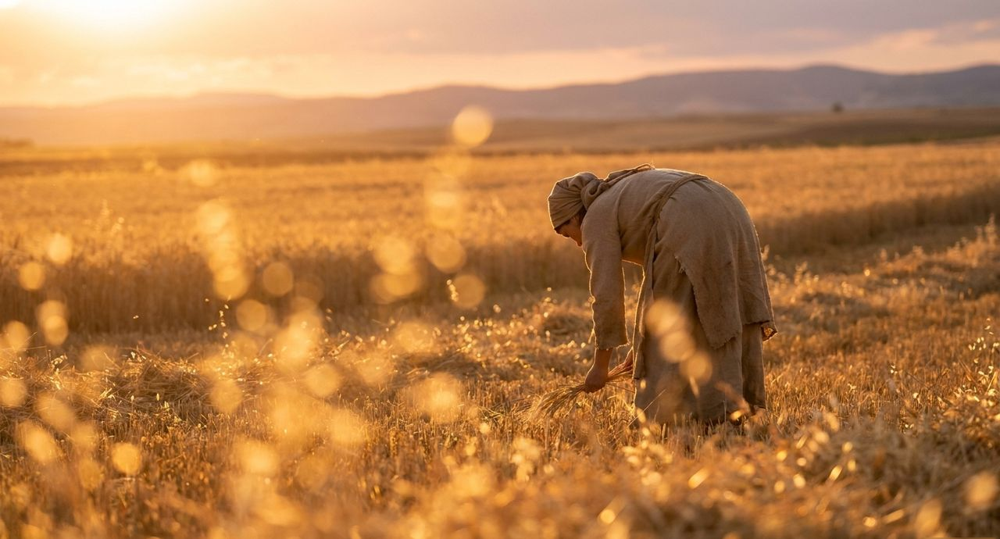
카드 글에 이 말이 있으면: 이삭을 줍 · 이삭 줍
용도: 사건 장면
태그: wheat_field, harvest, woman
지금 쓰인 카드: 없음

용도: 소품·동작
태그: harvest, wheat_field, sheaves
쓰인 카드 7장 보기
- 365 15일 2027판 · 창세기 40–41장 · 9번째 카드 — 의미 · 하나님이 정하신 일 · 하나님이 정하시고 행하실 일
- 365 42일 2027판 · 레위기 23–24장 · 4번째 카드 — 긴장 · 첫 이삭과 오십 일 · 곡물을 거둘 때
- 365 43일 2027판 · 레위기 25–27장 · 4번째 카드 — 긴장 · 연수를 따라 · 희년까지 남은 해
- 365 302일 2027판 · 누가복음 12–13장 · 1번째 카드 — 여러 해와 오늘 밤
- 365 308일 2027판 · 요한복음 3–4장 · 12번째 카드 — 의미 · 세상의 구주 · "세상을 이처럼", "세상의 구주"
- 365 312일 2027판 · 요한복음 11–12장 · 11번째 카드 — 전환 · 한 알의 밀
- 365 28일 2028판 · 출애굽기 21–24장 · 10번째 카드 — 의미 · 조금씩 · 조금씩 쫓아내시겠다는 약속
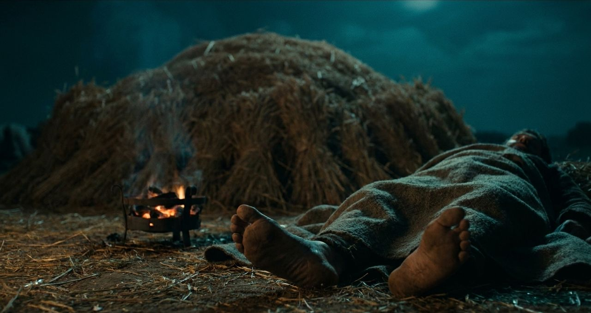
카드 글에 이 말이 있으면: 타작마당
용도: 사건 장면
태그: threshing_floor, night_sky, sleep
지금 쓰인 카드: 없음
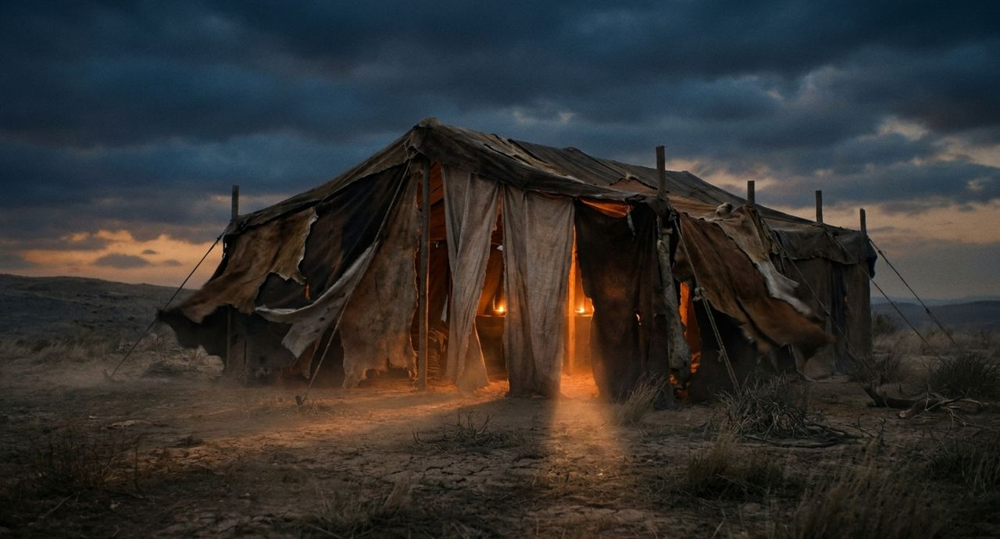
카드 글에 이 말이 있으면: 실로
이 말이 있으면 쓰지 않음: 실로암
용도: 장소·생활 배경
태그: tent, tabernacle, dusk
지금 쓰인 카드: 없음
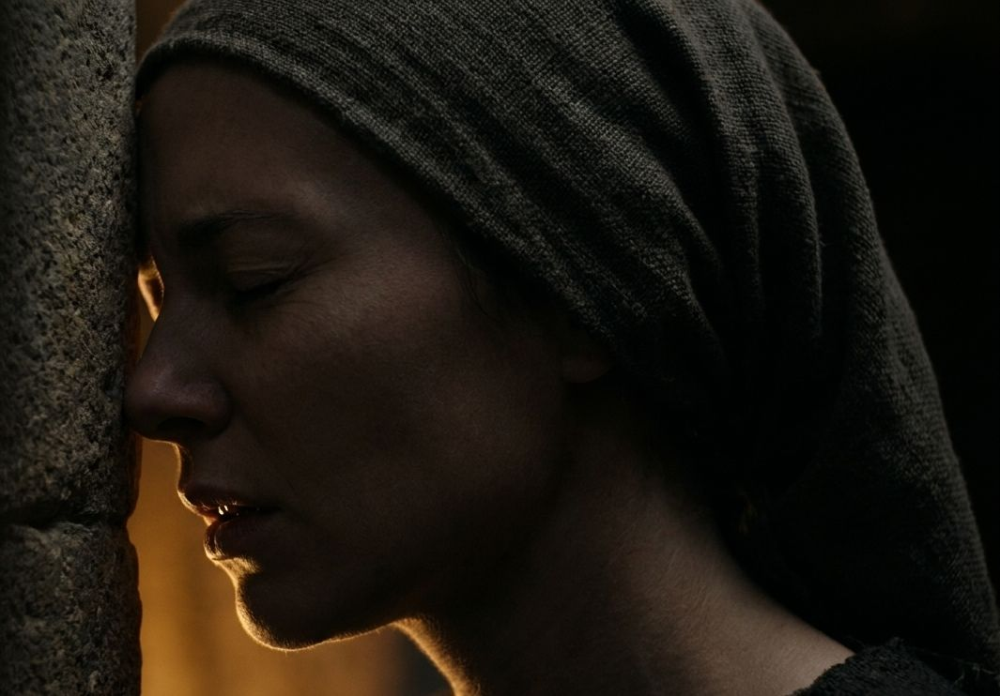
카드 글에 이 말이 있으면: 한나 · 통곡하며 기도
용도: 사건 장면
태그: woman, prayer, temple_stones
지금 쓰인 카드: 없음
카드 글에 이 말이 있으면: 기름을 붓 · 기름을 부어 · 기름 뿔
용도: 소품·동작
태그: oil, horn, anointing, sunrise_light_rays
쓰인 카드 2장 보기
- 365 30일 2027판 · 출애굽기 28–29장 · 9번째 카드 — 의미 · 옷을 입혀 세우심 · 씻기고, 옷을 입히고, 기름을 부어
- 365 36일 2027판 · 레위기 7–10장 · 3번째 카드 — 긴장 · 명령하신 대로 하매 · 위임식의 날들
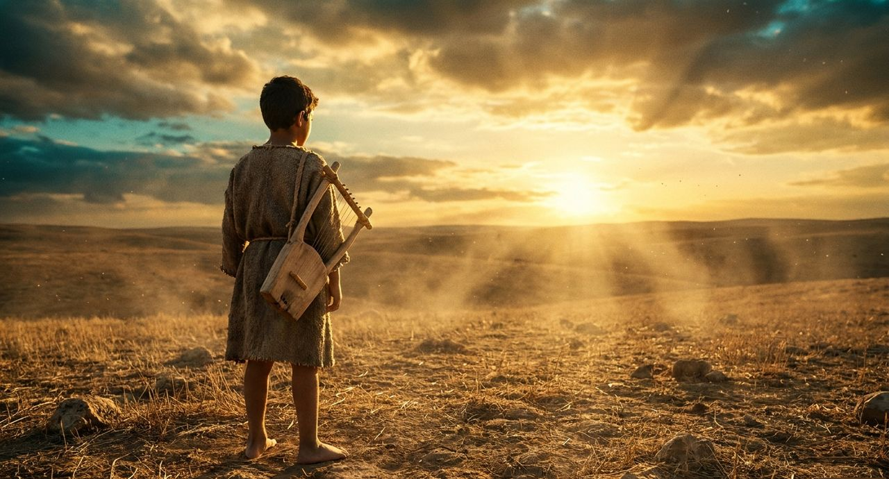
카드 글에 이 말이 있으면: 목동 · 양을 지키
용도: 사건 장면
태그: shepherd, pasture, dawn, boy
지금 쓰인 카드: 없음
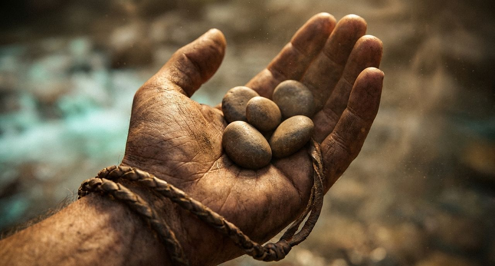
카드 글에 이 말이 있으면: 물매
용도: 소품·동작
태그: hands, stones, sling
지금 쓰인 카드: 없음
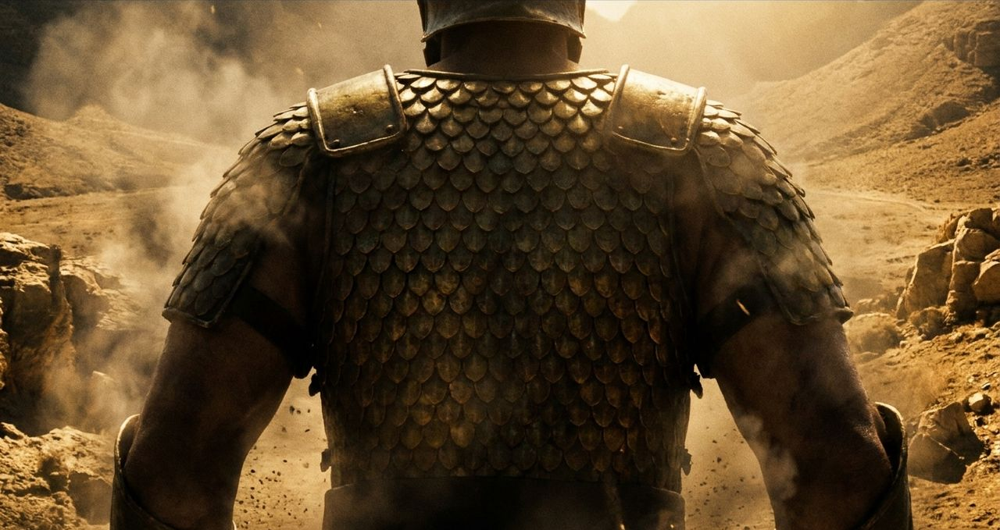
카드 글에 이 말이 있으면: 골리앗
용도: 사건 장면
태그: army, armor, valley
지금 쓰인 카드: 없음
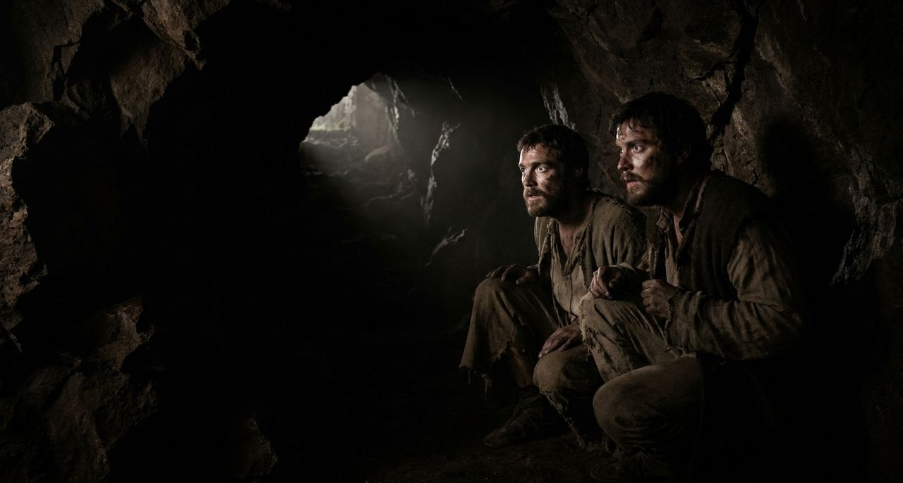
카드 글에 이 말이 있으면: 아둘람 · 엔게디
용도: 사건 장면
태그: cave, darkness, men
쓰인 카드 1장 보기
- 365 96일 2028판 · 사무엘상 24–26장 · 2번째 카드 — 배경 · 다시 찾으러 온 왕 · 택한 사람 삼천 명
카드 글에 이 말이 있으면: 옷자락
용도: 소품·동작
태그: hands, robe, cave
쓰인 카드 2장 보기
- 365 96일 2027판 · 사무엘상 24–26장 · 1번째 카드 — 두 번의 기회, 한 번의 분노
- 365 96일 2028판 · 사무엘상 24–26장 · 1번째 카드 — '그 날'은 누가 정하는가
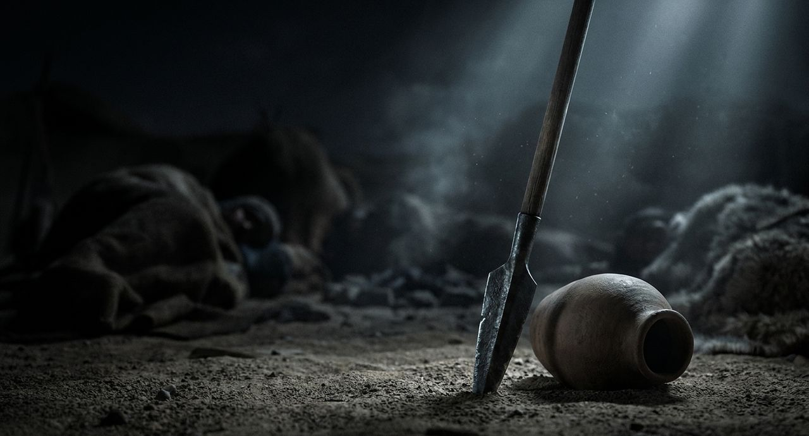
카드 글에 이 말이 있으면: 창과 물병 · 물병
용도: 소품·동작
태그: spear, clay_jar, night_sky, camp
지금 쓰인 카드: 없음
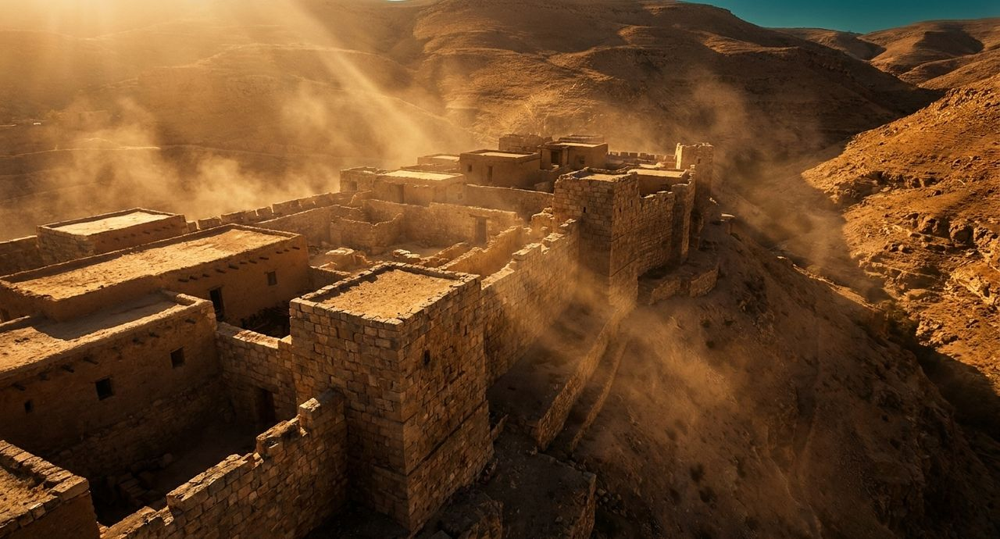
용도: 장소·생활 배경
태그: city_wall, jerusalem, fortress
지금 쓰인 카드: 없음
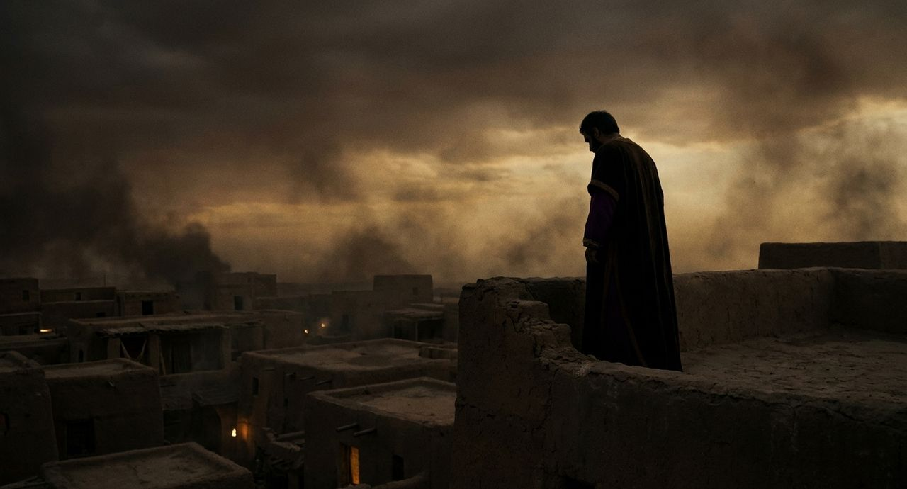
카드 글에 이 말이 있으면: 지붕 위를 거닐 · 밧세바
이 말이 있으면 쓰지 않음: 베드로 · 욥바 · 중풍병자
용도: 사건 장면
태그: roof, dusk, palace, city
지금 쓰인 카드: 없음
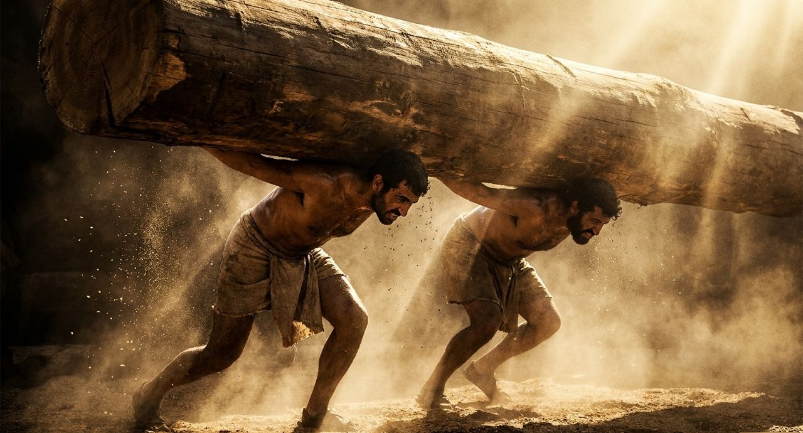
카드 글에 이 말이 있으면: 백향목
용도: 사건 장면
태그: cedar, men, labor
지금 쓰인 카드: 없음
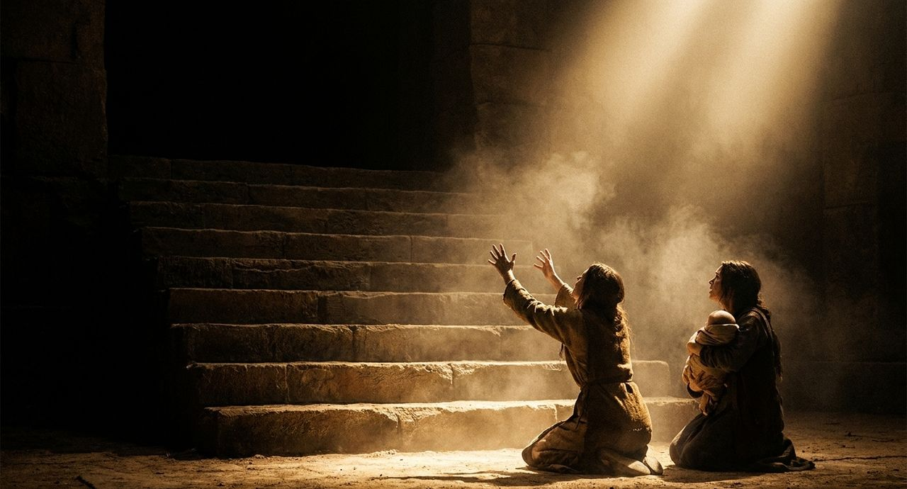
카드 글에 이 말이 있으면: 두 여인 · 아기 · 칼을 가져
용도: 사건 장면
태그: woman, child, judgment, temple_stones
지금 쓰인 카드: 없음
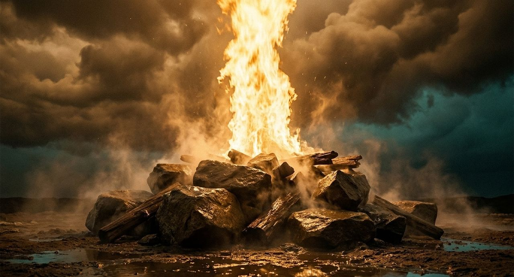
카드 글에 이 말이 있으면: 갈멜 산 · 엘리야가 제단
용도: 사건 장면
태그: fire, stone_altar, storm_sky
지금 쓰인 카드: 없음
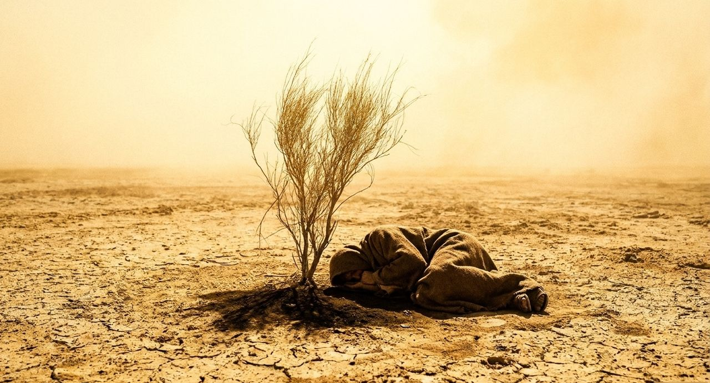
카드 글에 이 말이 있으면: 로뎀
용도: 사건 장면
태그: desert, broom_tree, sleep, drought
지금 쓰인 카드: 없음
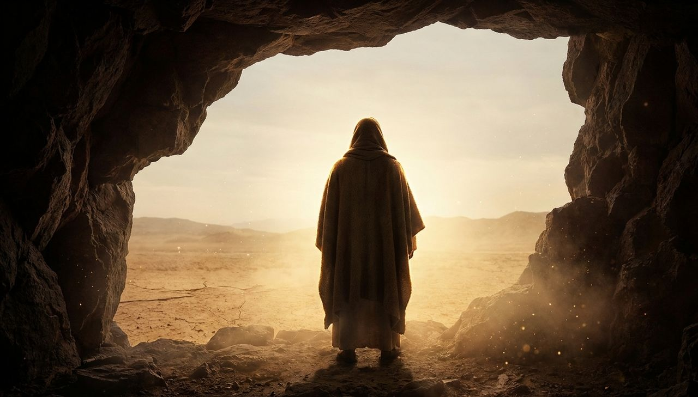
카드 글에 이 말이 있으면: 굴 어귀 · 세미한
용도: 사건 장면
태그: cave, sunrise_light_rays, mountain_peak
지금 쓰인 카드: 없음
카드 글에 이 말이 있으면: 앗수르 왕 · 앗수르 군대 · 산헤립
용도: 사건 장면
태그: army, armor, spear, desert
지금 쓰인 카드: 없음
카드 글에 이 말이 있으면: 공성 · 포위 · 라기스
용도: 사건 장면
태그: army, city_wall, siege
지금 쓰인 카드: 없음
용도: 장소·생활 배경
태그: ruins, fire, city_wall, smoke
쓰인 카드 1장 보기
- 365 222일 2027판 · 이사야 51–55장 · 5번째 카드 — 긴장 · 종일토록 · 더럽혀지는 이름
용도: 사건 장면
태그: chains, captives, road, desert
쓰인 카드 2장 보기
- 365 222일 2027판 · 이사야 51–55장 · 7번째 카드 — 전환 · 앞에서, 뒤에서 · 먼저 돌아오시는 분
- 365 222일 2028판 · 이사야 51–55장 · 4번째 카드 — 긴장 · 깨소서 깨소서 · 잠든 것 같은 팔
카드 글에 이 말이 있으면: 버드나무 · 수금을 걸
용도: 소품·동작
태그: lyre, river, willow
지금 쓰인 카드: 없음
용도: 장소·생활 배경
태그: city_gate, babylon
지금 쓰인 카드: 없음

카드 글에 이 말이 있으면: 토기장이
용도: 사건 장면
태그: hands, clay_jar, potter
쓰인 카드 1장 보기
- 365 329일 2027판 · 로마서 9–11장 · 1번째 카드 — 큰 근심에서 깊도다까지
카드 글에 이 말이 있으면: 옹기를 깨 · 옹기
용도: 소품·동작
태그: clay_jar, broken, soil
지금 쓰인 카드: 없음
카드 글에 이 말이 있으면: 두루마리를 태 · 칼로 베어
용도: 사건 장면
태그: scroll, fire, palace
지금 쓰인 카드: 없음
카드 글에 이 말이 있으면: 구덩이에 · 웅덩이에
용도: 장소·생활 배경
태그: pit, rope, cave, darkness
지금 쓰인 카드: 없음
카드 글에 이 말이 있으면: 마른 뼈
용도: 사건 장면
태그: bones, valley, dust, sunrise_light_rays
지금 쓰인 카드: 없음
카드 글에 이 말이 있으면: 사자 굴 · 사자들의 입 · 사자 굴
용도: 장소·생활 배경
태그: lion, cave, sunrise_light_rays, darkness
지금 쓰인 카드: 없음
카드 글에 이 말이 있으면: 풀무 · 불 가운데
용도: 소품·동작
태그: fire, furnace
지금 쓰인 카드: 없음
카드 글에 이 말이 있으면: 성벽을 쌓 · 성벽을 건축 · 성벽을 중수
용도: 사건 장면
태그: city_wall, builder, stones, dusk
지금 쓰인 카드: 없음

용도: 장소·생활 배경
태그: night_sky, stars, man
쓰인 카드 6장 보기
- 365 3일 2027판 · 창세기 6–9장 · 10번째 카드 — 전환 · 다시 주신 복 · 8:22–9:1 · 생육하고 번성하여
- 365 46일 2027판 · 민수기 5–6장 · 4번째 카드 — 긴장 · 자라게 둘 머리털 · 머리에 대지 않는 삭도
- 365 172일 2027판 · 시편 8–14편 · 1번째 카드 — 사람이 무엇이기에
- 365 313일 2027판 · 요한복음 13–14장 · 7번째 카드 — 긴장 · 어디로 가시나이까 · 세 번 나를 부인하리라
- 365 316일 2027판 · 요한복음 18–21장 · 3번째 카드 — 배경 · 대제사장의 집 뜰 · 문 밖에 선 베드로
- 365 9일 2028판 · 창세기 26–28장 · 9번째 카드 — 전환 · 그 밤에
카드 글에 이 말이 있으면: 수금 · 비파 · 찬양하 · 노래하
용도: 소품·동작
태그: lyre, hands
쓰인 카드 3장 보기
- 365 172일 2028판 · 시편 8–14편 · 1번째 카드 — 주께서는 보셨나이다
- 리딩지저스 43주차 6일째 · 유다서 1장 · 13번째 카드 — 의미 · 능히 너희를 보호하사 · 지키시는 하나님
- 리딩지저스 44주차 3일째 · 요한계시록 4–5장 · 10번째 카드 — 의미 · 만만이요 천천이라 · 넓어지는 노래
카드 글에 이 말이 있으면: 잿더미 · 재를 뒤집 · 재 가운데
용도: 사건 장면
태그: ashes, hands, sorrow
쓰인 카드 2장 보기
- 365 157일 2027판 · 욥기 1–3장 · 1번째 카드 — 온전하다 불린 사람, 그 입술의 말
- 365 157일 2028판 · 욥기 1–3장 · 1번째 카드 — 까닭 없이, 어찌하여
카드 글에 이 말이 있으면: 세 친구 · 욥의 친구
용도: 사건 장면
태그: friends, desert, sorrow
쓰인 카드 2장 보기
- 365 157일 2027판 · 욥기 1–3장 · 11번째 카드 — 의미 · 다시 열리는 입술 · 그 후에 열린 입
- 365 157일 2028판 · 욥기 1–3장 · 8번째 카드 — 긴장 · 칠 일 · 한마디도 없이
카드 글에 이 말이 있으면: 회오리바람 · 폭풍 가운데
용도: 자연·지형
태그: storm_sky, whirlwind, desert
지금 쓰인 카드: 없음
카드 글에 이 말이 있으면: 사슴
용도: 비유·환상·상징
태그: deer, water, stream
지금 쓰인 카드: 없음

용도: 자연·지형
태그: sheep, pasture, water
쓰인 카드 14장 보기
- 365 10일 2027판 · 창세기 29–31장 · 7번째 카드 — 긴장 · 길어진 세월 · 다시 칠 년, 그리고 이십 년
- 365 14일 2027판 · 창세기 37–39장 · 8번째 카드 — 긴장 · 보디발의 집 · 함께하시는 하나님, 유혹을 피한 요셉
- 365 23일 2027판 · 출애굽기 10–11장 · 9번째 카드 — 긴장 · 가축은 두고 가라 · 한 마리도 남길 수 없으니
- 365 24일 2027판 · 출애굽기 12–13장 · 10번째 카드 — 의미 · 입에 남을 말씀 · 네 입에 있게 하라
- 365 37일 2027판 · 레위기 11–12장 · 2번째 카드 — 배경 · 분별하라 하신 뒤 · 모세와 아론에게 주신 말씀
- 365 39일 2027판 · 레위기 16–17장 · 9번째 카드 — 의미 · 피가 죄를 속하느니라 · 내가 이 피를 너희에게 주어
- 365 44일 2027판 · 민수기 1–2장 · 11번째 카드 — 의미 · 성막 곁의 레위인 · 계수되지 아니하였으니
- 365 51일 2027판 · 민수기 18–19장 · 10번째 카드 — 의미 · 하나님의 대답 · 담당하게 하신 하나님
- 365 55일 2027판 · 민수기 31–33장 · 1번째 카드 — 다시 땅을 본 사람들
- 365 157일 2027판 · 욥기 1–3장 · 10번째 카드 — 의미 · 두 번의 평가 · 서술자가 붙인 말
- 365 172일 2027판 · 시편 8–14편 · 9번째 카드 — 의미 · 호소 사이의 노래 · 두 말 사이에 놓인 노래
- 365 222일 2027판 · 이사야 51–55장 · 10번째 카드 — 의미 · 친히 담당하리로다 · 두 목소리, 한 사실
- 365 303일 2027판 · 누가복음 14–16장 · 4번째 카드 — 긴장 · 양과 드라크마 · 나와 함께 즐기자
- 365 96일 2028판 · 사무엘상 24–26장 · 7번째 카드 — 긴장 · 좋은 날에 · 25장 · 좋은 날에 온 소년들
카드 글에 이 말이 있으면: 음침한 골짜기
용도: 비유·환상·상징
태그: valley, shepherd, darkness, sunrise_light_rays
쓰인 카드 1장 보기
- 365 311일 2027판 · 요한복음 9–10장 · 1번째 카드 — 보게 된 사람, 본다고 하는 사람들
용도: 소품·동작
태그: temple_stones, steps, pilgrim
쓰인 카드 6장 보기
- 365 40일 2027판 · 레위기 18–20장 · 7번째 카드 — 전환 · 거류민까지 · 자기 같이 사랑하라
- 365 304일 2027판 · 누가복음 17–19장 · 4번째 카드 — 긴장 · 성전의 두 기도 · 다시, 멀리 서서
- 365 305일 2027판 · 누가복음 20–21장 · 8번째 카드 — 전환 · 아름다운 돌 · 돌 하나도 돌 위에
- 365 309일 2027판 · 요한복음 5–6장 · 4번째 카드 — 긴장 · 이 날은 안식일 · 자리를 들고 걸어가니
- 365 310일 2027판 · 요한복음 7–8장 · 4번째 카드 — 긴장 · 우리는 아노라 · 어디서 왔는지 아노라
- 365 311일 2027판 · 요한복음 9–10장 · 5번째 카드 — 긴장 · 안식일이라 · 그 사람, 그리고 선지자
용도: 사건 장면
태그: threshing_floor, chaff, wind, winnowing
지금 쓰인 카드: 없음

용도: 자연·지형
태그: tree, river, water
지금 쓰인 카드: 없음
카드 글에 이 말이 있으면: 반석 위에 집 · 모래 위에 집
용도: 비유·환상·상징
태그: house, ruins, storm_sky, rock
지금 쓰인 카드: 없음
카드 글에 이 말이 있으면: 해 아래 · 수고하는
용도: 사건 장면
태그: labor, dusk, man
쓰인 카드 1장 보기
- 리딩지저스 40주차 5일째 · 에베소서 4–6장 · 5번째 카드 — 긴장 · 서로 용서하기를 · 버릴 것과 할 것

용도: 자연·지형
태그: vineyard, flowers, stones
쓰인 카드 9장 보기
- 365 1일 2027판 · 창세기 1–2장 · 7번째 카드 — 전환 · 만드시고 이끌어 오시니 · 2:21–22 · 이끌어 오시니
- 365 22일 2027판 · 출애굽기 7–9장 · 5번째 카드 — 긴장 · 숨을 돌린 뒤 · 보내겠다고 했지만
- 365 46일 2027판 · 민수기 5–6장 · 3번째 카드 — 긴장 · 포도나무에서 난 것 · 씨나 껍질이라도
- 365 50일 2027판 · 민수기 15–17장 · 10번째 카드 — 전환 · 싹 난 지팡이
- 365 172일 2027판 · 시편 8–14편 · 7번째 카드 — 의미 · 두 번의 '주의 손' · 하늘을 지으신 손, 맡기신 손
- 365 305일 2027판 · 누가복음 20–21장 · 5번째 카드 — 긴장 · 사랑하는 아들 · 마지막으로 보낸 이
- 365 310일 2027판 · 요한복음 7–8장 · 7번째 카드 — 긴장 · 돌로 치라 · 선생은 어떻게 말하겠나이까
- 365 314일 2027판 · 요한복음 15–16장 · 1번째 카드 — 내 안에 거하라, 그리고 미워하는 세상
- 365 157일 2028판 · 욥기 1–3장 · 4번째 카드 — 긴장 · 울타리 · 사탄이 댄 까닭
용도: 장소·생활 배경
태그: city_wall, watchman, dawn
쓰인 카드 16장 보기
- 365 2일 2027판 · 창세기 3–5장 · 11번째 카드 — 전환 · 셋의 출생과 여호와의 이름 · 4:25–26 · 다른 씨
- 365 4일 2027판 · 창세기 10–11장 · 5번째 카드 — 긴장 · 탑을 지으려는 이유 · 11:4 · 우리 이름을 내고
- 365 6일 2027판 · 창세기 17–20장 · 8번째 카드 — 긴장 · 아브라함이 밝힌 이유 · 20:8–13 · 하나님을 두려워함이 없으니
- 365 7일 2027판 · 창세기 21–23장 · 5번째 카드 — 긴장 · 가는 길 · 22:3–5 · 제삼일에
- 365 12일 2027판 · 창세기 34–35장 · 4번째 카드 — 긴장 · 속여 내건 조건 · 할례라는 조건
- 365 20일 2027판 · 출애굽기 3–4장 · 8번째 카드 — 전환 · 입과 함께 · 누가 사람의 입을 지었느냐
- 365 26일 2027판 · 출애굽기 16–18장 · 5번째 카드 — 전환 · 하늘에서 양식을
- 365 27일 2027판 · 출애굽기 19–20장 · 9번째 카드 — 전환 · 두려움과 경외 · 두려워하지 말라, 경외하라
- 365 49일 2027판 · 민수기 11–14장 · 4번째 카드 — 긴장 · 사십 일 뒤의 보고 · 젖과 꿀, 그리고 그러나
- 365 50일 2027판 · 민수기 15–17장 · 5번째 카드 — 긴장 · 아침에 보이실 분 · 엎드렸다가 한 대답
- 365 56일 2027판 · 민수기 34–36장 · 2번째 카드 — 배경 · 기업이 될 땅 · 제비 뽑아 받을 땅
- 365 58일 2027판 · 신명기 5–8장 · 5번째 카드 — 긴장 · 배불리 먹게 하실 때에 · 짓지 않은 성읍, 파지 않은 우물
- 365 314일 2027판 · 요한복음 15–16장 · 10번째 카드 — 의미 · 증언하실 것이요 · 미워하는 세상 앞에서
- 365 315일 2027판 · 요한복음 17장 · 10번째 카드 — 의미 · 그들 안에 · 기도가 끝에서 구하는 것
- 365 9일 2028판 · 창세기 26–28장 · 6번째 카드 — 전환 · 창으로 내다본 왕 · 이번에는 왕이 보았다
- 365 172일 2028판 · 시편 8–14편 · 3번째 카드 — 긴장 · 교만한 얼굴의 말 · 감찰하지 아니하신다

이 말이 있으면 쓰지 않음: 고기를 먹
용도: 장소·생활 배경
태그: fishing_boat, sea, dawn
쓰인 카드 4장 보기
- 365 307일 2027판 · 요한복음 1–2장 · 2번째 카드 — 배경 · 알지 못한 세상 · 세상은 알지 못하였고
- 365 310일 2027판 · 요한복음 7–8장 · 6번째 카드 — 긴장 · 갈릴리에서 · 알기 전에 심판하느냐
- 리딩지저스 36주차 1일째 · 사도행전 1–3장 · 8번째 카드 — 전환 · 회개하여 · 베드로의 대답
- 리딩지저스 38주차 2일째 · 로마서 4–6장 · 11번째 카드 — 의미 · 은혜 아래에 · 하나님께 드리라
용도: 소품·동작
태그: fishing_boat, net, sea
쓰인 카드 3장 보기
- 365 306일 2027판 · 누가복음 22–24장 · 5번째 카드 — 긴장 · 멀리 서서 · 멀리 서서 이 일을 보니라
- 365 307일 2027판 · 요한복음 1–2장 · 10번째 카드 — 전환 · 첫 표적
- 365 316일 2027판 · 요한복음 18–21장 · 12번째 카드 — 의미 · 나를 따르라 · 부인했던 자에게 맡기신 길
카드 글에 이 말이 있으면: 그물이 찢 · 물고기가 많
용도: 사건 장면
태그: net, fish, hands
쓰인 카드 1장 보기
- 365 316일 2027판 · 요한복음 18–21장 · 9번째 카드 — 전환 · 다시 불 곁에 · 바닷가의 불
카드 글에 이 말이 있으면: 풍랑 · 광풍
용도: 사건 장면
태그: fishing_boat, storm_sky, waves
쓰인 카드 2장 보기
- 365 326일 2027판 · 사도행전 25–28장 · 1번째 카드 — 로마에서도, 광풍을 지나
- 리딩지저스 37주차 6일째 · 사도행전 27–28장 · 1번째 카드 — 누구의 말을 믿을 것인가

용도: 장소·생활 배경
태그: crowd, pasture, hill
쓰인 카드 15장 보기
- 365 302일 2027판 · 누가복음 12–13장 · 2번째 카드 — 배경 · 유산을 나누게 하소서 · 무리 가운데 한 사람
- 365 303일 2027판 · 누가복음 14–16장 · 3번째 카드 — 긴장 · 수군거림 · 죄인과 같이 먹는다
- 365 304일 2027판 · 누가복음 17–19장 · 7번째 카드 — 긴장 · 가까이 오사 · 환호하는 무리
- 365 307일 2027판 · 요한복음 1–2장 · 8번째 카드 — 긴장 · 포도주가 없다 · 사흘째, 가나의 혼례
- 365 309일 2027판 · 요한복음 5–6장 · 6번째 카드 — 긴장 · 큰 무리 · 따라온 무리
- 365 315일 2027판 · 요한복음 17장 · 6번째 카드 — 전환 · 이 사람들만 위함이 아니요 · 기도가 한 번 더 넓어지다
- 365 317일 2027판 · 사도행전 1–2장 · 8번째 카드 — 전환 · 우리가 다 증인
- 365 321일 2027판 · 사도행전 10–12장 · 7번째 카드 — 전환 · 아무도 속되다 하거나 · 짐승에서 사람으로
- 365 340일 2027판 · 갈라디아서 1–2장 · 9번째 카드 — 의미 · 비교해 보기 · 박해하던 자가 · 멸하려던 그 믿음을
- 리딩지저스 36주차 1일째 · 사도행전 1–3장 · 4번째 카드 — 긴장 · 이 어찌 된 일이냐 · 놀라는 무리
- 리딩지저스 36주차 4일째 · 사도행전 9–10장 · 9번째 카드 — 전환 · 외모를 보지 아니하시고 · 고넬료의 집에서
- 리딩지저스 36주차 6일째 · 사도행전 14–15장 · 1번째 카드 — 신들이 내려오셨다, 할례를 받지 아니하면
- 리딩지저스 39주차 1일째 · 고린도전서 1–4장 · 1번째 카드 — 나는 바울에게? 너희는 그리스도의 것
- 리딩지저스 39주차 3일째 · 고린도전서 9–12장 · 9번째 카드 — 의미 · 몸은 하나인데 · 많은 지체, 한 몸
- 리딩지저스 43주차 4일째 · 요한일서 4–5장 · 3번째 카드 — 긴장 · 세상에 속한 말 · 듣는 사람이 있는 말
카드 글에 이 말이 있으면: 오병이어 · 떡 다섯 · 물고기 두
이 말이 있으면 쓰지 않음: 떡 일곱 · 일곱 개 · 일곱 광주리
용도: 소품·동작
태그: bread, fish, basket
쓰인 카드 1장 보기
- 365 309일 2027판 · 요한복음 5–6장 · 1번째 카드 — 내게 오는 자, 떠나가는 무리
용도: 소품·동작
태그: scroll, synagogue, sunrise_light_rays
쓰인 카드 34장 보기
- 365 301일 2027판 · 누가복음 10–11장 · 4번째 카드 — 긴장 · 무엇을 하여야 · 시험하는 질문
- 365 306일 2027판 · 누가복음 22–24장 · 7번째 카드 — 전환 · 성경을 풀어 · 모든 성경에 쓴 바
- 365 308일 2027판 · 요한복음 3–4장 · 2번째 카드 — 배경 · 한 사람 · 그런데 한 사람이 있으니
- 365 309일 2027판 · 요한복음 5–6장 · 5번째 카드 — 긴장 · 내게 오기를 · 영생을 얻기 위하여
- 365 311일 2027판 · 요한복음 9–10장 · 8번째 카드 — 긴장 · 어디서 왔는지 · 알지 못하노라
- 365 312일 2027판 · 요한복음 11–12장 · 9번째 카드 — 전환 · 스스로 함이 아니요 · 가야바의 말, 본문의 풀이
- 365 315일 2027판 · 요한복음 17장 · 9번째 카드 — 의미 · 나의 영광을 그들로 · 처음의 영화, 끝의 영광
- 365 320일 2027판 · 사도행전 8–9장 · 11번째 카드 — 의미 · 멸하려던 자가 · 이 사람이 아니냐
- 365 321일 2027판 · 사도행전 10–12장 · 10번째 카드 — 전환 · 차례로 설명하여 · 같은 환상, 다시
- 365 322일 2027판 · 사도행전 13–15장 · 4번째 카드 — 긴장 · 시기가 가득하여 · 비시디아 안디옥에서
- 365 324일 2027판 · 사도행전 19–20장 · 7번째 카드 — 전환 · 책을 불사르다 · 모든 사람 앞에서
- 365 327일 2027판 · 로마서 1–3장 · 12번째 카드 — 의미 · 자기도 의로우시며 · 이제는 나타난 의
- 365 336일 2027판 · 고린도후서 1–2장 · 7번째 카드 — 전환 · 예만 되었느니라 · 전파된 그분
- 365 343일 2027판 · 빌립보서 1–4장 · 5번째 카드 — 전환 · 그러면 무엇이냐 · 전파되는 것은 그리스도
- 365 346일 2027판 · 데살로니가후서 1–3장 · 7번째 카드 — 의미 · 비교해 보기 · 말과 편지 · 같은 말, 다른 출처
- 365 348일 2027판 · 디모데후서 1–4장 · 8번째 카드 — 전환 · 누구에게서 배운 것 · 어려서부터 알았나니
- 365 352일 2027판 · 히브리서 7–10장 · 10번째 카드 — 의미 · 기억 · 두 번 나오는 '기억'
- 365 359일 2027판 · 요한이서 · 요한삼서 · 유다서 · 11번째 카드 — 의미 · 진리 안에서 행한다 · 문 앞에서 드러나는 진리
- 365 360일 2027판 · 요한계시록 1–3장 · 12번째 카드 — 의미 · 촛대 사이에서 · 보내시는 이는 같은 분
- 365 361일 2027판 · 요한계시록 4–6장 · 7번째 카드 — 전환 · 두루마리를 취하시니 · 새 노래
- 365 362일 2027판 · 요한계시록 7–9장 · 11번째 카드 — 의미 · 눈물을 씻어 주실 · 보좌 앞에 선 자들에게
- 365 364일 2027판 · 요한계시록 15–18장 · 10번째 카드 — 의미 · 즐거워하라 · 우는 자들 곁의 다른 부름
- 리딩지저스 36주차 2일째 · 사도행전 4–5장 · 10번째 카드 — 전환 · 사람보다 하나님께 · 두 번째 대답
- 리딩지저스 37주차 6일째 · 사도행전 27–28장 · 12번째 카드 — 의미 · 담대하게 거침없이 · 온 이태
- 리딩지저스 39주차 6일째 · 고린도후서 4–6장 · 7번째 카드 — 전환 · 돌리지 아니하시고 · 화목하게 하는 말씀
- 리딩지저스 41주차 5일째 · 디모데후서 1–4장 · 10번째 카드 — 의미 · 비교해 보기 · 두 배움 · 같은 '배우다', 다른 끝
- 리딩지저스 42주차 5일째 · 야고보서 1–3장 · 4번째 카드 — 긴장 · 좋은 자리에 앉으소서 · 회당 안의 말
- 리딩지저스 43주차 6일째 · 유다서 1장 · 3번째 카드 — 배경 · 힘써 싸우라 · 바뀐 편지
- 리딩지저스 44주차 1일째 · 요한계시록 1장 · 12번째 카드 — 의미 · 오른손 · 일곱 별이 있는 오른손
- 리딩지저스 44주차 3일째 · 요한계시록 4–5장 · 8번째 카드 — 전환 · 새 노래
- 리딩지저스 44주차 6일째 · 요한계시록 10–11장 · 3번째 카드 — 배경 · 입에는 달고 배에는 쓴 · 다시 예언하여야
- 리딩지저스 45주차 3일째 · 요한계시록 16–17장 · 7번째 카드 — 전환 · 천사의 물음
- 리딩지저스 45주차 4일째 · 요한계시록 18–19장 · 10번째 카드 — 의미 · 하나님의 참되신 말씀 · 기록하라
- 리딩지저스 45주차 6일째 · 요한계시록 22장 · 6번째 카드 — 긴장 · 인봉하지 말라 · 두 번째 약속
카드 글에 이 말이 있으면: 우물곁 · 물동이
용도: 소품·동작
태그: well, clay_jar
쓰인 카드 1장 보기
- 365 308일 2027판 · 요한복음 3–4장 · 10번째 카드 — 전환 · 와서 보라 · 버려 두고 간 물동이
카드 글에 이 말이 있으면: 향유 · 옥합
이 말이 있으면 쓰지 않음: 머리에 부
용도: 사건 장면
태그: oil, feet, alabaster
쓰인 카드 1장 보기
- 365 312일 2027판 · 요한복음 11–12장 · 10번째 카드 — 긴장 · 장례할 날 · 이 날부터
카드 글에 이 말이 있으면: 삭개오 · 뽕나무
용도: 사건 장면
태그: tree, man, road
쓰인 카드 1장 보기
- 365 304일 2027판 · 누가복음 17–19장 · 1번째 카드 — 멀리 서서 외친 사람들, 가까이 와서 우신 예수님
카드 글에 이 말이 있으면: 겟세마네
용도: 사건 장면
태그: olive_tree, prayer, night_sky
지금 쓰인 카드: 없음
카드 글에 이 말이 있으면: 닭이 울 · 불을 쬐
용도: 사건 장면
태그: fire, courtyard, night_sky, rooster
쓰인 카드 1장 보기
- 365 316일 2027판 · 요한복음 18–21장 · 1번째 카드 — 불 곁의 세 번, 숯불 곁의 세 번
카드 글에 이 말이 있으면: 십자가
용도: 사건 장면
태그: cross, storm_sky, hill
쓰인 카드 8장 보기
- 365 331일 2027판 · 고린도전서 1–4장 · 1번째 카드 — 미련한 것, 하나님의 지혜
- 365 341일 2027판 · 갈라디아서 3–6장 · 2번째 카드 — 배경 · 누가 너희를 꾀더냐 · 어리석도다
- 365 353일 2027판 · 히브리서 11–13장 · 9번째 카드 — 전환 · 예수를 바라보자
- 리딩지저스 36주차 2일째 · 사도행전 4–5장 · 4번째 카드 — 긴장 · 공회 앞의 대답 · 이 사람이 섰느니라
- 리딩지저스 38주차 2일째 · 로마서 4–6장 · 9번째 카드 — 전환 · 함께 장사되었나니 · 옛 사람이 못 박힌 것은
- 리딩지저스 39주차 1일째 · 고린도전서 1–4장 · 4번째 카드 — 긴장 · 어찌 나뉘었느냐 · 바울의 이름으로?
- 리딩지저스 40주차 3일째 · 갈라디아서 1–6장 · 11번째 카드 — 의미 · 새로 지으심 · 십자가 외에
- 리딩지저스 40주차 6일째 · 빌립보서 1–4장 · 7번째 카드 — 전환 · 이러므로
카드 글에 이 말이 있으면: 빈 무덤 · 무덤이 비 · 돌이 굴려 · 세마포가 놓
이 말이 있으면 쓰지 않음: 나사로 · 야이로
용도: 사건 장면
태그: rock_tomb, sunrise_light_rays, dawn
쓰인 카드 2장 보기
- 365 306일 2027판 · 누가복음 22–24장 · 1번째 카드 — 멀리서 본 사람들, 이 모든 일의 증인
- 365 316일 2027판 · 요한복음 18–21장 · 8번째 카드 — 긴장 · 아무 것도 잡지 못하였더니 · 디베랴 호수의 밤
카드 글에 이 말이 있으면: 다락방 · 다락에
용도: 장소·생활 배경
태그: oil_lamp, room, prayer
쓰인 카드 4장 보기
- 365 317일 2027판 · 사도행전 1–2장 · 6번째 카드 — 긴장 · 기다리는 동안 · 증언할 사람
- 365 321일 2027판 · 사도행전 10–12장 · 1번째 카드 — 속되다 하지 말라, 보자기에서 사람에게로
- 365 324일 2027판 · 사도행전 19–20장 · 1번째 카드 — 빌린 이름, 높여진 이름
- 리딩지저스 37주차 2일째 · 사도행전 19–20장 · 1번째 카드 — 알지 못하는 길, 부탁하고 떠나다
카드 글에 이 말이 있으면: 미문 · 못 걷는
용도: 사건 장면
태그: temple_stones, gate, beggar, sunrise_light_rays
쓰인 카드 3장 보기
- 365 318일 2027판 · 사도행전 3–5장 · 2번째 카드 — 배경 · 미문 앞에서 · 은과 금은 없거니와
- 리딩지저스 36주차 1일째 · 사도행전 1–3장 · 9번째 카드 — 긴장 · 왜 우리를 주목하느냐 · 미문 앞의 사람
- 리딩지저스 36주차 2일째 · 사도행전 4–5장 · 1번째 카드 — 이 이름으로 말하지 말라
카드 글에 이 말이 있으면: 스데반
용도: 사건 장면
태그: robe, dust, stones
쓰인 카드 4장 보기
- 365 319일 2027판 · 사도행전 6–7장 · 1번째 카드 — 밀어낸 조상들, 다시 밀어내는 공회
- 365 320일 2027판 · 사도행전 8–9장 · 2번째 카드 — 배경 · 그 날에 · 큰 박해
- 리딩지저스 36주차 3일째 · 사도행전 6–8장 · 3번째 카드 — 배경 · 점점 왕성하여 · 예루살렘 안에서
- 리딩지저스 36주차 5일째 · 사도행전 11–13장 · 2번째 카드 — 배경 · 안디옥 · 주의 손이 함께
카드 글에 이 말이 있으면: 다메섹 도상 · 다메섹으로 가
용도: 사건 장면
태그: road, sunrise_light_rays, dust
쓰인 카드 4장 보기
- 365 320일 2027판 · 사도행전 8–9장 · 6번째 카드 — 긴장 · 여전히 · 다메섹으로 가는 사울
- 리딩지저스 36주차 4일째 · 사도행전 9–10장 · 1번째 카드 — '주여' 하고 머뭇거릴 때 주님은 먼저 일하셨다
- 리딩지저스 37주차 3일째 · 사도행전 21–22장 · 9번째 카드 — 전환 · 다메섹 길에서 · 증인이 되리라
- 리딩지저스 37주차 5일째 · 사도행전 25–26장 · 1번째 카드 — 네가 미쳤도다, 종과 증인

카드 글에 이 말이 있으면: 광주리
용도: 사건 장면
태그: city_wall, basket, rope, night_sky
쓰인 카드 2장 보기
- 365 339일 2027판 · 고린도후서 10–13장 · 1번째 카드 — 약한 것을 자랑하리라
- 리딩지저스 40주차 2일째 · 고린도후서 10–13장 · 1번째 카드 — 누가 옳다 인정함을 받는가
용도: 장소·생활 배경
태그: road, olive_tree, men
쓰인 카드 52장 보기
- 365 317일 2027판 · 사도행전 1–2장 · 5번째 카드 — 긴장 · 알 바 아니요 · 때 대신 주신 말씀
- 365 320일 2027판 · 사도행전 8–9장 · 5번째 카드 — 전환 · 두루 다니며 · 흩어진 사람들이 한 일
- 365 322일 2027판 · 사도행전 13–15장 · 7번째 카드 — 전환 · 돌아가서 · 이번에는 지나온 성으로
- 365 323일 2027판 · 사도행전 16–18장 · 1번째 카드 — 막힌 길 끝에서, 건너와서 도우라
- 365 325일 2027판 · 사도행전 21–24장 · 7번째 카드 — 긴장 · 살려 둘 자가 아니라 · 층대 위의 변명
- 365 327일 2027판 · 로마서 1–3장 · 2번째 카드 — 배경 · 로마에 있는 너희에게 · 아직 가지 못한 곳
- 365 329일 2027판 · 로마서 9–11장 · 12번째 카드 — 의미 · 깊도다 · 근심에서 찬송으로
- 365 330일 2027판 · 로마서 12–16장 · 11번째 카드 — 의미 · 주의 것 · 사나 죽으나
- 365 333일 2027판 · 고린도전서 8–10장 · 7번째 카드 — 전환 · 이 권리를 쓰지 아니하고
- 365 334일 2027판 · 고린도전서 11–14장 · 4번째 카드 — 긴장 · 다 방언을 말하는 자이겠느냐 · 더욱 큰 은사를 사모하라
- 365 336일 2027판 · 고린도후서 1–2장 · 1번째 카드 — 예 예 하면서 아니라 아니라?
- 365 340일 2027판 · 갈라디아서 1–2장 · 1번째 카드 — 박해하던 자가 전하는 자로
- 365 341일 2027판 · 갈라디아서 3–6장 · 1번째 카드 — 성령으로 시작하였다가
- 365 345일 2027판 · 데살로니가전서 1–5장 · 5번째 카드 — 긴장 · 막힌 길 · 사탄이 우리를 막았도다
- 365 347일 2027판 · 디모데전서 1–6장 · 8번째 카드 — 긴장 · 세 번째 미쁘다 · 경건에 이르도록
- 365 348일 2027판 · 디모데후서 1–4장 · 6번째 카드 — 전환 · 충성된 사람들에게
- 365 349일 2027판 · 디도서 1–3장 · 1번째 카드 — 선한 일은 어디서 시작되는가
- 365 350일 2027판 · 빌레몬서 · 1번째 카드 — 무익에서 유익으로, 종에서 형제로
- 365 353일 2027판 · 히브리서 11–13장 · 4번째 카드 — 긴장 · 믿음으로 아벨은 · 줄지어 불리는 이름
- 365 355일 2027판 · 베드로전서 1–5장 · 1번째 카드 — 그리스도의 고난, 나그네의 고난
- 365 356일 2027판 · 베드로후서 1–3장 · 11번째 카드 — 의미 · 오래 참으심 · 더디지 않은 약속 앞에서
- 365 357일 2027판 · 요한일서 1–3장 · 7번째 카드 — 전환 · 자백하면 · 길을 여는 한 문장
- 365 358일 2027판 · 요한일서 4–5장 · 4번째 카드 — 긴장 · 하나님을 사랑하노라 하고 · 입으로 하는 사랑
- 365 359일 2027판 · 요한이서 · 요한삼서 · 유다서 · 4번째 카드 — 긴장 · 미혹하는 자 · 진리를 행하는 자녀들 곁에
- 365 364일 2027판 · 요한계시록 15–18장 · 6번째 카드 — 긴장 · 내 백성아 · 거기서 나와
- 리딩지저스 36주차 4일째 · 사도행전 9–10장 · 5번째 카드 — 전환 · 가라 · 주님의 대답
- 리딩지저스 36주차 6일째 · 사도행전 14–15장 · 13번째 카드 — 의미 · 위로한 말 · 하나님이 하신 일로
- 리딩지저스 37주차 1일째 · 사도행전 16–18장 · 11번째 카드 — 의미 · 성경으로써 · 18장 끝의 아볼로
- 리딩지저스 37주차 2일째 · 사도행전 19–20장 · 10번째 카드 — 의미 · 배에까지 · 부탁하고 떠나다
- 리딩지저스 37주차 3일째 · 사도행전 21–22장 · 5번째 카드 — 전환 · 이름을 위하여
- 리딩지저스 37주차 5일째 · 사도행전 25–26장 · 6번째 카드 — 긴장 · 나도 · 다메섹으로 가던 정오
- 리딩지저스 38주차 4일째 · 로마서 9–11장 · 1번째 카드 — 꺾인 가지, 접붙인 가지
- 리딩지저스 38주차 5일째 · 로마서 12–14장 · 5번째 카드 — 긴장 · 박해하는 자를 · 악을 악으로
- 리딩지저스 38주차 6일째 · 로마서 15–16장 · 1번째 카드 — 막혔던 길, 힘을 같이하여
- 리딩지저스 39주차 2일째 · 고린도전서 5–8장 · 5번째 카드 — 긴장 · 차라리 · 당하는 것이 낫지 아니하냐
- 리딩지저스 39주차 3일째 · 고린도전서 9–12장 · 2번째 카드 — 배경 · 권리를 쓰지 아니하고 · 바울 자신의 이야기
- 리딩지저스 40주차 1일째 · 고린도후서 7–9장 · 2번째 카드 — 배경 · 디도가 옴 · 마게도냐에서 받은 위로
- 리딩지저스 40주차 3일째 · 갈라디아서 1–6장 · 2번째 카드 — 배경 · 다른 복음 · 이같이 속히 떠나
- 리딩지저스 40주차 5일째 · 에베소서 4–6장 · 1번째 카드 — 부르심에 합당하게 행하라
- 리딩지저스 40주차 6일째 · 빌립보서 1–4장 · 8번째 카드 — 의미 · 자기 일 · 자기 일과 다른 사람들의 일
- 리딩지저스 41주차 4일째 · 디모데전서 1–6장 · 8번째 카드 — 전환 · 오직 너 하나님의 사람아 · 피하고, 따르며, 싸우라
- 리딩지저스 41주차 5일째 · 디모데후서 1–4장 · 6번째 카드 — 전환 · 네가 과연 보고 알았거니와 · 네가 과연 보고 알았거니와
- 리딩지저스 41주차 6일째 · 디도서 1장 – 빌레몬서 1장 · 1번째 카드 — 권면 뒤에 붙은 '하려 함이라'
- 리딩지저스 42주차 3일째 · 히브리서 7–9장 · 1번째 카드 — 아직 나타나지 아니한 길
- 리딩지저스 42주차 4일째 · 히브리서 10–13장 · 1번째 카드 — 물러가지 말고, 나아가자
- 리딩지저스 42주차 5일째 · 야고보서 1–3장 · 6번째 카드 — 긴장 · 길들일 사람이 없나니 · 길들지 않는 혀
- 리딩지저스 42주차 6일째 · 야고보서 4–5장 · 1번째 카드 — 하나님을 가까이하라, 주의 강림이 가까우니라
- 리딩지저스 43주차 1일째 · 베드로전서 1–5장 · 2번째 카드 — 배경 · 흩어진 나그네 · 편지를 받는 사람들
- 리딩지저스 43주차 3일째 · 요한일서 1–3장 · 5번째 카드 — 긴장 · 우리에게서 나갔으나 · 떠난 사람들
- 리딩지저스 43주차 5일째 · 요한이서 1장 – 요한삼서 1장 · 5번째 카드 — 긴장 · 나그네 된 자들 · 가이오가 행한 일
- 리딩지저스 44주차 6일째 · 요한계시록 10–11장 · 4번째 카드 — 긴장 · 두 증인 · 천이백육십 일을 예언하리라
- 리딩지저스 45주차 2일째 · 요한계시록 14–15장 · 11번째 카드 — 의미 · 두려워하며 노래하는 자들 · 크고 놀라우시도다
카드 글에 이 말이 있으면: 옥에 가 · 옥에 갇 · 옥문 · 감옥 · 매인 자 · 매임 · 갇힌
용도: 소품·동작
태그: prison, chains, sunrise_light_rays
쓰인 카드 15장 보기
- 365 318일 2027판 · 사도행전 3–5장 · 7번째 카드 — 전환 · 옥문을 열고 · 밤에 온 주의 사자
- 365 323일 2027판 · 사도행전 16–18장 · 7번째 카드 — 긴장 · 깊은 옥 · 한밤중의 찬송
- 365 325일 2027판 · 사도행전 21–24장 · 1번째 카드 — 쌓이는 고발, 곁에 서신 주님
- 365 342일 2027판 · 에베소서 1–6장 · 1번째 카드 — 그때는, 이제는
- 365 343일 2027판 · 빌립보서 1–4장 · 1번째 카드 — 매인 사람이 기뻐하라 하다
- 365 344일 2027판 · 골로새서 1–4장 · 1번째 카드 — 만물, 그 중심에 서신 분
- 365 348일 2027판 · 디모데후서 1–4장 · 4번째 카드 — 긴장 · 갇힌 자 된 나 · 부끄러워하지 말고
- 리딩지저스 36주차 2일째 · 사도행전 4–5장 · 8번째 카드 — 긴장 · 다시 옥으로 · 옥문을 연 밤
- 리딩지저스 36주차 5일째 · 사도행전 11–13장 · 1번째 카드 — 헤롯의 손, 주의 손
- 리딩지저스 37주차 1일째 · 사도행전 16–18장 · 2번째 카드 — 배경 · 마게도냐에서 · 세 안식일에
- 리딩지저스 40주차 4일째 · 에베소서 1–3장 · 1번째 카드 — 멀리 있던 자들이 함께 지어지다
- 리딩지저스 40주차 5일째 · 에베소서 4–6장 · 2번째 카드 — 배경 · 그러므로 · 갇힌 사람의 권면
- 리딩지저스 40주차 6일째 · 빌립보서 1–4장 · 1번째 카드 — 이 마음을 품으라
- 리딩지저스 41주차 1일째 · 골로새서 1–4장 · 1번째 카드 — 죽었거든, 살리심을 받았으면
- 리딩지저스 41주차 5일째 · 디모데후서 1–4장 · 1번째 카드 — 항상 배우나, 배우고 확신한
카드 글에 이 말이 있으면: 아덴 · 아레오바고
용도: 장소·생활 배경
태그: ruins, city, temple_stones
쓰인 카드 2장 보기
- 365 323일 2027판 · 사도행전 16–18장 · 11번째 카드 — 의미 · 막혔던 아시아 · 길을 정하시는 주님
- 리딩지저스 37주차 1일째 · 사도행전 16–18장 · 1번째 카드 — 시기한 사람들, 상고한 사람들
용도: 장소·생활 배경
태그: ship, harbor, sea
쓰인 카드 13장 보기
- 365 322일 2027판 · 사도행전 13–15장 · 1번째 카드 — 안디옥에서 안디옥으로, 누가 한 일인가
- 365 323일 2027판 · 사도행전 16–18장 · 5번째 카드 — 전환 · 부르신 줄로
- 365 336일 2027판 · 고린도후서 1–2장 · 2번째 카드 — 배경 · 세웠던 계획 · 두 번 은혜를 얻게 하려고
- 365 349일 2027판 · 디도서 1–3장 · 2번째 카드 — 배경 · 그레데에 남겨 둔 이유 · 남은 일을 정리하고
- 365 363일 2027판 · 요한계시록 10–14장 · 2번째 카드 — 배경 · 바다 모래 위에 선 용 · 남은 자손과 싸우려고
- 리딩지저스 36주차 6일째 · 사도행전 14–15장 · 8번째 카드 — 전환 · 믿음의 문을 여신 것 · 돌아와 한 보고
- 리딩지저스 37주차 5일째 · 사도행전 25–26장 · 12번째 카드 — 의미 · 결박된 것 외에는 · 증인의 자리
- 리딩지저스 38주차 6일째 · 로마서 15–16장 · 6번째 카드 — 긴장 · 서바나로 갈 때에 · 지나가는 길에
- 리딩지저스 41주차 6일째 · 디도서 1장 – 빌레몬서 1장 · 2번째 카드 — 배경 · 그레데에 남겨 둔 이유 · 남은 일을 정리하고
- 리딩지저스 42주차 2일째 · 히브리서 4–6장 · 12번째 카드 — 의미 · 영혼의 닻 · 앞서 들어가신 예수
- 리딩지저스 42주차 5일째 · 야고보서 1–3장 · 5번째 카드 — 긴장 · 혀도 작은 지체로되 · 작은 불
- 리딩지저스 45주차 1일째 · 요한계시록 12–13장 · 7번째 카드 — 긴장 · 바다에서 나온 짐승 · 누가 능히 싸우리요
- 리딩지저스 45주차 2일째 · 요한계시록 14–15장 · 8번째 카드 — 전환 · 유리 바다 가에 · 이기고 벗어난 자들
카드 글에 이 말이 있으면: 파선 · 난파 · 멜리데
용도: 사건 장면
태그: ship, storm_sky, waves, shipwreck
쓰인 카드 4장 보기
- 365 326일 2027판 · 사도행전 25–28장 · 10번째 카드 — 의미 · 로마로 가니라 · 이와 같이
- 365 339일 2027판 · 고린도후서 10–13장 · 5번째 카드 — 긴장 · 바울의 목록 · 옥과 매와 파선
- 리딩지저스 37주차 6일째 · 사도행전 27–28장 · 9번째 카드 — 긴장 · 멜리데에서 · 살인한 자, 신
- 리딩지저스 40주차 2일째 · 고린도후서 10–13장 · 7번째 카드 — 긴장 · 어리석은 자와 같이 · 약함의 목록
카드 글에 이 말이 있으면: 떡을 떼 · 주의 만찬 · 떡을 가지사
용도: 사건 장면
태그: bread, hands, table
쓰인 카드 3장 보기
- 365 306일 2027판 · 누가복음 22–24장 · 2번째 카드 — 배경 · 마지막 식탁 · 떡과 각오
- 365 333일 2027판 · 고린도전서 8–10장 · 1번째 카드 — 지식과 사랑, 쓰지 않은 권리
- 리딩지저스 39주차 3일째 · 고린도전서 9–12장 · 1번째 카드 — 한 떡, 한 몸
카드 글에 이 말이 있으면: 밧모
용도: 장소·생활 배경
태그: sea, rock, man, sunrise_light_rays
쓰인 카드 2장 보기
- 365 360일 2027판 · 요한계시록 1–3장 · 1번째 카드 — 일곱 교회, 되풀이되는 편지의 틀
- 리딩지저스 44주차 1일째 · 요한계시록 1장 · 1번째 카드 — 음성을 알아 보려고 돌이킨 요한
카드 글에 이 말이 있으면: 생명수 · 생명나무 · 생명의 강
용도: 비유·환상·상징
태그: river, tree, sunrise_light_rays
쓰인 카드 3장 보기
- 365 365일 2027판 · 요한계시록 19–22장 · 1번째 카드 — 음녀의 성, 신부의 성
- 리딩지저스 45주차 5일째 · 요한계시록 20–21장 · 9번째 카드 — 전환 · 보좌에 앉으신 이가 이르시되 · 만물을 새롭게
- 리딩지저스 45주차 6일째 · 요한계시록 22장 · 1번째 카드 — 보라 내가 속히 오리니
카드 글에 이 말이 있으면: 구름 기둥 · 구름기둥
용도: 사건 장면
태그: clouds, pillar, desert, tent
지금 쓰인 카드: 없음
카드 글에 이 말이 있으면: 시내 산 · 시내산 · 산에 강림 · 연기
용도: 사건 장면
태그: mountain_peak, storm_sky, fire, smoke
쓰인 카드 3장 보기
- 365 27일 2027판 · 출애굽기 19–20장 · 2번째 카드 — 배경 · 산 앞에서 돌아본 길 · 시내 산에 이른 백성
- 365 36일 2027판 · 레위기 7–10장 · 2번째 카드 — 배경 · 시내 산에서 명령하신 규례 · 규례가 온 곳
- 365 43일 2027판 · 레위기 25–27장 · 2번째 카드 — 배경 · 땅도 쉬는 해 · 여호와 앞에 안식하게 하라
카드 글에 이 말이 있으면: 은 나팔 · 나팔 둘
용도: 사건 장면
태그: trumpet, priest, tent, camp
쓰인 카드 1장 보기
- 365 48일 2027판 · 민수기 9–10장 · 6번째 카드 — 긴장 · 은 나팔 둘 · 모으고 떠나게 하는 소리
카드 글에 이 말이 있으면: 언약궤 · 법궤
용도: 사건 장면
태그: ark, priest, river
쓰인 카드 1장 보기
- 365 48일 2027판 · 민수기 9–10장 · 1번째 카드 — 구름이 떠오를 때 앞서 간 언약궤
카드 글에 이 말이 있으면: 항아리 속에 횃불 · 항아리를 깨
용도: 사건 장면
태그: fire, clay_jar, night_sky, army
지금 쓰인 카드: 없음
카드 글에 이 말이 있으면: 블레셋
용도: 사건 장면
태그: army, philistine, dusk
지금 쓰인 카드: 없음
카드 글에 이 말이 있으면: 불이 하늘에서 · 성전 봉헌 · 낙성식
용도: 사건 장면
태그: temple_stones, stone_altar, smoke, priest, sunrise_light_rays
지금 쓰인 카드: 없음
카드 글에 이 말이 있으면: 수산 · 아하수에로 · 왕궁
용도: 장소·생활 배경
태그: palace, persia, pillars, throne
지금 쓰인 카드: 없음
카드 글에 이 말이 있으면: 백부장 · 천부장 · 로마 군인 · 군병들이
용도: 사건 장면
태그: army, roman, spear, fire, night_sky
쓰인 카드 3장 보기
- 리딩지저스 36주차 4일째 · 사도행전 9–10장 · 7번째 카드 — 긴장 · 주여 그럴 수 없나이다 · 욥바의 지붕 위
- 리딩지저스 37주차 4일째 · 사도행전 23–24장 · 2번째 카드 — 배경 · 공회 앞에 · 결박을 풀고
- 리딩지저스 37주차 6일째 · 사도행전 27–28장 · 3번째 카드 — 긴장 · 더 믿더라 · 바울의 말보다

용도: 소품·동작
태그: scroll, hands, oil_lamp, letter
쓰인 카드 31장 보기
- 365 323일 2027판 · 사도행전 16–18장 · 8번째 카드 — 전환 · 열린 옥문 · 어떻게 하여야
- 365 324일 2027판 · 사도행전 19–20장 · 2번째 카드 — 배경 · 다시 열린 아시아 · 두 해 동안
- 365 327일 2027판 · 로마서 1–3장 · 3번째 카드 — 배경 · 복음에는 · 하나님의 의가 나타나서
- 365 335일 2027판 · 고린도전서 15–16장 · 2번째 카드 — 배경 · 받은 것을 전하였노니 · 먼저 전한 복음
- 365 340일 2027판 · 갈라디아서 1–2장 · 3번째 카드 — 배경 · 복음은 어디서 · 사람에게서 받은 것도 아니요
- 365 351일 2027판 · 히브리서 1–6장 · 1번째 카드 — 천사들과 모세, 그리고 아들
- 365 355일 2027판 · 베드로전서 1–5장 · 3번째 카드 — 배경 · 그 받으실 고난 · 처음 나오는 고난
- 365 358일 2027판 · 요한일서 4–5장 · 1번째 카드 — 사랑은 누구에게서 시작되는가
- 365 359일 2027판 · 요한이서 · 요한삼서 · 유다서 · 2번째 카드 — 배경 · 장로가 쓴 두 편지 · 진리로 말미암아
- 365 361일 2027판 · 요한계시록 4–6장 · 3번째 카드 — 긴장 · 일곱 인으로 봉한 두루마리 · 누가 합당하냐
- 리딩지저스 36주차 5일째 · 사도행전 11–13장 · 3번째 카드 — 배경 · 바나바와 사울의 손으로 · 안디옥에서 유대로
- 리딩지저스 36주차 6일째 · 사도행전 14–15장 · 9번째 카드 — 긴장 · 할례를 받지 아니하면 · 유대에서 온 가르침
- 리딩지저스 37주차 1일째 · 사도행전 16–18장 · 7번째 카드 — 전환 · 날마다 상고하므로
- 리딩지저스 37주차 2일째 · 사도행전 19–20장 · 9번째 카드 — 의미 · 이 손으로 · 주는 것이
- 리딩지저스 38주차 5일째 · 로마서 12–14장 · 3번째 카드 — 배경 · 한 몸 · 서로 지체가 되었느니라
- 리딩지저스 38주차 6일째 · 로마서 15–16장 · 11번째 카드 — 의미 · 처음과 끝 · 같은 말로 열고 닫는 편지
- 리딩지저스 39주차 1일째 · 고린도전서 1–4장 · 5번째 카드 — 긴장 · 십자가 외에는 · 말의 지혜가 아니라
- 리딩지저스 39주차 2일째 · 고린도전서 5–8장 · 2번째 카드 — 배경 · 들은 것과 물은 것 · 형제라 일컫는 자
- 리딩지저스 39주차 4일째 · 고린도전서 13–16장 · 2번째 카드 — 배경 · 받은 것을 전하였노니 · 다시 꺼낸 복음
- 리딩지저스 39주차 5일째 · 고린도후서 1–3장 · 1번째 카드 — 수건을 벗은 얼굴로
- 리딩지저스 39주차 6일째 · 고린도후서 4–6장 · 1번째 카드 — 너희는 하나님과 화목하라
- 리딩지저스 40주차 2일째 · 고린도후서 10–13장 · 2번째 카드 — 배경 · 그들의 말 · 편지는 무게가 있으나
- 리딩지저스 40주차 6일째 · 빌립보서 1–4장 · 10번째 카드 — 의미 · 같은 마음을 품으라 · 두 이름 앞에서
- 리딩지저스 41주차 4일째 · 디모데전서 1–6장 · 1번째 카드 — 경건은 어떤 이익인가
- 리딩지저스 41주차 5일째 · 디모데후서 1–4장 · 11번째 카드 — 의미 · 다시, 그러나 너는 · 말씀을 전파하라
- 리딩지저스 42주차 2일째 · 히브리서 4–6장 · 5번째 카드 — 긴장 · 들은 바 그 말씀이 · 같이 들었으나
- 리딩지저스 43주차 6일째 · 유다서 1장 · 2번째 카드 — 배경 · 지키심을 받은 자들 · 편지를 받는 사람들
- 리딩지저스 44주차 1일째 · 요한계시록 1장 · 2번째 카드 — 배경 · 예수 그리스도의 계시 · 종들에게 보이시려고
- 리딩지저스 44주차 3일째 · 요한계시록 4–5장 · 4번째 카드 — 긴장 · 누가 합당하냐 · 일곱 인으로 봉한 두루마리
- 리딩지저스 45주차 5일째 · 요한계시록 20–21장 · 5번째 카드 — 긴장 · 크고 흰 보좌 · 책들이 펴 있고
- 리딩지저스 45주차 6일째 · 요한계시록 22장 · 3번째 카드 — 긴장 · 반드시 속히 · 천사를 보내신 하나님
카드 글에 이 말이 있으면: 에디오피아 내시 · 내시가 수레
용도: 사건 장면
태그: road, chariot, scroll, desert
지금 쓰인 카드: 없음
카드 글에 이 말이 있으면: 바벨탑 · 바벨이라 · 탑을 쌓 · 역청으로
용도: 사건 장면
태그: tower, bricks, city, labor
쓰인 카드 1장 보기
- 365 4일 2027판 · 창세기 10–11장 · 1번째 카드 — 이름을 내려던 사람들, 바벨이라 불린 곳
카드 글에 이 말이 있으면: 홍수 · 방주
용도: 사건 장면
태그: ark_noah, rain, flood, sea, storm_sky
쓰인 카드 1장 보기
- 365 3일 2027판 · 창세기 6–9장 · 1번째 카드 — 물이 넘치는 땅, 노아를 기억하신 하나님
카드 글에 이 말이 있으면: 비둘기가 감람 · 감람나무 잎
용도: 사건 장면
태그: dove, olive_leaf, mountain_peak, sunrise_light_rays
지금 쓰인 카드: 없음
카드 글에 이 말이 있으면: 무지개
용도: 비유·환상·상징
태그: rainbow, clouds, stone_altar, smoke, pasture
쓰인 카드 1장 보기
- 365 3일 2027판 · 창세기 6–9장 · 11번째 카드 — 의미 · 생명이 이어지게 하시다 · 기억하시고, 약속하신 하나님
카드 글에 이 말이 있으면: 흑암이 애굽 · 흑암이 있
용도: 장소·생활 배경
태그: night_sky, darkness, house, oil_lamp
쓰인 카드 1장 보기
- 365 23일 2027판 · 출애굽기 10–11장 · 1번째 카드 — 흑암이 덮인 땅, 빛이 있는 곳
시대: 애굽·출애굽
용도: 사건 장면
태그: table, men, bread, house
카드 글에 이 말이 있으면: 무교병 · 누룩 없는
용도: 소품·동작
태그: bread, oven, fire
쓰인 카드 1장 보기
- 365 24일 2027판 · 출애굽기 12–13장 · 1번째 카드 — 이 예식이 무슨 뜻이냐
카드 글에 이 말이 있으면: 애굽에서 나오 · 애굽 땅에서 나오 · 라암셋
용도: 사건 장면
태그: crowd, sheep, dust, sunrise_light_rays
쓰인 카드 1장 보기
- 365 17일 2027판 · 창세기 46–47장 · 7번째 카드 — 긴장 · 머물 곳과 먹을 것 · 기근 속의 봉양
카드 글에 이 말이 있으면: 바닷가에 장막 · 뒤를 따르
용도: 사건 장면
태그: crowd, sea, army, dust
쓰인 카드 1장 보기
- 365 25일 2027판 · 출애굽기 14–15장 · 1번째 카드 — 쫓던 군대가 "도망하자" 말하다
카드 글에 이 말이 있으면: 손을 바다 위로 · 바다 위로 내밀 · 동풍
용도: 사건 장면
태그: hands, staff, sea, storm_sky
쓰인 카드 1장 보기
- 365 25일 2027판 · 출애굽기 14–15장 · 7번째 카드 — 전환 · 앞으로 나아가라 · 가만히, 그리고 앞으로 나아가라
카드 글에 이 말이 있으면: 아말렉 · 아론과 훌
용도: 사건 장면
태그: hill, army, elder, stones
지금 쓰인 카드: 없음
카드 글에 이 말이 있으면: 만나를 · 만나가 · 만나와 · 메추라기
용도: 비유·환상·상징
태그: manna, birds, hands, dawn
쓰인 카드 3장 보기
- 365 26일 2027판 · 출애굽기 16–18장 · 6번째 카드 — 전환 · 먹여서 알게 하심 · 먹이시며 알려 주시는 하나님
- 365 58일 2027판 · 신명기 5–8장 · 8번째 카드 — 전환 · 광야에서 알게 하신 것 · 만나를 먹이신 까닭
- 365 309일 2027판 · 요한복음 5–6장 · 10번째 카드 — 의미 · 비교해 보기 · 만나 이야기의 다른 끝 · 만나를 먹은 조상들
카드 글에 이 말이 있으면: 반석을 치 · 반석에서 물
용도: 사건 장면
태그: rock, water, staff
쓰인 카드 2장 보기
- 365 26일 2027판 · 출애굽기 16–18장 · 12번째 카드 — 의미 · 공급과 말씀을 함께 · 먹이시고, 알게 하시는 하나님
- 365 52일 2027판 · 민수기 20–21장 · 6번째 카드 — 긴장 · 모세의 말 · 반석 앞에 모인 회중
카드 글에 이 말이 있으면: 이드로
용도: 사건 장면
태그: embrace, elder, tent, camel
쓰인 카드 1장 보기
- 365 26일 2027판 · 출애굽기 16–18장 · 11번째 카드 — 의미 · 전해 들은 구원 · 구원 소식을 들은 이드로
카드 글에 이 말이 있으면: 백성을 재판 · 아침부터 저녁까지
용도: 사건 장면
태그: tent, crowd, elder, sorrow
지금 쓰인 카드: 없음
카드 글에 이 말이 있으면: 경계를 정 · 산 아래에 서
용도: 사건 장면
태그: mountain_peak, storm_sky, crowd, stones
쓰인 카드 1장 보기
- 365 27일 2027판 · 출애굽기 19–20장 · 1번째 카드 — 계명을 주시기 전에 구원을 말씀하시다
카드 글에 이 말이 있으면: 언약의 피 · 피를 뿌리
용도: 사건 장면
태그: blood, stone_altar, pillars
쓰인 카드 2장 보기
- 365 28일 2027판 · 출애굽기 21–24장 · 1번째 카드 — 말씀을 따르겠다는 다짐, 돌보아야 할 이웃
- 365 28일 2028판 · 출애굽기 21–24장 · 1번째 카드 — 원수의 소를 돌려보내는 법, 원수에게 원수가 되시는 하나님
시대: 광야·성막
용도: 비유·환상·상징
태그: elders, table, sunrise_light_rays
카드 글에 이 말이 있으면: 구름 속으로
용도: 사건 장면
태그: mountain_peak, clouds, man, staff
쓰인 카드 2장 보기
- 365 29일 2027판 · 출애굽기 25–27장 · 2번째 카드 — 배경 · 산에서 주신 말씀 · 산에서 받는 성소의 말씀
- 365 345일 2027판 · 데살로니가전서 1–5장 · 9번째 카드 — 전환 · 항상 주와 함께

카드 글에 이 말이 있으면: 언약궤 · 속죄소 · 지성소 · 법궤
용도: 소품·동작
태그: ark, darkness, sunrise_light_rays
쓰인 카드 5장 보기
- 365 39일 2027판 · 레위기 16–17장 · 3번째 카드 — 긴장 · 아무 때나 들어오지 말라 · 휘장 안 속죄소 앞
- 365 47일 2027판 · 민수기 7–8장 · 7번째 카드 — 전환 · 두 그룹 사이에서
- 365 48일 2027판 · 민수기 9–10장 · 9번째 카드 — 전환 · 앞서 간 언약궤
- 리딩지저스 42주차 3일째 · 히브리서 7–9장 · 5번째 카드 — 긴장 · 일 년에 한 번 · 둘째 장막
- 리딩지저스 44주차 6일째 · 요한계시록 10–11장 · 11번째 카드 — 의미 · 지체하지 아니하리니 · 기다림 끝에 열린 성전
카드 글에 이 말이 있으면: 진설병 · 떡상
용도: 소품·동작
태그: bread, table, tabernacle
지금 쓰인 카드: 없음
카드 글에 이 말이 있으면: 등잔대
용도: 소품·동작
태그: oil_lamp, menorah, darkness
쓰인 카드 3장 보기
- 365 29일 2027판 · 출애굽기 25–27장 · 6번째 카드 — 전환 · 궤와 기구의 지시 · 증거판을 넣을 궤
- 365 33일 2027판 · 출애굽기 35–38장 · 11번째 카드 — 의미 · 마음에 지혜를 주신 분 · 명령하신 모든 것을
- 365 34일 2027판 · 출애굽기 39–40장 · 7번째 카드 — 전환 · 세우라 하신 말씀 · 모세가 그같이 행하되
카드 글에 이 말이 있으면: 분향단 · 분향하 · 향단
용도: 소품·동작
태그: smoke, altar, curtain, tabernacle
쓰인 카드 2장 보기
- 365 36일 2027판 · 레위기 7–10장 · 7번째 카드 — 전환 · 다른 불
- 365 50일 2027판 · 민수기 15–17장 · 7번째 카드 — 전환 · 땅이 입을 열고 · 여호와께로부터 나온 불
카드 글에 이 말이 있으면: 널판 · 덮개
용도: 소품·동작
태그: tabernacle, tent, curtain
쓰인 카드 2장 보기
- 365 29일 2027판 · 출애굽기 25–27장 · 7번째 카드 — 전환 · 세울 성막 · 성막도 보이신 양식대로
- 365 34일 2027판 · 출애굽기 39–40장 · 5번째 카드 — 긴장 · 모세 앞에 놓인 성막 · 모세에게로 가져온 것들
카드 글에 이 말이 있으면: 자원하는 · 예물을 가져
용도: 사건 장면
태그: crowd, gold, yarn
쓰인 카드 1장 보기
- 365 33일 2027판 · 출애굽기 35–38장 · 6번째 카드 — 긴장 · 감동된 마음, 자원하는 마음 · 마음이 감동된 모든 자
카드 글에 이 말이 있으면: 요단을 건너
이 말이 있으면 쓰지 않음: 홍해
용도: 사건 장면
태그: ark, priest, river, dust
지금 쓰인 카드: 없음
카드 글에 이 말이 있으면: 브살렐 · 금을 쳐서
용도: 사건 장면
태그: hands, gold, labor
쓰인 카드 2장 보기
- 365 31일 2027판 · 출애굽기 30–31장 · 1번째 카드 — 일을 맡기시고 지혜를 주시다
- 365 33일 2027판 · 출애굽기 35–38장 · 1번째 카드 — 원하는 마음, 지혜로운 마음
카드 글에 이 말이 있으면: 금방울 · 석류
용도: 소품·동작
태그: robe, priest
쓰인 카드 1장 보기
- 365 52일 2027판 · 민수기 20–21장 · 4번째 카드 — 긴장 · 마실 물도 없도다 · 모세와 다툰 백성
카드 글에 이 말이 있으면: 흉패
용도: 소품·동작
태그: gems, priest
쓰인 카드 1장 보기
- 365 30일 2027판 · 출애굽기 28–29장 · 5번째 카드 — 긴장 · 다시 나타난 이름들 · 흉패의 열두 보석
카드 글에 이 말이 있으면: 호마노 · 에봇
용도: 소품·동작
태그: gems, priest, robe
쓰인 카드 2장 보기
- 365 30일 2027판 · 출애굽기 28–29장 · 2번째 카드 — 배경 · 섬길 사람과 옷 · 나를 섬기는 제사장
- 365 34일 2027판 · 출애굽기 39–40장 · 2번째 카드 — 배경 · 제사장의 옷 · 제사장의 옷을 만들며
카드 글에 이 말이 있으면: 머리에 붓 · 머리에 부어
용도: 사건 장면
태그: oil, anointing, priest
지금 쓰인 카드: 없음
카드 글에 이 말이 있으면: 번제
용도: 사건 장면
태그: fire, stone_altar, priest
쓰인 카드 3장 보기
- 365 35일 2027판 · 레위기 1–6장 · 3번째 카드 — 배경 · 예물을 드리려거든 · 누구든지 예물을 드리려거든
- 365 36일 2027판 · 레위기 7–10장 · 1번째 카드 — 명령하신 대로, 명령하시지 아니하신 불
- 365 47일 2027판 · 민수기 7–8장 · 5번째 카드 — 긴장 · 첫째 날, 유다 · 하나하나 적힌 헌물
카드 글에 이 말이 있으면: 아사셀 · 속죄일
용도: 사건 장면
태그: goat, desert, man
쓰인 카드 2장 보기
- 365 42일 2027판 · 레위기 23–24장 · 2번째 카드 — 배경 · 나의 절기들 · 여호와의 절기들
- 365 43일 2027판 · 레위기 25–27장 · 3번째 카드 — 긴장 · 오십 년째 해 · 자유를 공포하라
시대: 광야·성막
용도: 비유·환상·상징
태그: clouds, fire, tabernacle
카드 글에 이 말이 있으면: 에덴
용도: 자연·지형
태그: garden, river, trees, sunrise_light_rays
쓰인 카드 3장 보기
- 365 1일 2027판 · 창세기 1–2장 · 1번째 카드 — 좋았더라, 그런데 좋지 아니하니
- 365 222일 2027판 · 이사야 51–55장 · 1번째 카드 — 산을 넘는 발, 그리고 상한 종
- 365 222일 2028판 · 이사야 51–55장 · 1번째 카드 — 깨소서, 여호와의 팔이여
카드 글에 이 말이 있으면: 선악을 알게 · 동산 중앙
용도: 자연·지형
태그: tree, pasture, sunrise_light_rays
쓰인 카드 1장 보기
- 365 2일 2027판 · 창세기 3–5장 · 2번째 카드 — 배경 · 하나님과 여자와 뱀의 말 · 2:16–3:5 · 같은 열매를 두고 다른 말
카드 글에 이 말이 있으면: 가인 · 아벨
용도: 비유·환상·상징
태그: stone_altar, smoke, wheat_field, lamb
쓰인 카드 3장 보기
- 365 2일 2027판 · 창세기 3–5장 · 1번째 카드 — 네가 어디 있느냐, 네 아우는 어디 있느냐
- 365 353일 2027판 · 히브리서 11–13장 · 1번째 카드 — 믿음으로, 믿음으로, 그리고 예수를 바라보자
- 리딩지저스 43주차 6일째 · 유다서 1장 · 7번째 카드 — 긴장 · 이 사람들은 · 옛 길을 따라간 사람들
카드 글에 이 말이 있으면: 가인이 여호와 앞을 떠나 · 놋 땅
용도: 장소·생활 배경
태그: man, desert, dusk
지금 쓰인 카드: 없음
카드 글에 이 말이 있으면: 방주 · 역청
용도: 사건 장면
태그: labor, wood, tools
쓰인 카드 1장 보기
- 365 3일 2027판 · 창세기 6–9장 · 3번째 카드 — 배경 · 그러나 노아는 · 6:8–22 · 그러나 노아는
카드 글에 이 말이 있으면: 갈대아 우르
용도: 장소·생활 배경
태그: city, river, ziggurat
쓰인 카드 1장 보기
- 365 5일 2027판 · 창세기 12–16장 · 1번째 카드 — 궁으로 간 사래, 광야로 도망한 하갈
카드 글에 이 말이 있으면: 마므레 · 세 사람이 맞은편 · 장막 문에 앉
용도: 사건 장면
태그: tent, tree, men, elder
쓰인 카드 1장 보기
- 365 6일 2027판 · 창세기 17–20장 · 1번째 카드 — 다시 아내를 누이라 한 아브라함, 죄를 막으신 하나님
시대: 족장
용도: 사건 장면
태그: fire, night_sky, city
카드 글에 이 말이 있으면: 가죽부대 · 아이를 관목 · 이스마엘
용도: 사건 장면
태그: desert, child, water
쓰인 카드 2장 보기
- 365 5일 2027판 · 창세기 12–16장 · 10번째 카드 — 전환 · 샘물 곁의 말씀 · 16:7–12 · 네 고통을 들으셨음이니라
- 365 8일 2027판 · 창세기 24–25장 · 12번째 카드 — 의미 · 아브라함 이후에도 주시는 복 · 아브라함에게서 이삭에게로
카드 글에 이 말이 있으면: 들에 나가 묵상 · 낙타들이 오
용도: 사건 장면
태그: camel, man, dusk
쓰인 카드 1장 보기
- 365 8일 2027판 · 창세기 24–25장 · 1번째 카드 — 길에서 인도하신 하나님, 이삭에게 이어진 복
카드 글에 이 말이 있으면: 팥죽 · 장자의 명분
용도: 소품·동작
태그: bread, bow, clay_jar
쓰인 카드 1장 보기
- 365 9일 2027판 · 창세기 26–28장 · 2번째 카드 — 배경 · 이삭의 두 아들 · 25장 · 팥죽에 팔아넘긴 장자의 명분
카드 글에 이 말이 있으면: 얼룩 · 아롱진 · 껍질을 벗겨 · 물구유
용도: 사건 장면
태그: sheep, water, staff
쓰인 카드 1장 보기
- 365 10일 2027판 · 창세기 29–31장 · 1번째 카드 — 속인 사람, 속았다고 말하는 사람
카드 글에 이 말이 있으면: 기둥으로 세우 · 기둥 위에 기름
용도: 사건 장면
태그: stones, oil, dawn
쓰인 카드 1장 보기
- 365 9일 2027판 · 창세기 26–28장 · 10번째 카드 — 전환 · 알지 못하였도다 · 잠이 깬 사람
카드 글에 이 말이 있으면: 므낫세와 에브라임 · 두 아들을 축복
용도: 사건 장면
태그: elder, child, hands
쓰인 카드 1장 보기
- 365 18일 2027판 · 창세기 48–50장 · 1번째 카드 — 예상과 다른 손, 예상과 다른 대답

카드 글에 이 말이 있으면: 막벨라
용도: 장소·생활 배경
태그: cave, crowd, graves
쓰인 카드 3장 보기
- 365 7일 2027판 · 창세기 21–23장 · 12번째 카드 — 의미 · 멈추게 하시고 대신하게 하시다 · 손을 멈추게 한 말씀, 아들을 대신한 숫양
- 365 8일 2027판 · 창세기 24–25장 · 2번째 카드 — 배경 · 범사에 주신 복 · 24:1 · 늙은 아브라함
- 365 18일 2027판 · 창세기 48–50장 · 7번째 카드 — 긴장 · 아버지의 죽음과 장사 · 가나안에 장사한 뒤
카드 글에 이 말이 있으면: 곡식 단 · 단이 일어
용도: 비유·환상·상징
태그: wheat_field, sheaves
지금 쓰인 카드: 없음
카드 글에 이 말이 있으면: 보디발
용도: 장소·생활 배경
태그: house, egypt, curtain
쓰인 카드 1장 보기
- 365 14일 2027판 · 창세기 37–39장 · 5번째 카드 — 긴장 · 피 묻은 옷 앞에서 · 아버지는 모르고 독자는 아는 일

카드 글에 이 말이 있으면: 옥에 가 · 옥에 갇 · 옥중 · 감옥
이 말이 있으면 쓰지 않음: 바울 · 베드로 · 사도
용도: 소품·동작
태그: prison, chains, darkness
쓰인 카드 4장 보기
- 365 14일 2027판 · 창세기 37–39장 · 9번째 카드 — 긴장 · 남겨진 옷을 내세운 말 · 옷을 곁에 두고 한 말
- 365 15일 2027판 · 창세기 40–41장 · 2번째 카드 — 배경 · 같은 옥의 두 꿈 · 해석할 자가 없도다
- 365 16일 2027판 · 창세기 42–45장 · 4번째 카드 — 긴장 · 남겨진 형, 데려와야 할 아우 · 시므온은 남고, 베냐민은 못 보내고
- 365 353일 2027판 · 히브리서 11–13장 · 7번째 카드 — 긴장 · 또 어떤 이들은 · 이름 없는 이들
카드 글에 이 말이 있으면: 술 맡은
용도: 사건 장면
태그: cup, grapes, hands
쓰인 카드 1장 보기
- 365 15일 2027판 · 창세기 40–41장 · 4번째 카드 — 긴장 · 나를 생각해 달라는 부탁 · 한 가지 부탁
카드 글에 이 말이 있으면: 일곱 암소 · 살진 소 · 파리한 소
용도: 비유·환상·상징
태그: cattle, river, reeds
지금 쓰인 카드: 없음
카드 글에 이 말이 있으면: 곡식을 저장 · 곡물을 쌓 · 창고
용도: 사건 장면
태그: grain, labor, egypt
쓰인 카드 1장 보기
- 365 302일 2027판 · 누가복음 12–13장 · 8번째 카드 — 의미 · 비교해 보기 · 곳간과 창고 · 쌓아 두는 사람, 기르시는 하나님
카드 글에 이 말이 있으면: 인장 반지 · 금 사슬 · 총리
용도: 소품·동작
태그: hands, egypt, ring
쓰인 카드 1장 보기
- 365 16일 2027판 · 창세기 42–45장 · 2번째 카드 — 배경 · 살기 위해 내려간 형들 · 살고 죽지 아니하리라
카드 글에 이 말이 있으면: 땅에 엎드려 절
용도: 사건 장면
태그: men, bowing, egypt
지금 쓰인 카드: 없음
카드 글에 이 말이 있으면: 수레를 보내 · 수레들
용도: 사건 장면
태그: cart, donkey, crowd, dust
지금 쓰인 카드: 없음
카드 글에 이 말이 있으면: 고센
용도: 자연·지형
태그: pasture, river, sheep, village
쓰인 카드 3장 보기
- 365 16일 2027판 · 창세기 42–45장 · 11번째 카드 — 의미 · 가족을 살리기 위한 약속 · 고센 땅, 남은 다섯 해
- 365 17일 2027판 · 창세기 46–47장 · 6번째 카드 — 전환 · 고센에서 만난 아들 · 고센에서 만난 아들
- 365 22일 2027판 · 출애굽기 7–9장 · 7번째 카드 — 긴장 · 구별을 보아도 · 가축은 하나도 죽지 아니하였더라
카드 글에 이 말이 있으면: 산파
용도: 사건 장면
태그: hands, baby, darkness
쓰인 카드 1장 보기
- 365 19일 2027판 · 출애굽기 1–2장 · 1번째 카드 — 왕은 죽이라 하고, 하나님은 돌보신다
카드 글에 이 말이 있으면: 바로의 딸
용도: 사건 장면
태그: woman, river, reeds
지금 쓰인 카드: 없음
카드 글에 이 말이 있으면: 개구리
용도: 사건 장면
태그: frogs, house, oven
쓰인 카드 1장 보기
- 365 22일 2027판 · 출애굽기 7–9장 · 1번째 카드 — 거듭되는 거절, 달라지는 반응
시대: 애굽·출애굽
용도: 사건 장면
태그: storm_sky, fire, hail
카드 글에 이 말이 있으면: 메뚜기
용도: 사건 장면
태그: locusts, storm_sky, wheat_field
쓰인 카드 1장 보기
- 365 23일 2027판 · 출애굽기 10–11장 · 2번째 카드 — 배경 · 자손에게 전할 표징 · 아들과 자손의 귀에
카드 글에 이 말이 있으면: 구름 기둥 · 구름기둥
용도: 비유·환상·상징
태그: clouds, pillar, desert, tent
쓰인 카드 2장 보기
- 365 24일 2027판 · 출애굽기 12–13장 · 11번째 카드 — 의미 · 행하신 분을 기억하는 백성 · 대대로 지킬 날
- 365 25일 2027판 · 출애굽기 14–15장 · 8번째 카드 — 전환 · 두 진 사이와 바다 가운데 · 앞에서 뒤로 옮긴 구름 기둥
카드 글에 이 말이 있으면: 시내 산 · 시내산 · 산에 강림 · 연기
용도: 비유·환상·상징
태그: mountain_peak, storm_sky, fire, smoke
쓰인 카드 1장 보기
- 365 32일 2027판 · 출애굽기 32–34장 · 9번째 카드 — 전환 · 다시 오른 산 · 그 판들에 기록하셨더라
카드 글에 이 말이 있으면: 은 나팔 · 나팔 둘
용도: 사건 장면
태그: trumpet, priest, tent, camp
지금 쓰인 카드: 없음
카드 글에 이 말이 있으면: 요단을 건너
이 말이 있으면 쓰지 않음: 홍해
용도: 사건 장면
태그: ark, priest, river
지금 쓰인 카드: 없음
카드 글에 이 말이 있으면: 항아리 속에 횃불 · 항아리를 깨
용도: 사건 장면
태그: fire, clay_jar, night_sky, army
지금 쓰인 카드: 없음
카드 글에 이 말이 있으면: 블레셋
용도: 사건 장면
태그: army, philistine, dusk
지금 쓰인 카드: 없음
카드 글에 이 말이 있으면: 불이 하늘에서 · 성전 봉헌 · 낙성식
용도: 사건 장면
태그: temple_stones, stone_altar, smoke, priest
지금 쓰인 카드: 없음
카드 글에 이 말이 있으면: 수산 · 아하수에로 · 왕궁
용도: 장소·생활 배경
태그: palace, persia, pillars
지금 쓰인 카드: 없음
카드 글에 이 말이 있으면: 백부장 · 천부장 · 로마 군인 · 군병들이
용도: 사건 장면
태그: army, roman, spear
쓰인 카드 4장 보기
- 365 321일 2027판 · 사도행전 10–12장 · 2번째 카드 — 배경 · 가이사랴의 백부장 · 하나님을 경외하는 이방인
- 365 325일 2027판 · 사도행전 21–24장 · 9번째 카드 — 전환 · 천부장의 편지 · 한 가지도
- 365 326일 2027판 · 사도행전 25–28장 · 8번째 카드 — 전환 · 다 상륙하여 · 마침내
- 리딩지저스 37주차 3일째 · 사도행전 21–22장 · 1번째 카드 — 결박하던 사람, 결박당한 사람
용도: 사건 장면
태그: scroll, hands, oil_lamp, letter
쓰인 카드 52장 보기
- 365 318일 2027판 · 사도행전 3–5장 · 3번째 카드 — 배경 · 사도들의 발 앞에 · 한마음과 한 뜻
- 365 328일 2027판 · 로마서 4–8장 · 3번째 카드 — 배경 · 화평을 누리자 · 아직 죄인 되었을 때에
- 365 329일 2027판 · 로마서 9–11장 · 4번째 카드 — 긴장 · 말씀이 폐하여졌는가 · 약속들이 있는데
- 365 330일 2027판 · 로마서 12–16장 · 1번째 카드 — 받으라, 서로 받으라
- 365 331일 2027판 · 고린도전서 1–4장 · 5번째 카드 — 긴장 · 표적과 지혜 · 구하는 것과 전하는 것
- 365 332일 2027판 · 고린도전서 5–7장 · 1번째 카드 — 모든 것이 가하나, 몸은 주를 위하여
- 365 333일 2027판 · 고린도전서 8–10장 · 6번째 카드 — 긴장 · 권리가 없겠느냐 · 갑자기 바울 자신의 이야기
- 365 334일 2027판 · 고린도전서 11–14장 · 1번째 카드 — 은사 사이에 놓인 가장 좋은 길
- 365 336일 2027판 · 고린도후서 1–2장 · 5번째 카드 — 긴장 · 양심이 증언하는 바 · 육체의 지혜로 하지 아니하고
- 365 337일 2027판 · 고린도후서 3–7장 · 2번째 카드 — 배경 · 추천서 · 추천서가 필요한가
- 365 338일 2027판 · 고린도후서 8–9장 · 5번째 카드 — 긴장 · 먼저 자신을 · 힘에 지나도록
- 365 339일 2027판 · 고린도후서 10–13장 · 4번째 카드 — 긴장 · 나도 그러하며 · 어리석은 자처럼
- 365 342일 2027판 · 에베소서 1–6장 · 8번째 카드 — 전환 · 어둠에서 빛으로 · 주 안에서 빛이라
- 365 343일 2027판 · 빌립보서 1–4장 · 10번째 카드 — 의미 · 두 번 말하는 기쁨 · 기뻐하고, 기뻐하라
- 365 344일 2027판 · 골로새서 1–4장 · 2번째 카드 — 배경 · 골로새의 성도들 · 에바브라에게 배운 복음
- 365 345일 2027판 · 데살로니가전서 1–5장 · 7번째 카드 — 전환 · 흠이 없게 · 기쁜 소식, 그리고 기도
- 365 346일 2027판 · 데살로니가후서 1–3장 · 1번째 카드 — 주의 날이 이르렀다는 말 앞에서
- 365 347일 2027판 · 디모데전서 1–6장 · 1번째 카드 — 미쁘다 이 말이여
- 365 348일 2027판 · 디모데후서 1–4장 · 1번째 카드 — 이어지는 믿음, 맡겨지는 말씀
- 365 350일 2027판 · 빌레몬서 · 9번째 카드 — 의미 · 형제로 돌아오다 · 형제여, 형제로
- 365 354일 2027판 · 야고보서 1–5장 · 3번째 카드 — 긴장 · 하나님께 구하라 · 지혜가 부족하거든
- 365 356일 2027판 · 베드로후서 1–3장 · 2번째 카드 — 배경 · 생각나게 하려 · 이미 아는 것을 다시
- 365 357일 2027판 · 요한일서 1–3장 · 1번째 카드 — 말하는 것과 행하는 것 사이
- 365 360일 2027판 · 요한계시록 1–3장 · 5번째 카드 — 긴장 · 같은 틀의 편지 · 편지하라, 그리고 들을지어다
- 365 362일 2027판 · 요한계시록 7–9장 · 5번째 카드 — 긴장 · 들은 수 · 인침을 받은 자의 수
- 365 354일 2028판 · 야고보서 1–5장 · 1번째 카드 — 믿음이 있노라, 그 말은 무엇으로 재는가
- 리딩지저스 36주차 3일째 · 사도행전 6–8장 · 10번째 카드 — 전환 · 광야 길 · 수레 위의 한 사람
- 리딩지저스 36주차 4일째 · 사도행전 9–10장 · 6번째 카드 — 전환 · 형제 사울아
- 리딩지저스 37주차 4일째 · 사도행전 23–24장 · 9번째 카드 — 전환 · 이 한 소리 · 다시 꺼낸 말
- 리딩지저스 37주차 5일째 · 사도행전 25–26장 · 4번째 카드 — 긴장 · 베스도가 본 쟁점 · 죽은 것을 살아 있다고
- 리딩지저스 38주차 1일째 · 로마서 1–3장 · 1번째 카드 — 유대인에게도, 헬라인에게도
- 리딩지저스 38주차 2일째 · 로마서 4–6장 · 10번째 카드 — 의미 · 비교해 보기 · 여기다 · 하나님이 여기시고, 너희가 여기고
- 리딩지저스 38주차 3일째 · 로마서 7–8장 · 10번째 카드 — 의미 · 아빠 아버지 · 종의 영이 아니라
- 리딩지저스 38주차 4일째 · 로마서 9–11장 · 10번째 카드 — 전환 · 네 말이 · 옳도다, 그러나
- 리딩지저스 39주차 3일째 · 고린도전서 9–12장 · 8번째 카드 — 전환 · 주의 몸을 분별하지 못하고 · 자기를 살피고
- 리딩지저스 40주차 1일째 · 고린도후서 7–9장 · 3번째 카드 — 배경 · 근심과 회개 · 편지가 남긴 근심
- 리딩지저스 40주차 3일째 · 갈라디아서 1–6장 · 1번째 카드 — 율법의 행위로냐 듣고 믿음으로냐
- 리딩지저스 40주차 5일째 · 에베소서 4–6장 · 4번째 카드 — 긴장 · 옛 사람과 새 사람 · 벗어 버리고, 입으라
- 리딩지저스 41주차 1일째 · 골로새서 1–4장 · 4번째 카드 — 긴장 · 그림자와 몸 · 먹고 마시는 것과 절기
- 리딩지저스 41주차 2일째 · 데살로니가전서 1–5장 · 10번째 카드 — 의미 · 서로 · 그러므로, 서로
- 리딩지저스 41주차 3일째 · 데살로니가후서 1–3장 · 7번째 카드 — 전환 · 두 번째 굳건하게 · 기도: 굳건하게 하시기를
- 리딩지저스 41주차 6일째 · 디도서 1장 – 빌레몬서 1장 · 6번째 카드 — 긴장 · 젊은 남자와 종들에게 · 같은 꼴의 이유
- 리딩지저스 42주차 1일째 · 히브리서 1–3장 · 2번째 카드 — 배경 · 아들을 통하여 · 말씀하신 하나님
- 리딩지저스 42주차 5일째 · 야고보서 1–3장 · 2번째 카드 — 배경 · 듣기는 속히 · 흩어져 있는 열두 지파에게
- 리딩지저스 42주차 6일째 · 야고보서 4–5장 · 3번째 카드 — 긴장 · 잘못 구하기 때문이라 · 얻지 못하는 까닭
- 리딩지저스 43주차 1일째 · 베드로전서 1–5장 · 3번째 카드 — 배경 · 택하심을 받은 자들 · 나그네에게 붙은 또 하나의 이름
- 리딩지저스 43주차 2일째 · 베드로후서 1–3장 · 10번째 카드 — 의미 · 기억하게 하려 · 둘째 편지를 쓰는 까닭
- 리딩지저스 43주차 3일째 · 요한일서 1–3장 · 1번째 카드 — 처음부터 들은 것
- 리딩지저스 43주차 4일째 · 요한일서 4–5장 · 5번째 카드 — 긴장 · 사랑은 하나님께 속한 것 · 또 하나의 표
- 리딩지저스 43주차 5일째 · 요한이서 1장 – 요한삼서 1장 · 1번째 카드 — 진리 안에서 행한다는 것
- 리딩지저스 44주차 2일째 · 요한계시록 2–3장 · 1번째 카드 — 실상은 부요한 자, '나는 부자라' 하는 자
- 리딩지저스 44주차 4일째 · 요한계시록 6–7장 · 2번째 카드 — 배경 · 인을 떼시는 어린 양 · 오라 하기로
카드 글에 이 말이 있으면: 에디오피아 내시 · 내시가 수레
용도: 사건 장면
태그: road, chariot, scroll, desert
쓰인 카드 2장 보기
- 365 320일 2027판 · 사도행전 8–9장 · 1번째 카드 — 흩어진 사람들, 택한 나의 그릇
- 리딩지저스 36주차 3일째 · 사도행전 6–8장 · 1번째 카드 — 흩어진 사람들, 멈추지 않은 말씀
카드 글에 이 말이 있으면: 바벨탑 · 바벨이라 · 탑을 쌓 · 역청으로
용도: 사건 장면
태그: tower, bricks, city, labor
지금 쓰인 카드: 없음
카드 글에 이 말이 있으면: 홍수 · 방주
용도: 사건 장면
태그: ark_noah, rain, flood, sea, storm_sky
쓰인 카드 1장 보기
- 리딩지저스 43주차 2일째 · 베드로후서 1–3장 · 8번째 카드 — 전환 · 건지실 줄 아시고
카드 글에 이 말이 있으면: 비둘기가 감람 · 감람나무 잎
용도: 사건 장면
태그: dove, olive_leaf, mountain_peak
지금 쓰인 카드: 없음
카드 글에 이 말이 있으면: 무지개
용도: 비유·환상·상징
태그: rainbow, clouds, stone_altar, smoke
지금 쓰인 카드: 없음
시대: 정착·사사
용도: 사건 장면
태그: army, modern
시대: 정착·사사
용도: 사건 장면
태그: army, men
카드 글에 이 말이 있으면: 병거 · 기손
용도: 소품·동작
태그: chariot, mud, river
지금 쓰인 카드: 없음
카드 글에 이 말이 있으면: 기드온 · 항아리와 횃불
이 말이 있으면 쓰지 않음: 은 나팔
용도: 사건 장면
태그: trumpet, clay_jar, night_sky, army
지금 쓰인 카드: 없음
카드 글에 이 말이 있으면: 진을 치 · 두 진영
용도: 사건 장면
태그: army, valley, sunrise_light_rays
지금 쓰인 카드: 없음
카드 글에 이 말이 있으면: 길보아
용도: 장소·생활 배경
태그: spear, shield, dusk
지금 쓰인 카드: 없음
용도: 사건 장면
태그: fire, city_wall, watchman, night_sky
쓰인 카드 2장 보기
- 365 96일 2027판 · 사무엘상 24–26장 · 9번째 카드 — 전환 · 다시 찾아온 밤 · 26장 · 땅에 꽂힌 창
- 365 96일 2028판 · 사무엘상 24–26장 · 11번째 카드 — 전환 · 죽을 날
카드 글에 이 말이 있으면: 라기스 · 포위하
용도: 사건 장면
태그: army, archers, siege, city_wall
지금 쓰인 카드: 없음

카드 글에 이 말이 있으면: 성문에서 싸우 · 성문 앞에서
용도: 사건 장면
태그: army, shield, city_gate, dust
지금 쓰인 카드: 없음
카드 글에 이 말이 있으면: 노래하는 자들을 군대 · 찬송하는 자 · 여호사밧
용도: 사건 장면
태그: singers, army, sunrise_light_rays
지금 쓰인 카드: 없음
카드 글에 이 말이 있으면: 불사르 · 불태우 · 함락
용도: 장소·생활 배경
태그: ruins, fire, city, night_sky
지금 쓰인 카드: 없음
카드 글에 이 말이 있으면: 불말 · 불병거
용도: 비유·환상·상징
태그: horse, chariot, fire, clouds
지금 쓰인 카드: 없음
카드 글에 이 말이 있으면: 대장장이 · 보습
용도: 사건 장면
태그: fire, labor, hands
지금 쓰인 카드: 없음
카드 글에 이 말이 있으면: 로마 군대 · 군대가 · 병사들이 · 군사들이
이 말이 있으면 쓰지 않음: 배를 타 · 배에
용도: 사건 장면
태그: army, roman, road
쓰인 카드 1장 보기
- 리딩지저스 37주차 4일째 · 사도행전 23–24장 · 1번째 카드 — 부활 때문에, 지금은 가라
용도: 장소·생활 배경
태그: ruins, dawn, smoke, pasture
지금 쓰인 카드: 없음
카드 글에 이 말이 있으면: 초막
용도: 장소·생활 배경
태그: booth, oil_lamp, dusk
지금 쓰인 카드: 없음
카드 글에 이 말이 있으면: 첫 열매 · 맏물
용도: 소품·동작
태그: basket, grapes, wheat_field, priest
쓰인 카드 1장 보기
- 365 335일 2027판 · 고린도전서 15–16장 · 7번째 카드 — 전환 · 그러나 이제
카드 글에 이 말이 있으면: 칠칠절 · 오순절 · 떡 두 개
용도: 소품·동작
태그: bread, wheat_field
쓰인 카드 3장 보기
- 365 317일 2027판 · 사도행전 1–2장 · 7번째 카드 — 전환 · 오순절 날 · 기다림이 끝나는 날
- 리딩지저스 36주차 1일째 · 사도행전 1–3장 · 1번째 카드 — 너희가 죽였으나, 하나님이 살리셨으니
- 리딩지저스 37주차 2일째 · 사도행전 19–20장 · 4번째 카드 — 긴장 · 밀레도에서 · 성령에 매여
카드 글에 이 말이 있으면: 궤 앞에서 춤 · 여호와 앞에서 춤 · 언약궤
이 말이 있으면 쓰지 않음: 풍악 · 잔치
용도: 사건 장면
태그: ark, dance, priest, trumpet
지금 쓰인 카드: 없음
카드 글에 이 말이 있으면: 미리암 · 소고
용도: 사건 장면
태그: timbrel, woman, dance, sea
지금 쓰인 카드: 없음
카드 글에 이 말이 있으면: 제금 · 비파 · 노래하는 자 · 찬양대
용도: 사건 장면
태그: singers, lyre, priest, temple_stones
지금 쓰인 카드: 없음
카드 글에 이 말이 있으면: 초하루 · 뿔나팔 · 양각 나팔
용도: 사건 장면
태그: shofar, city_wall, night_sky, moon
지금 쓰인 카드: 없음
카드 글에 이 말이 있으면: 순례 · 올라가는 노래 · 절기에 올라
용도: 사건 장면
태그: crowd, road, mountain_peak, family
지금 쓰인 카드: 없음
카드 글에 이 말이 있으면: 율법책 · 낭독 · 율법을 읽
용도: 사건 장면
태그: scroll, crowd, sunrise_light_rays
지금 쓰인 카드: 없음
카드 글에 이 말이 있으면: 성벽을 봉헌 · 성벽 위로
용도: 사건 장면
태그: singers, city_wall, lyre
지금 쓰인 카드: 없음
카드 글에 이 말이 있으면: 유월절
용도: 사건 장면
태그: lamb, crowd, stone_altar, priest
쓰인 카드 1장 보기
- 365 313일 2027판 · 요한복음 13–14장 · 2번째 카드 — 배경 · 때가 이른 줄 · 끝까지 사랑하시니라
카드 글에 이 말이 있으면: 부림절
용도: 사건 장면
태그: table, feast, palace
지금 쓰인 카드: 없음

시대: 복음서
용도: 사건 장면
태그: clay_jar, wine, jesus
카드 글에 이 말이 있으면: 종려 · 호산나
용도: 사건 장면
태그: palm, robe, road
지금 쓰인 카드: 없음
시대: 사도행전·서신
용도: 비유·환상·상징
태그: prayer, smoke, hands
이 말이 있으면 쓰지 않음: 맷돌 같은 돌 · 큰 맷돌
용도: 사건 장면
태그: millstone, hands, grain
지금 쓰인 카드: 없음
용도: 소품·동작
태그: bread, oven, fire
지금 쓰인 카드: 없음
용도: 사건 장면
태그: loom, hands, yarn
지금 쓰인 카드: 없음
용도: 사건 장면
태그: woman, clay_jar, city_wall, dawn
쓰인 카드 2장 보기
- 365 8일 2027판 · 창세기 24–25장 · 5번째 카드 — 긴장 · 우물 곁에서 · 24:12–20 · 우물 곁의 기도
- 365 308일 2027판 · 요한복음 3–4장 · 7번째 카드 — 긴장 · 우물 곁에서 · 이번에는 먼저 청하신 분
카드 글에 이 말이 있으면: 자녀에게 가르 · 네 자녀 · 아들아 내
용도: 사건 장면
태그: child, elder, house
지금 쓰인 카드: 없음
용도: 장소·생활 배경
태그: market, city_gate, donkey, grain
쓰인 카드 1장 보기
- 365 40일 2027판 · 레위기 18–20장 · 9번째 카드 — 의미 · 애굽에서 인도하여 낸 여호와 · 공평한 저울까지
용도: 사건 장면
태그: sackcloth, ashes, sorrow
지금 쓰인 카드: 없음
카드 글에 이 말이 있으면: 돌을 굴려 · 무덤 문
용도: 소품·동작
태그: rock_tomb, stone
쓰인 카드 1장 보기
- 365 312일 2027판 · 요한복음 11–12장 · 1번째 카드 — 한 사람이 살아나자, 죽이려는 모의가
용도: 사건 장면
태그: net, hands, sea
지금 쓰인 카드: 없음
카드 글에 이 말이 있으면: 목수
용도: 소품·동작
태그: tools, wood, labor
지금 쓰인 카드: 없음
용도: 사건 장면
태그: child, village, dust
쓰인 카드 2장 보기
- 365 172일 2027판 · 시편 8–14편 · 3번째 카드 — 긴장 · 대적 앞에서 · 젖먹이들의 입으로
- 365 301일 2028판 · 누가복음 10–11장 · 4번째 카드 — 긴장 · 닫힌 문 · 밤중에 찾아간 벗
카드 글에 이 말이 있으면: 진 밖 · 나병
용도: 사건 장면
태그: tent, desert, man, sorrow
쓰인 카드 3장 보기
- 365 20일 2027판 · 출애굽기 3–4장 · 7번째 카드 — 긴장 · 믿지 않으면 · 믿게 하려 함이라
- 365 38일 2027판 · 레위기 13–15장 · 2번째 카드 — 배경 · 제사장에게로 · 피부에 무엇이 생기면
- 365 46일 2027판 · 민수기 5–6장 · 1번째 카드 — 몸을 구별하는 모든 날 동안
카드 글에 이 말이 있으면: 구걸 · 걸인 · 거지 · 맹인이 · 못 걷는
용도: 사건 장면
태그: beggar, hands, road
쓰인 카드 3장 보기
- 365 304일 2027판 · 누가복음 17–19장 · 5번째 카드 — 긴장 · 길 가의 맹인 · 더욱 크게
- 365 311일 2027판 · 요한복음 9–10장 · 11번째 카드 — 전환 · 보는 자들은
- 리딩지저스 36주차 5일째 · 사도행전 11–13장 · 11번째 카드 — 의미 · 주의 손이 네 위에 · 바보의 마술사
용도: 소품·동작
태그: oil_lamp, hands, darkness
쓰인 카드 3장 보기
- 365 34일 2027판 · 출애굽기 39–40장 · 8번째 카드 — 전환 · 하나씩 세울 때마다 · 명령하신 대로 되니라
- 365 47일 2027판 · 민수기 7–8장 · 10번째 카드 — 의미 · 이어지는 말씀 · 헌물 뒤에 들린 목소리
- 리딩지저스 45주차 4일째 · 요한계시록 18–19장 · 6번째 카드 — 긴장 · 결코 다시 들리지 아니하고 · 그치는 소리들
카드 글에 이 말이 있으면: 밭 모퉁이 · 이삭을 줍
용도: 사건 장면
태그: wheat_field, hands, harvest
쓰인 카드 2장 보기
- 365 40일 2027판 · 레위기 18–20장 · 4번째 카드 — 긴장 · 밭 모퉁이 · 다 거두지 말고
- 365 42일 2027판 · 레위기 23–24장 · 1번째 카드 — 절기 목록 한가운데 남겨 둔 이삭

용도: 장소·생활 배경
태그: city_wall, jerusalem, valley, men
쓰인 카드 30장 보기
- 365 222일 2027판 · 이사야 51–55장 · 2번째 카드 — 배경 · 사로잡힌 딸 시온 · 티끌에 앉은 성
- 365 301일 2027판 · 누가복음 10–11장 · 2번째 카드 — 배경 · 둘씩 앞서 · 듣는 자는 곧
- 365 304일 2027판 · 누가복음 17–19장 · 8번째 카드 — 전환 · 숨겨졌도다
- 365 305일 2027판 · 누가복음 20–21장 · 2번째 카드 — 배경 · 무슨 권위로 · 성전 뜰의 질문
- 365 306일 2027판 · 누가복음 22–24장 · 9번째 카드 — 전환 · 다시 예루살렘으로 · 그 때로 일어나
- 365 307일 2027판 · 요한복음 1–2장 · 4번째 카드 — 긴장 · 네가 누구냐 · 알지 못하는 한 사람
- 365 309일 2027판 · 요한복음 5–6장 · 2번째 카드 — 배경 · 베데스다 · 서른여덟 해 된 병자
- 365 312일 2027판 · 요한복음 11–12장 · 8번째 카드 — 긴장 · 우리가 어떻게 · 살아난 사람, 모이는 공회
- 365 317일 2027판 · 사도행전 1–2장 · 2번째 카드 — 배경 · 사십 일 · 떠나지 말고
- 365 318일 2027판 · 사도행전 3–5장 · 8번째 카드 — 전환 · 예루살렘에 가득하게
- 365 320일 2027판 · 사도행전 8–9장 · 8번째 카드 — 긴장 · 내가 듣사온즉 · 아나니아의 대답
- 365 321일 2027판 · 사도행전 10–12장 · 9번째 카드 — 긴장 · 무할례자의 집에 · 예루살렘의 비난
- 365 322일 2027판 · 사도행전 13–15장 · 11번째 카드 — 의미 · 하나님이 함께 계셔 · 보고한 것은 하나님이 하신 일
- 365 324일 2027판 · 사도행전 19–20장 · 13번째 카드 — 의미 · 이어지는 길 · 에베소를 떠나며
- 365 325일 2027판 · 사도행전 21–24장 · 2번째 카드 — 배경 · 예루살렘에 이르니 · 하나님이 하신 일
- 365 326일 2027판 · 사도행전 25–28장 · 3번째 카드 — 배경 · 가이사께 상소하노라 · 상소하지 아니하였더라면
- 365 340일 2027판 · 갈라디아서 1–2장 · 8번째 카드 — 전환 · 혈육과 의논하지 아니하고 · 사람에게 가지 않은 길
- 365 349일 2027판 · 디도서 1–3장 · 5번째 카드 — 긴장 · 오직 너는 · 선한 일의 본
- 365 365일 2027판 · 요한계시록 19–22장 · 7번째 카드 — 전환 · 하늘에서 내려오는 성
- 365 222일 2028판 · 이사야 51–55장 · 5번째 카드 — 긴장 · 깨소서, 깰지어다 · 누가 깨어야 하는가
- 365 301일 2028판 · 누가복음 10–11장 · 2번째 카드 — 배경 · 가르쳐 주옵소서 · 기도를 마치신 뒤
- 365 354일 2028판 · 야고보서 1–5장 · 7번째 카드 — 긴장 · 오늘이나 내일이나 · 내일을 말하는 사람들
- 리딩지저스 36주차 3일째 · 사도행전 6–8장 · 7번째 카드 — 긴장 · 큰 박해 · 흩어지는 교회
- 리딩지저스 36주차 6일째 · 사도행전 14–15장 · 10번째 카드 — 전환 · 주 예수의 은혜로
- 리딩지저스 37주차 2일째 · 사도행전 19–20장 · 2번째 카드 — 배경 · 에베소에서 · 가기로 작정하여
- 리딩지저스 37주차 3일째 · 사도행전 21–22장 · 2번째 카드 — 배경 · 밀레도를 떠나 · 성령의 감동으로
- 리딩지저스 37주차 5일째 · 사도행전 25–26장 · 2번째 카드 — 배경 · 새 총독 · 가이사께 상소하노라
- 리딩지저스 38주차 6일째 · 로마서 15–16장 · 3번째 카드 — 배경 · 이방인의 일꾼 · 남의 터 위에 아니하려
- 리딩지저스 40주차 3일째 · 갈라디아서 1–6장 · 4번째 카드 — 긴장 · 억지로 할례를 · 되풀이되는 "억지로"
- 리딩지저스 42주차 4일째 · 히브리서 10–13장 · 9번째 카드 — 의미 · 너희가 이른 곳 · 두려운 산이 아니라
카드 글에 이 말이 있으면: 성전 뜰 · 성전에서 · 성전에 올라 · 헤롯 성전
이 말이 있으면 쓰지 않음: 하늘의 성전 · 성전에서 나와 · 천사 · 새 예루살렘
용도: 장소·생활 배경
태그: temple_stones, jerusalem, courtyard
쓰인 카드 8장 보기
- 365 305일 2027판 · 누가복음 20–21장 · 1번째 카드 — 버린 돌, 아름다운 돌
- 365 307일 2027판 · 요한복음 1–2장 · 1번째 카드 — 와서 보라, 먼저 보신 분
- 365 310일 2027판 · 요한복음 7–8장 · 1번째 카드 — 어디서 왔는지 안다는 사람들
- 365 317일 2027판 · 사도행전 1–2장 · 1번째 카드 — 떠나지 말고 기다리라, 그리고 증인
- 365 318일 2027판 · 사도행전 3–5장 · 1번째 카드 — 마음에 가득한 것, 예루살렘에 가득한 것
- 365 325일 2027판 · 사도행전 21–24장 · 5번째 카드 — 긴장 · 이 거룩한 곳을 · 성전에서 들린 외침
- 리딩지저스 36주차 2일째 · 사도행전 4–5장 · 9번째 카드 — 긴장 · 엄금하였으되 · 다시 공회 앞에
- 리딩지저스 37주차 3일째 · 사도행전 21–22장 · 10번째 카드 — 긴장 · 가죽 줄로 · 로마 시민
용도: 장소·생활 배경
태그: fortress, hill, donkey, road
지금 쓰인 카드: 없음
카드 글에 이 말이 있으면: 니느웨
용도: 장소·생활 배경
태그: city_wall, city_gate, river
쓰인 카드 1장 보기
- 365 301일 2028판 · 누가복음 10–11장 · 11번째 카드 — 의미 · 인자도 그러하리라 · 표적이 되시는 분
용도: 장소·생활 배경
태그: babylon, city, river, ziggurat
지금 쓰인 카드: 없음
카드 글에 이 말이 있으면: 수산 궁
용도: 장소·생활 배경
태그: palace, persia, pillars, steps
지금 쓰인 카드: 없음
용도: 자연·지형
태그: sea, salt, desert, mountain_peak
쓰인 카드 9장 보기
- 365 5일 2027판 · 창세기 12–16장 · 4번째 카드 — 긴장 · 기근과 누이라는 말 · 12:10–13 · 누이라 하라
- 365 13일 2027판 · 창세기 36장 · 2번째 카드 — 배경 · 이삭의 장례 뒤에 이어지는 족보 · 에서의 족보
- 365 56일 2027판 · 민수기 34–36장 · 3번째 카드 — 배경 · 앞에서 받은 판정 · 딸들이 물었을 때
- 365 57일 2027판 · 신명기 1–4장 · 2번째 카드 — 배경 · 모압 땅에서 · 열 하룻길, 마흔째 해
- 365 317일 2027판 · 사도행전 1–2장 · 4번째 카드 — 긴장 · 이 때니이까 · 제자들의 물음
- 365 322일 2027판 · 사도행전 13–15장 · 2번째 카드 — 배경 · 따로 세우라 · 금식할 때에
- 리딩지저스 36주차 3일째 · 사도행전 6–8장 · 2번째 카드 — 배경 · 말씀 사역에 · 일곱 사람을 세우다
- 리딩지저스 41주차 3일째 · 데살로니가후서 1–3장 · 2번째 카드 — 배경 · 박해와 환난 중에 · 더욱 자라는 믿음
- 리딩지저스 43주차 2일째 · 베드로후서 1–3장 · 1번째 카드 — 친히 본 자, 지어낸 말
용도: 자연·지형
태그: palm, spring, water
쓰인 카드 4장 보기
- 365 304일 2027판 · 누가복음 17–19장 · 6번째 카드 — 전환 · 오늘 이 집에 · 잃어버린 자를 찾아
- 365 353일 2027판 · 히브리서 11–13장 · 5번째 카드 — 긴장 · 받지 못하였으되 · 줄 가운데의 멈춤
- 365 301일 2028판 · 누가복음 10–11장 · 1번째 카드 — 구하라, 그리고 표적을 구하는 세대
- 리딩지저스 42주차 4일째 · 히브리서 10–13장 · 6번째 카드 — 긴장 · 뒤로 물러가면 · 담대함을 버리지 말라

용도: 사건 장면
태그: valley, road, men, sheep
쓰인 카드 14장 보기
- 365 5일 2027판 · 창세기 12–16장 · 5번째 카드 — 긴장 · 궁으로 간 사래 · 12:14–16 · 바로의 궁으로
- 365 10일 2027판 · 창세기 29–31장 · 10번째 카드 — 긴장 · 아내들에게 꿈을 전하고 떠나다 · 꿈에서 들은 말씀을 전하고 라반 몰래 떠나다
- 365 11일 2027판 · 창세기 32–33장 · 2번째 카드 — 배경 · 돌아가는 길 · 먼저 보낸 사자들
- 365 12일 2027판 · 창세기 34–35장 · 1번째 카드 — 세겜의 칼, 벧엘로 부르시는 말씀
- 365 13일 2027판 · 창세기 36장 · 5번째 카드 — 긴장 · 함께 살 수 없었던 형제 · 가나안을 떠난 에서
- 365 14일 2027판 · 창세기 37–39장 · 6번째 카드 — 긴장 · 다른 집의 의복 · 과부의 의복을 벗고
- 365 16일 2027판 · 창세기 42–45장 · 10번째 카드 — 의미 · 형들이 팔았고, 하나님이 보내셨다 · 당신들이 아니요 하나님이시라
- 365 54일 2027판 · 민수기 26–30장 · 9번째 카드 — 전환 · 목자 없는 양 · 회중 위에 한 사람을
- 365 301일 2027판 · 누가복음 10–11장 · 1번째 카드 — 무엇을 하여야, 그리고 듣는 사람
- 365 334일 2027판 · 고린도전서 11–14장 · 10번째 카드 — 의미 · 모일 때에 · 가장 좋은 길이 모임에 닿을 때
- 365 355일 2027판 · 베드로전서 1–5장 · 2번째 카드 — 배경 · 흩어진 나그네 · 잠깐 근심하는 사람들
- 365 28일 2028판 · 출애굽기 21–24장 · 9번째 카드 — 의미 · 비교해 보기 · 같은 '원수', 서로 다른 대상
- 리딩지저스 36주차 3일째 · 사도행전 6–8장 · 8번째 카드 — 전환 · 두루 다니며
- 리딩지저스 42주차 3일째 · 히브리서 7–9장 · 8번째 카드 — 전환 · 자기의 피로 · 그리스도께서는

용도: 자연·지형
태그: desert, road, tree, sunrise_light_rays
쓰인 카드 33장 보기
- 365 6일 2027판 · 창세기 17–20장 · 5번째 카드 — 긴장 · 그랄에서 되풀이한 말 · 20:1–2 · 자기 누이라 하였으므로
- 365 11일 2027판 · 창세기 32–33장 · 11번째 카드 — 의미 · 두 만남을 말하는 야곱 · 두 만남을 돌아보며
- 365 12일 2027판 · 창세기 34–35장 · 9번째 카드 — 의미 · 비교해 보기 · 예상과 결과 · 나를 죽이리니, 추격하는 자가 없었더라
- 365 28일 2027판 · 출애굽기 21–24장 · 5번째 카드 — 전환 · 나그네였음이라
- 365 43일 2027판 · 레위기 25–27장 · 7번째 카드 — 전환 · 사람도 돌아감 · 종으로 부리지 말고
- 365 55일 2027판 · 민수기 31–33장 · 9번째 카드 — 전환 · 앞에서 가겠습니다 · 무장하고 앞에서
- 365 58일 2027판 · 신명기 5–8장 · 11번째 카드 — 의미 · 기억할 분 · 종 되었던 집에서 이끌어 내신 여호와
- 365 59일 2027판 · 신명기 9–11장 · 12번째 카드 — 의미 · 참아 멸하지 아니하시고 · 처음과 같이 다시
- 365 301일 2027판 · 누가복음 10–11장 · 9번째 카드 — 의미 · 하라, 그리고 듣더니 · 나란히 놓인 두 장면
- 365 303일 2027판 · 누가복음 14–16장 · 2번째 카드 — 배경 · 사양한 잔치 · 내 집을 채우라
- 365 309일 2027판 · 요한복음 5–6장 · 11번째 카드 — 의미 · 이 말씀은 어렵도다 · 그 때부터
- 365 311일 2027판 · 요한복음 9–10장 · 2번째 카드 — 배경 · 길을 가실 때 · 누구의 죄로 인함이니이까
- 365 313일 2027판 · 요한복음 13–14장 · 9번째 카드 — 긴장 · 그 길을 어찌 · 우리가 알지 못하거늘
- 365 320일 2027판 · 사도행전 8–9장 · 10번째 카드 — 의미 · 끌어다가, 끌려 · 끌던 손, 끌려가는 몸
- 365 321일 2027판 · 사도행전 10–12장 · 12번째 카드 — 의미 · 생명 얻는 회개 · 잠잠하여 영광을 돌리다
- 365 334일 2027판 · 고린도전서 11–14장 · 5번째 카드 — 전환 · 사랑이 없으면 · 세 번 붙는 말
- 365 341일 2027판 · 갈라디아서 3–6장 · 8번째 카드 — 전환 · 서로 거스르나니 · 섞이지 않는 두 길
- 365 344일 2027판 · 골로새서 1–4장 · 10번째 카드 — 의미 · 머리를 붙들지 아니하는지라 · 놓친 것은 머리
- 365 348일 2027판 · 디모데후서 1–4장 · 9번째 카드 — 의미 · 비교해 보기 · 지키라, 지켰으니 · 맡긴 사람의 마지막 말
- 365 350일 2027판 · 빌레몬서 · 4번째 카드 — 긴장 · 돌려 보내노니 · 곁에 두고 싶었으나
- 365 358일 2027판 · 요한일서 4–5장 · 9번째 카드 — 의미 · 그가 먼저 · 사랑의 처음
- 365 28일 2028판 · 출애굽기 21–24장 · 4번째 카드 — 긴장 · 원수의 소 · 만일 원수의 소를 보거든
- 365 96일 2028판 · 사무엘상 24–26장 · 13번째 카드 — 의미 · 아직 오지 않은 날 · 맡겨진 사울의 날
- 리딩지저스 36주차 3일째 · 사도행전 6–8장 · 12번째 카드 — 의미 · 기쁘게 길을 가니라 · 광야 길 끝에서
- 리딩지저스 38주차 4일째 · 로마서 9–11장 · 7번째 카드 — 긴장 · 넘어짐으로 · 구원이 이방인에게
- 리딩지저스 38주차 6일째 · 로마서 15–16장 · 12번째 카드 — 의미 · 견고하게 하실 · 막힌 길 끝의 송영
- 리딩지저스 39주차 3일째 · 고린도전서 9–12장 · 11번째 카드 — 의미 · 서로 같이 돌보게 · 분쟁 대신 돌봄
- 리딩지저스 39주차 6일째 · 고린도후서 4–6장 · 10번째 카드 — 의미 · 지금은 구원의 날 · 지금
- 리딩지저스 42주차 1일째 · 히브리서 1–3장 · 11번째 카드 — 의미 · 능히 도우실 수 있느니라 · 천사보다 못하게 되신 까닭
- 리딩지저스 42주차 3일째 · 히브리서 7–9장 · 12번째 카드 — 의미 · 두 번째 나타나시리라 · 드러난 길
- 리딩지저스 42주차 6일째 · 야고보서 4–5장 · 9번째 카드 — 전환 · 길이 참으라 · 농부처럼 기다리며
- 리딩지저스 44주차 4일째 · 요한계시록 6–7장 · 12번째 카드 — 의미 · 장막을 치시리니 · 부르짖음 뒤의 장면
- 리딩지저스 45주차 6일째 · 요한계시록 22장 · 11번째 카드 — 의미 · 아멘 주 예수여 · 이 두루마리의 대답
시대: 자연·하늘
용도: 자연·지형
태그: mountain_peak, clouds

용도: 장소·생활 배경
태그: harbor, ship, sea, rock
쓰인 카드 7장 보기
- 365 305일 2027판 · 누가복음 20–21장 · 7번째 카드 — 긴장 · 이 돌 위에 · 떨어지는 돌
- 365 320일 2027판 · 사도행전 8–9장 · 12번째 카드 — 의미 · 교회가 평안하여 · 흩어짐 뒤에 선 교회
- 365 321일 2027판 · 사도행전 10–12장 · 4번째 카드 — 긴장 · 그럴 수 없나이다 · 지붕 위의 환상
- 365 322일 2027판 · 사도행전 13–15장 · 10번째 카드 — 의미 · 떠날 때와 돌아올 때 · 세우신 분, 맡기신 은혜
- 365 337일 2027판 · 고린도후서 3–7장 · 8번째 카드 — 전환 · 당하여도, 아니하며 · 우겨쌈을 당하여도
- 365 355일 2027판 · 베드로전서 1–5장 · 11번째 카드 — 의미 · 잠깐 · 고난이 이어지는 곳
- 리딩지저스 41주차 3일째 · 데살로니가후서 1–3장 · 1번째 카드 — 굳건하게, 누가 세우는가
용도: 장소·생활 배경
태그: well, tree, clay_jar
쓰인 카드 3장 보기
- 365 8일 2027판 · 창세기 24–25장 · 6번째 카드 — 긴장 · 하나님의 인도하심을 살피다 · 24:21–25 · 묵묵히 주목하며
- 365 9일 2027판 · 창세기 26–28장 · 3번째 카드 — 배경 · 아버지에게 하신 말씀 · 26장 · 이삭에게 먼저 하신 약속
- 365 9일 2028판 · 창세기 26–28장 · 1번째 카드 — 아버지 때와 같은 흉년, 다시 들린 말씀

용도: 자연·지형
태그: river, valley, sunrise_light_rays
쓰인 카드 13장 보기
- 365 2일 2027판 · 창세기 3–5장 · 8번째 카드 — 전환 · 아벨의 행방을 물으시다 · 4:9–10 · 네 아우 아벨이 어디 있느냐
- 365 49일 2027판 · 민수기 11–14장 · 5번째 카드 — 긴장 · 갈라진 목소리 · 능히 이기리라, 치지 못하리라
- 365 53일 2027판 · 민수기 22–25장 · 3번째 카드 — 배경 · 산 위에서 들린 축복 · 저주하라 했으나
- 365 55일 2027판 · 민수기 31–33장 · 4번째 카드 — 긴장 · 목축할 만한 땅 · 길르앗 땅을 본즉
- 365 56일 2027판 · 민수기 34–36장 · 1번째 카드 — 두 번 들린 '말이 옳다'
- 365 57일 2027판 · 신명기 1–4장 · 6번째 카드 — 전환 · 너희의 아이들 · 사로잡히리라 하던 아이들
- 365 59일 2027판 · 신명기 9–11장 · 9번째 카드 — 전환 · 처음 판에 쓴 말
- 365 307일 2027판 · 요한복음 1–2장 · 11번째 카드 — 의미 · 비교해 보기 · 영광을 보니 · 고백한 영광, 나타난 영광
- 365 323일 2027판 · 사도행전 16–18장 · 6번째 카드 — 전환 · 강가에서 · 먼저 마음이 열린 사람
- 365 363일 2027판 · 요한계시록 10–14장 · 11번째 카드 — 의미 · 누구에게 경배하는가 · 두 무리의 끝
- 365 365일 2027판 · 요한계시록 19–22장 · 11번째 카드 — 의미 · 어린 양이 그 등불 · 두 성의 다른 점
- 리딩지저스 44주차 5일째 · 요한계시록 8–9장 · 7번째 카드 — 긴장 · 여섯째 나팔 · 다시, 사람 삼분의 일
- 리딩지저스 45주차 5일째 · 요한계시록 20–21장 · 11번째 카드 — 의미 · 함께 계셔서 · 다시는 없는 것들
용도: 자연·지형
태그: mountain_peak, sea, sunrise_light_rays
쓰인 카드 23장 보기
- 365 7일 2027판 · 창세기 21–23장 · 10번째 카드 — 전환 · 비교 · 준비하심에 관한 두 말 · 준비하시리라, 준비되리라
- 365 13일 2027판 · 창세기 36장 · 10번째 카드 — 의미 · 땅과 거처에 남은 이름들 · 구역과 거처를 따른 이름들
- 365 28일 2027판 · 출애굽기 21–24장 · 11번째 카드 — 의미 · 다짐에 담긴 구체적 삶 · 다짐이 이웃을 돌보는 삶으로
- 365 32일 2027판 · 출애굽기 32–34장 · 8번째 카드 — 전환 · 처음 것과 같이
- 365 43일 2027판 · 레위기 25–27장 · 9번째 카드 — 의미 · 나와 함께 있느니라 · 땅의 주인과 함께 사는 백성
- 365 52일 2027판 · 민수기 20–21장 · 9번째 카드 — 전환 · 호르 산에서 다시 불린 일 · 엘르아살에게 입힌 옷
- 365 54일 2027판 · 민수기 26–30장 · 8번째 카드 — 긴장 · 들어가지 못할 모세 · 땅을 바라보라
- 365 59일 2027판 · 신명기 9–11장 · 5번째 카드 — 긴장 · 처음 받은 두 돌판 · 하나님이 손으로 쓰신 글
- 365 96일 2027판 · 사무엘상 24–26장 · 12번째 카드 — 의미 · 다시 들리는 고백 · 다시 들리는 고백
- 365 222일 2027판 · 이사야 51–55장 · 6번째 카드 — 전환 · 산을 넘는 발
- 365 328일 2027판 · 로마서 4–8장 · 11번째 카드 — 의미 · 살아 있는 자로 · 넘친 은혜 아래
- 365 332일 2027판 · 고린도전서 5–7장 · 8번째 카드 — 전환 · 값으로 산 것
- 365 351일 2027판 · 히브리서 1–6장 · 8번째 카드 — 전환 · 아들을 통하여
- 365 354일 2027판 · 야고보서 1–5장 · 9번째 카드 — 의미 · 다시, 구하라 · 구할 곳은 위로부터
- 365 361일 2027판 · 요한계시록 4–6장 · 9번째 카드 — 의미 · 합당하도다 · 물음에 돌아온 대답
- 365 363일 2027판 · 요한계시록 10–14장 · 7번째 카드 — 전환 · 시온 산에 선 어린 양
- 365 28일 2028판 · 출애굽기 21–24장 · 8번째 카드 — 전환 · 원수에게 원수가
- 리딩지저스 39주차 5일째 · 고린도후서 1–3장 · 5번째 카드 — 긴장 · 모세의 얼굴 · 없어질 영광
- 리딩지저스 42주차 6일째 · 야고보서 4–5장 · 6번째 카드 — 전환 · 가까이하라
- 리딩지저스 43주차 1일째 · 베드로전서 1–5장 · 11번째 카드 — 의미 · 산 돌 같이 · 함께 세워지는 사람들
- 리딩지저스 43주차 6일째 · 유다서 1장 · 10번째 카드 — 전환 · 사랑하는 자들아 너희는
- 리딩지저스 44주차 3일째 · 요한계시록 4–5장 · 11번째 카드 — 의미 · 보좌에 앉으신 이와 어린 양에게 · 함께 받으시는 찬송
- 리딩지저스 45주차 1일째 · 요한계시록 12–13장 · 11번째 카드 — 의미 · 짐승의 표, 어린 양의 이름 · 내일 14장으로